| 黎明の王女は愛に目覚める～精霊使いへの誓いのキス～【SS付】【イラスト付】 (ロイヤルキス文庫) | |
| 佐倉紫 | |
| 株式会社ジュリアンパブリッシング (2018) | |
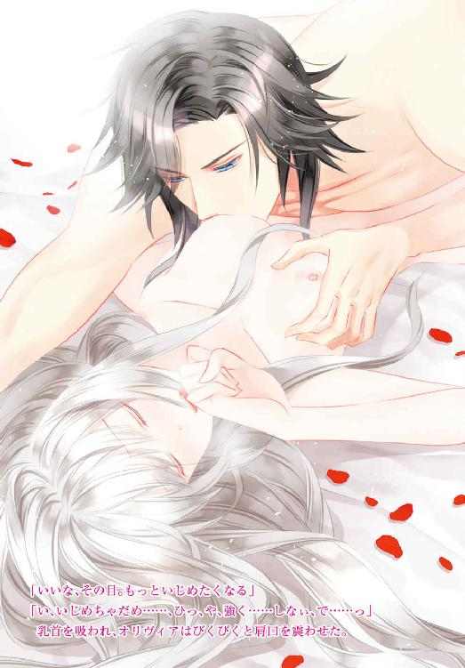
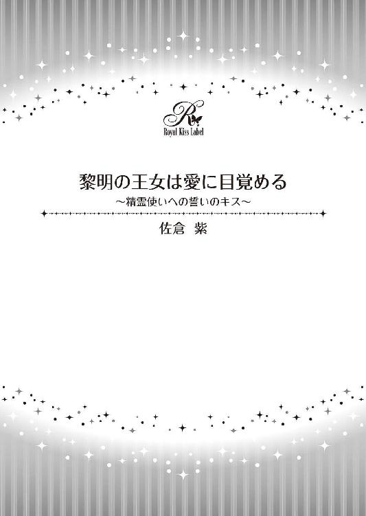
この物語はフィクションであり、実在の人物・団体・事件等とは、いっさい関係ありません。
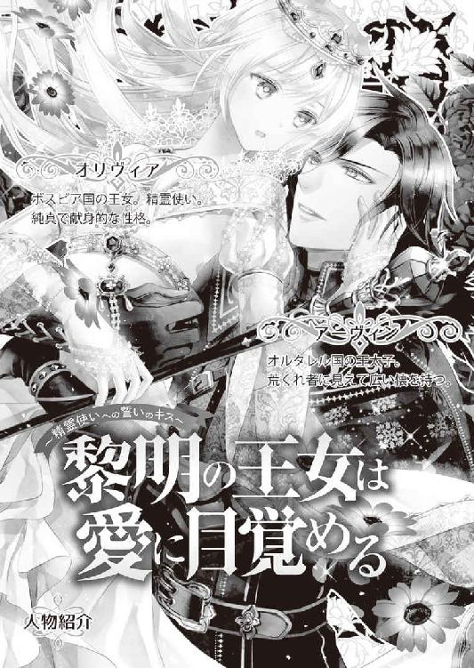
イラスト・蘭 蒼史
自分は死ぬのだと思っていた。この閉ざされた箱庭で。なにをすることもなく。
「──出撃、ですか？ わたしが？ 戦場に？」
今聞いた言葉がにわかに信じられず、オリヴィアはつい聞き返していた。
普段は国の公式行事に使われるという玉座の間には、初夏の日差しが燦々と降り注いでいる。
雪や曇りが多いボスビア国にとって、日差しは恵みの光だ。
だが大きな窓から差し込むその光を浴びても、オリヴィアの身体は温まらない。
むしろ、透けるような長い銀髪と白い肌があいまって、そのまま消えていきそうな風情だ。
ここへくる前からずっと緊張しっぱなしだったせいか、思いがけないことを聞かされ、手足がいっそう冷たくなっていってしまう。
「あ、の......なぜ、わたしが戦場に行く必要があるのでしょうか？」
そもそも国境が戦地になっていることも、今初めて聞いた。
オリヴィアが暮らす離れは王城の敷地内にあったが、あいだには森や王家の墓地などがあり、近づく者はほとんどいない。世話係もコロコロ変わるし、世間話をする間柄でもないので、我が国が戦時中であることなど、オリヴィアはまったく知らずに過ごしていた。
世話係や警備の者たちも普段通りに動いていたから、よけいに外界の変化に気づけなかっただけだろうが。
それに──
（戦地へ出撃しろというのは、つまり......）
「わたしに、その......人殺しを、しろと、言うのですか？」
自分で言っていて震えが走った。戦争というのが敵と味方に分かれて殺し合う場だというのは知識として知っている。だが、いざ自分がそれをするとなると......
みるみる真っ青になったオリヴィアに気づいたのだろう。高い位置にしつらえられた玉座に腰かけたオリヴィアの父──このボスビア王国の国王は、「いやいや」と煩わしげに手を振った。
「人殺しをするのではない。可愛い我が娘に、そのような血生臭いことを強いるものか」
オリヴィアが生まれるなり、彼女の母である王妃とともに離れに幽閉しておいて、『可愛い娘』もなにもないと思うのだが。
「そなたにしてほしいのは、我が国に無断で押し入ってくる無礼な隣国の兵を追い出してほしいというだけだ。なにも敵兵を傷つけることはない。そなたの持つ特別な力ならば、彼らを無傷で国境の外に運ぶことも可能であろう？」
──確かに、オリヴィアの力なら、それは可能かもしれない。
だが大勢に向けて力を振るったことなど皆無だし、もし失敗したら......
「引き受けてくれるならば、そなたの住まいを王城に移そう。そなたももう十五になったのだから、あのような寂れた離れで過ごすよりも、社交界に出て贅沢に暮らすべきだ。これまで放っておいた罪滅ぼしも兼ねて、もっとも広い部屋と、たくさんの世話係をつけてやろう。ドレスも宝石も浴びるほど贈ってやる」
離れの庭には母の墓がある。毎朝庭で摘んだ花を墓前に供え、死後の安寧を祈るのがオリヴィアの日課だ。離れから距離のある王城に入っては、それができなくなってしまう。
「いえ、わたしはそういったものは欲しくないです......」
どのみちこれまで質素に暮らしてきたから、贅沢なドレスや宝石を贈られても困惑するばかりだ。自分の支度も自分でできるから世話係も必要ない。
恐れ多いことだと、オリヴィアは首を横にぶんぶん振って固辞した。
国王は目尻に不快そうな皺を刻んだが、すぐに猫なで声になって提案してくる。
「ならば、そなたの母の墓を立派なものに造り替えるのはどうだ？」
「母のお墓を......？」
オリヴィアの紫色の瞳にかすかに宿った期待の色を、国王は見逃さない。
「そうだ。王家の墓所に、そなたの母の墓を建ててやろう。神官を呼び、新たに葬儀も行おうぞ。どうだ？」
母の墓をどうにかしたいというのは、オリヴィアの数少ない望みの一つだ。
この国の王妃でありながら、国王と不仲であった母はずっと離れに押し込められ、病を得ても医者を呼ぶことも許されなかった。死後に葬儀が行われることすらなく、遺体を離宮の庭に埋葬するのが精一杯だったのだ。
母は王妃の地位に固執することなく、与えられた環境でも明るく生きていたが、身一つで外国から嫁いできただけに、本当はとても寂しくつらかったに違いない。
だからこそ、死後は安らかであってほしい。
長くそう思い続けてきたオリヴィアにとって、父の提案は実に魅力的なものに感じられた。
「どうだ、オリヴィア？」
父王が返事を促してくる。
オリヴィアはごくりと唾を飲み込んだ。心臓が早鐘のように大きく鼓動を打ち、手の平がじっとり汗ばんでいる。
「ほ、本当に......母のお墓を、建ててくださるのですか？」
震える声で尋ねれば、父はにっこりと笑みを浮かべて頷いた。
「おお、もちろんだ。王妃にふさわしい立派な墓を建ててやろう」
「国境を越えてきた隣国の兵を、追い返すだけでいいんですね？」
「その通りだ。王に二言はない」
誰かを傷つけるわけではない。ただ敵兵をこの国から追い払うだけ。そうすればこの国の民を他国の脅威から守ることもできる──
そう強調され、オリヴィアはとうとう決断を下した。
「......わかりました。国境に出向いて、隣国の兵を追い返してきます──」
こうして、オリヴィアは王家所有の馬車に乗り込み、国境へと旅立ったのだ。

国境を越え攻め込んできたという国の名は、オルタレル王国という。
南から西にかけて国境を同じくする隣国で、このボスビアの三倍の国土と豊かな資源を持つ、とても強い国らしい。
だが強いゆえに傲慢で野蛮、恐れを知らない無礼な者たちだと父王は罵っていた。
離れから出ることがかなわなかったオリヴィアは、外界のことをなにも知らない。
知りたい気持ちはあったが、一度知ってしまえば、もっと多くのことを知りたいと願ってしまう。離れから出たいと思ってしまうだろう。
しかし現実には、離れから少しでも遠ざかれば、すぐさま衛兵に引き戻されるのだ。
そのためオリヴィアは、いつしか離れの外の世界について思いを馳せることがなくなった。
最初から知らなければ、ここを出て行きたいとも思わない。そんなふうに自分を戒め、平穏に暮らすことに注力していたのだ。
なのに、父の命令一つで、離れどころか王城からも王都からも離れて、国境に近いこんな場所まで訪れることになるとは......
オリヴィアが今いる場所は、国境にほど近いとある子爵の領地だった。
この先は辺境伯が治める広大な土地だったのだが、そこはもうオルタレル軍が制圧したあとだという。国境を破られてからあっという間の侵略劇だったらしく、辺境伯はすでに捕らえられ、居住としていた城も明け渡したとのことだった。
オリヴィアとともに控えるボスビア国軍の最初の目的は、奪われた辺境伯領を取り返すことにある。それには進撃を続けるオルタレルの軍を破る必要があり、オリヴィアが任されたのは、攻め入ってくる彼らを国境まで追い返すことだった。
（でも、国境まではさすがに距離がありすぎる。力を駆使しても、とうてい無理だわ......）
巻き上がる風を感じながら、オリヴィアは困惑に眉根を寄せる。
いつの間にか天気は少し悪くなってきていた。
それでも馬車に乗っているあいだ中、ずっと窓を布で塞がれ、外を見ることがかなわなかったオリヴィアにとっては、地面に足を下ろせるだけでもほっとする。
慣れない馬車での移動......それもすぐさま国境に駆けつけろという命令のせいで、なるべく早く走っていたために、オリヴィアは何度も気分を悪くし吐いてしまうことすらあったのだ。
そうしてようやく到着した場所はとても殺風景な丘の上で、眼下には真横に流れる川と、その向こうに続く草地が見えるだけだ。草地と言っても、ところどころ岩肌が見える荒れた土地なのだが。
さらにその向こうにはオルタレルの国旗がいくつも並ぶ陣が見える。あそこが敵の駐屯地らしい。
今は使者同士がやりとりをして、戦の日取りと時間を決めている最中だという。戦争を始めるためにもいろいろな決まり事があるのだと、オリヴィアは初めて知った。
「オリヴィア王女とおっしゃいましたか。ひとまずあなたに望むのは、明日の戦で、攻め込んでくるオルタレル軍をすべて退かせてほしいということです」
「あの、退かせる、というのは、つまりどうすれば......」
「そうですな。敵はおそらくあの川あたりに兵を並べる。その兵を、敵の旗が立っているよりさらに向こうに追い払ってほしい......という感じですかね」
戦闘指揮を執るという将軍が、気のない様子で説明する。
きっと彼はオリヴィアの持つ力がどういうものか知らないか、知っていても信じていないので、少しも頼るつもりがないのだろう。実際、彼の背後では戦に備えて、兵たちが忙しなく行き来している。剣や甲冑を磨いたり、馬を引いてきたり......
オリヴィアが暮らしていた離れは、木々に囲まれた寂れた場所ではあったが、そのぶん喧噪や物々しさとは無縁の場所だった。大勢のひとや馬が近くを通るだけでも、慣れないオリヴィアはびくついてしまう。
こんな状態で戦いに出られるのかと不安だったが、引き受けたからには逃げ出すことは許されない。
母の墓を建て直したい思いもあるし、ここに集う兵たちをむやみに死なせたくないのも確かな気持ちだ。オリヴィアは不安を押し込め、翌日の戦闘に備えた。
──翌日も天気は回復しないままだった。雨こそ降っていないが、強い風に灰色の雲が流され、太陽の光が切れ切れに届くという、なんとも落ち着かない天気だ。
一応王女であるため、一人用の丈夫な天幕を用意されたオリヴィアだったが、緊張のせいか一睡もできなかった。寝不足で頭がかすかに痛む中、馬に乗った彼女は丘の上から川を見下ろす。
昨日将軍が言っていたとおり、オルタレルの軍勢はその川に沿うように、大量の兵を待たせていた。
川は浅いがかなりの幅がある。兵同士が衝突するとなると、川の水を跳ね上げながら、水に膝まで浸かって戦うことになるのだろう。草地で戦うより体力を消耗しやすい上、武器や防具もすぐ駄目になってしまう。かといって川岸から矢を放っても相手には届かない。
戦が始まったら、こちらも丘を駆け下りて川を目指すことになるようだ。
「あの......その前に、わたしになんとかさせてもらえませんか？ あの旗のところまで敵の兵を押し戻せばいいのでしょう？ それならなんとかできますから」
おずおずと申し出ると、将軍は「なにを世迷い言を」という目を向けてくる。
しかしオリヴィアを戦力として活用しろと命令を受けているのだろう。「わかりました」と素っ気なく答えた。
やがて戦の始まりを告げる矢が放たれる。それを見た両軍がうおおおーっと鬨の声を上げた。
大地すら震わせる大声に、先頭にいたオリヴィアはまたびくっとしてしまう。
さっそく向こうの兵たちが川に入ってきた。本来ならこちらも丘を駆け下り、その勢いのまま迎え撃つところだ。
だがオリヴィアは右手を高く掲げ、自分のうしろに集う兵たちを押しとどめる。そして紫の瞳を閉ざし心の中で強く念じた。
（水の精霊たち──お願い。川に入ってくるひとたちをそこから追い出して）
すると、世にも不思議なことが起こる。
さらさらと流れていた川の水が、急にごぽりと不穏な動きを始めた。そして、まるで嵐の日のようにざばざばと大きな音を立てて波が立ち上る。その激しさたるや、岩を砕く荒波のようなすさまじさだ。
当然、川を渡ろうとしていた敵兵は足を取られ、何人かがもんどり打って水の中に倒れ込む。
だがこれだけ波が立っているのに、彼らは溺れることなく岸へと大きく打ち上げられた。
離れた距離にいても、敵兵が悲鳴を上げながら這々の体で川から這い出すのがわかる。
オリヴィアの隣にいた将軍が驚きのあまり目を剥いていた。彼が鋭い視線を向けてくるのを感じつつ、オリヴィアはさらに強い意志で呼びかける。
（風の精霊たちも集まって。あのひとたちを、ずっと向こうに吹き飛ばして！）
今度はどこからともなく強風が吹き荒れ、敵兵に一気に襲いかかった。
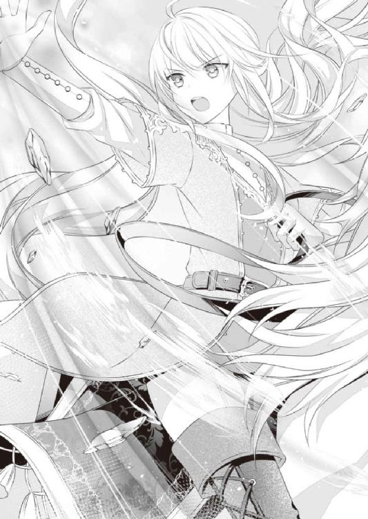
ただでさえ風が強かった中だ。オリヴィアの呼びかけに、上空で遊んでいた風の精霊たちはすぐさま駆けつけた。彼らはオリヴィアの願いに忠実に応え、岸で右往左往する敵兵を足下から持ち上げて転がしていく。
風に煽られた何人かが痛そうに地面に叩きつけられるのを見て、オリヴィアは心の中で「ごめんなさい」と謝った。
本当は敵のことだって傷つけたくはない。ただ追い払うだけにしたいが、そのあたりのさじ加減はなかなか難しかった。
やがて戦闘は無理だと判断したのか、敵のほうから撤退が始まった。我先にと陣地へ敗走する敵兵を見て、オリヴィアの背後から自然と雄叫びが上がる。......否、勝ち鬨だ。
（これでいい......のよね。わたしがやることは......）
土埃を巻き上げながら撤退する敵兵を見送り、オリヴィアはほーっと息を吐き出した。
オリヴィアの願いを叶えた精霊たちが、彼女の周りに集まって楽しげにくるくる踊り出す。
手の平大の人形に見える彼らは、オリヴィアの目にははっきり見えるけれど、この国のほとんどのひとには認識されない存在だ。そのため、将軍は驚愕とわずかな畏怖の浮かぶ瞳でオリヴィアを見つめていた。
「あ、の、これで敵が撤退したので、戦は終わり......で、いいんですよね？」
精霊たちにお礼を言ったオリヴィアは、将軍に視線を向けて確認する。将軍はハッと我に返った様子で、慌てて頷いた。
「は、はい。ひとまずは、これで......」
「なら、もう兵を引きましょう。なんだか疲れているひとも多いですし、休ませてあげたほうがいいと思います......」
チラリと背後を振り返ったオリヴィアは、槍を手にした歩兵たちの何人かが顔色を悪くしているのを見てそっと進言する。将軍は一瞬顔をしかめたが、反論するほどではないと思ったのか、黙って頷いた。
こうして、兵同士がぶつかり合ったら相当な被害が出ていたであろう戦は、死者どころか重傷者を出すこともなく、味方に至っては怪我人なしで終結したのだった。
「あれが『精霊使い』の術ですか......。いやはや、話には聞いていましたが、これほどの力とは思いも寄りませんでした。素晴らしい」
その夜。大きな天幕に呼ばれたオリヴィアは、将軍の讃辞に曖昧に微笑んだ。
この国のひとにはなかなか見えないという『精霊』だが、ここよりもっと西、それこそオルタレル国の人々の中には、オリヴィアと同じように彼らを認識できる人間が多いらしい。
だが彼らの姿が見えても、その彼らを使役できる人間は限られる。
彼らは『精霊使い』と呼ばれ、精霊たちの力を借りて様々なことができるのだ。なにもないところに火をおこしたり、枯れた土地に雨を降らせたり。
オリヴィアの母である王妃が精霊使いで、オリヴィア自身は母の才能を受け継いだ形だ。娘が物心つく前からそこここに存在する精霊の姿を目で追っていることに気づいた母王妃は、精霊使いとしての心得を早い内から娘に伝授していた。
おかげでオリヴィアも『精霊使い』として彼らを使役することができている。
とはいえ相性というものがあるらしく、オリヴィアがお願いしやすいのは水と風の精霊たちだ。火の精霊は気が強くてなんだか気後れしてしまうし、大地の精霊はもともと人間になつかないらしく、呼びかけても沈黙を保たれる。
普段の生活では、せいぜいお茶を飲みたいときにポットにお湯を注いでもらったり、洗濯物を乾かしたいのでそよ風を送ってほしい、とお願いするくらいだった。
あれだけ大量の人間を追い払うことなど初めてだったから、上手くいくかどうか不安だったが、なんとかなったらしい。
だが、そのぶん集中力を相当要したのだろう。天幕に引き上げるなりどっと疲れを覚えたオリヴィアは、今も眠くて仕方ない状態だった。
そんな彼女を尻目に、将軍と軍人たちは明日の作戦を練っている。オリヴィア一人で兵を退かせることができるとわかったから、明日には川の向こうに陣を移動させ、そこから一気に攻め入ろうと考えているのだ。
ほどなく頭が船をこぎ始めたオリヴィアは寝るように言われ、ありがたく自分の天幕に戻る。
毛布にくるまるとあっという間に眠気が押し寄せ、彼女はそのまま泥のように眠った。
だが、翌日にさっそく問題が起きた。オリヴィアを盾に一気に川を渡って辺境伯領へ突っ込もうとしていたところに、斥候から知らせが入ったのだ。
「敵襲です！ 相手は少数ですが、騎馬した状態でこちらに向かってきます！ いかがいたしましょうか......!?」
「敵襲だと？」
なんの前触れもなく攻め込んでくるなど奇襲もいいところだ。将軍たちはすぐに立ち上がり、オリヴィアを急かした。
「またすぐに風を起こして追い返してやれ！」
突然の攻撃に怒りが募っているのか、それまで丁寧だった将軍の口調がすっかり変わっている。
そのことにどぎまぎしつつも、馬に跨がったオリヴィアは丘を少し下り、川を渡ってくる敵兵を見据えた。
本当に少数の隊だ。全員騎乗しているが、人数は十人に満たない。これならすぐに風を使って押し戻せる。オリヴィアはすぐに精霊たちに呼びかけた。
だが昨日と違い彼らの集まりが悪い。不思議に思いつつ、呼びかけに答えた精霊たちにオリヴィアは強く念じた。
「あのひとたちを彼らの陣地まで押し戻して！」
風の精霊たちは突風となって、矢のように集団に襲いかかる。
だが、昨日のように彼らを転がすことはできなかった。
それどころか、精霊の気配に気づいた様子で、先頭を走っていた騎士がおもむろに剣を抜き放つ。銀色に光る剣に、オリヴィアは不思議な禍々しさを感じて身震いした。
男は真横に構えた剣を、おもむろに大きく振るう。
普通の人間には、ただむやみに剣を振り回したようにしか見えないだろう。
だがオリヴィアにはその効果がはっきりわかった。彼が剣を振った瞬間、風の精霊たちが強い力で跳ね飛ばされたのだ。精霊たちは声にならない悲鳴を上げて、悪戯な夜風に煽られた蝋燭の火のごとく消えてしまった。
「そんな......!?」
精霊が跳ね飛ばされるなど聞いたことがない。驚愕するオリヴィアは、集団がどんどん迫ってくるのを見て慌てて新たな精霊たちを呼ぶ。
忠実な精霊たちが一気に集まったが、やはりあの男の剣の前では歯が立たない。
剣が振るわれるたびに次々と掻き消されていく精霊たちに、オリヴィアは混乱と恐怖を感じて真っ青になった。
「いったいどうして......っ！」
将軍たちも異変に気づいたのだろう。オリヴィアの力がまったく通じないのを見て、慌てて出撃の準備をする。
だが一歩遅かった。それより先に集団がオリヴィアのすぐ前まできてしまう。オリヴィアはとっさに手綱を引き、馬首を返して自陣に逃げようとした。しかし焦りのためか馬は言うことを聞かず、それどころか大きく首を振って後ろ足を上げる。
「きゃあっ！」
危うく振り落とされそうになって、オリヴィアは馬の首にしがみついた。
ほぼ同時に彼女は敵に囲まれる。
「おまえが精霊使いだな」
銀色に輝く剣を抜いたまま、先頭にいた騎士が問いかける。彼は片手で兜を脱ぐと、オリヴィアを見据えニヤリと笑った。
土埃が立ち上る中だから顔はよく見えない。だが声には張りがあり、笑みを刻む口元も男らしく引き締まっていた。
オリヴィアは恐怖を覚え、馬の首にしがみついたまま凍りつく。
「おまえのような腕のいい精霊使いが、まさかボスビアにいるとは思いも寄らなかった。おい、連れて行くぞ」
「はい」
「なにを......！」
近くにいた別の騎士たちが、次々とオリヴィアに手を伸ばしてくる。
オリヴィアは必死に精霊に助けを求めた。風の精霊たちがすぐに集まって、無遠慮に手を伸ばす騎士たちを跳ね飛ばすが、ほどなく銀色の剣に振り払われる。
「おとなしくしろ。女相手に手荒なまねはしたくないからな」
「いやっ！」
それでも抵抗すると、騎士の一人が首のうしろに手刀を叩き込んでくる。
突然の衝撃に身体がのけ反り、視界がひっくり返った。細い身体がずるりと馬の背から滑り落ちる。
落馬する寸前で、オリヴィアは男の腕に受け止められた。
「行くぞ」
男の傲慢な声がする。そのときにはもうオリヴィアは意識を失い、されるがままになっていた。
＊＊＊
「う、ん......」
頭にかすかな痛みを感じ、身をよじったオリヴィアは、次いで首のうしろがズキズキ痛むことに気づき顔をしかめる。
いったいなにが起きたのだろう。自分はいつの間に寝台に横になったのか。
寝台......なんだかいつも自分が寝起きしているものより、ふかふかと柔らかい気がする。
それにここ数日は、天幕にしつらえられた小さな寝床で丸まって寝ていたのではなかっただろうか。
──そう考えた瞬間、暖かな毛布に包まれていた身体から血の気が引く。
ハッと目を開けたオリヴィアは、毛布を跳ね飛ばす勢いで身を起こした。
「いっ......たぁ......」
途端に首のうしろが痛んで、思わずそこを両手で押さえてうずくまる。
涙目になりつつ、オリヴィアはゆっくり周囲を見回した。
薄暗いのでよくわからないが、壁際に灯された蝋燭のおかげで部屋の全容はなんとなく見て取れる。
一番に気づいたのは、蝋燭と反対側に大きな窓があることだ。ほとんど夜になりかけた空から夕焼けの名残がわずかに見える。
だがそれを綺麗と思うことはできなかった。なんと窓に太い鉄格子が嵌められていたのだ。
別の小窓にも同じく鉄格子が嵌まっていて、仰天したオリヴィアは寝台を飛び出し窓に飛びつく。
硬い鉄格子はオリヴィアの力ではびくともしない。隙間から下をのぞき込んだ彼女は鋭く息を呑んだ。
高い......オリヴィアが寝起きしていた離れの二階よりさらに高くて、思わず足がすくんだ。
どこかの塔の一室だろうか？ いつの間にか閉じ込められた......？
どうして......と記憶を反芻した彼女は、戦場で銀の剣を持った男と、その仲間であるオルタレルの騎士たちに囲まれたことを思い出した。
精霊たちをことごとく跳ね飛ばした銀の剣と、その使い手の男を思い浮かべたとき、首のうしろに衝撃が走ったことも思い出す。
「わたし......敵に捕まってしまったのだわ」
その後の記憶は途切れているが、気を失ったところを連れ攫われたと見て間違いないだろう。
オリヴィアは真っ青になってしまう。敵兵を追い出せと父に命じられながら、みすみす捕まってしまうとは。
これでは両軍がぶつかり合って多くの犠牲者が出てしまう。母の墓の建て直しはもちろんだが、戦争を避けるためにも、オリヴィアはここへやってきたのに......！
「そうだ。精霊たちを呼べば......」
自分が精霊使いであることをハッと思い出し、オリヴィアは集中する。火の精霊を呼べば鉄格子を高温で溶かせるかもしれない。自分一人が通る隙間ができれば、ここから飛び降りて風の精霊に受け止めてもらえるかも......！
だがオリヴィアの願いと裏腹に、いくら呼びかけても精霊は集まってこない。
いつもは少し呼びかけるだけで、そよ風が吹いたり水面が動いたりするものなのに。そういった気配もいっさいなくて、オリヴィアは激しく狼狽した。
「どうして......？ どうしてみんな集まってくれないの!?」
こんなことは物心ついてから一度もなかった。オリヴィアはほとんど泣きそうになりながら虚空に向けて叫ぶ。
──そのときだ。
「それは、おまえの手首に精霊よけの腕輪を嵌めさせてもらったせいさ」
背後からいきなり声をかけられ、オリヴィアは「きゃあっ!?」と飛び上がった。
「だ、だれっ？」
鉄格子にすがりつきながら振り返ったオリヴィアは、再び悲鳴を上げそうになる。
いつの間に部屋に入ってきたのか。そこには、あの銀の剣を振るっていた騎士がいた。
戦場でまみえたときと違い、頑丈そうな鎧もマントも兜も身につけていない。
それでもこちらを見つめる眼光はあのときとまったく同じで、オリヴィアは混乱と恐怖のあまりへたり込みそうになった。
「ほら、その腕輪だ。おれの剣と同じく、精霊が嫌う特別な銀で作られている。それを嵌めている限りおまえは精霊を呼べないし、精霊のほうも好き好んで近寄ってこない。ボスビアは精霊使いがほとんどいないと聞いていたから用意する必要もないと思っていたが、一応持ってきておいて正解だったな」
男が指さすほうに視線を向けてみれば、確かにオリヴィアの左の手首には、銀色に光る腕輪が嵌まっている。
繊細な彫刻が施された細い腕輪だ。しかし見かけよりずっと頑丈で、引っ張っただけではびくともしない。おまけによく見れば繋ぎ目部分に小さな鍵穴があった。
「......っ、外してください！ どうしてわたしを捕まえたりなんか......っ」
「そりゃあ、おまえに精霊術を駆使されれば、我がオルタレル軍は一歩も先に進めなくなるからさ。精霊を弾く剣を持つのがおれだけとあっては進軍の効率が悪すぎる。術者を捕まえるのが一番手っ取り早い」
「どうしてボスビアに進軍してくるの......!? この国を、侵略するつもりですか？」
「侵略、ねぇ......」
男は意味深に呟き、軽く肩をすくめた。
相手を馬鹿にするような仕草に、オリヴィアはカッとなる。だが反論するより早く、大股で近寄ってきた彼に腰をさらわれ、横抱きに抱え上げられてしまった。
「きゃあ！ なにを......！」
「悪いな。こっちも先にやることがあるんだ」
そう言って、彼はオリヴィアをぽんっと寝台に投げ落とす。
起きたときも思ったが、寝台はとても柔らかくて、乱暴に落とされても少しも痛くなかった。
おまけにとても大きくて天蓋までついている。こんなときでなければ、物語に出てくるお姫様の寝床だと興奮するところだ。
だが男が靴を脱ぎ捨て寝台に上がってくるのを見ては、とても平静ではいられない。
なにをされるかわからず、オリヴィアはじりじりと寝台の上を後ずさった。
「い、いやです、こないで......っ」
だが願いも虚しく、肩を掴まれ寝台に仰向けに倒される。男の身体が馬乗りになってくるのに、オリヴィアは「ひっ」と喉が詰まったような声を上げた。
「おまえの力を半減させるために、純潔をもらう。おまえはもともとかなり力の強い精霊使いだ。処女をなくしたところで、並の術士より優秀なままのはずだ。悪く思うなよ」
「純潔......、しょじょ？」
聞いたことのない言葉に、オリヴィアは目を見開く。
自分が優秀な精霊使いという自覚もない。自分と亡き母以外で、精霊を使役できる者に会ったことがないのが大きな原因だが......
「おれも痛い思いをさせるのは本意じゃないんだ。だからあんまり抵抗するなよ」
ニヤリと笑いながら言われて、オリヴィアはますます恐怖を煽られる。
なにをされるのかわからないが、どうやら痛みを伴うことらしい。
──というより、敵に捕まったのだから、無事で済むほうがおかしいのではないか？
痛いことと言うからには、拷問されたり......殺されることもあり得るかも。
一気に湧いてきた死の恐怖に、オリヴィアは激しく動揺する。
いずれは、あの離れで朽ち果てるのだと漠然と考えていた。
しかし痛い思いをした挙げ句、誰かに命を奪われるなど考えたこともなかった。安らかに逝けるならまだしも、苦しいのは予想外だし、なにより怖い。絶対にいやだ。
そうこうしているうち、着ていた薄手の夜着の襟元に手をかけられ一気に破られる。
胸元から腰までが露わになって、オリヴィアは鋭く息を呑んだ。
「い、いや......っ」
このままでは本当に殺される。紫の瞳から涙がぼろりとこぼれた。
オリヴィアは半狂乱になって、のしかかる男から逃れようともがく。
「いやっ、いやあああ！ やめて、殺さないでぇ......！」
「あ？」
男が怪訝な顔をするが、オリヴィアは頭を抱え込んで子供みたいに泣きじゃくった。
「し、死ぬのは、いや......っ。いやなの、助けて......！」
「おい......」
オリヴィアがあまりに悲壮に泣くせいか、男は虚を突かれた面持ちで身を起こした。
「殺しはしないぞ。なんでそんな勘違いするんだ？」
「だ、だって」
ひっく、としゃくり上げながら、オリヴィアは言い募った。
「い、痛いこと、するみたいに言うんだもの。わ、わたしはあなたにとって敵だし......、捕まったから殺されるって、思っ......、う、うぅっ......」
男は「はぁ......」と盛大なため息をついた。
「そういうことか......。おい、戦争で捕まえた敵をすぐに殺すなんて、あり得ないぞ。戦場で戦って殺すんならまだしも、捕虜をすぐさまどうこうすることはなくてだなぁ......」
「ぅうー......」
「あ──、とにかく泣くな！ せっかくの可愛い顔が台無しだろうが。こっちも萎える。泣き止めって。ひどいことはしないから！」
そう言って、彼はオリヴィアをぐっと引き起こすと広い胸に抱え込む。
男のひと......というより他人にこんな風に抱きしめられるのは、母が死んで以来一度もなかっただけに、オリヴィアはかなりびっくりした。驚きすぎて涙も引っ込んだほどだ。
（あったかい......）
病で倒れた母は最期の頃は痩せ細って体温が低くなってしまい、抱きしめても切なくなるばかりで涙がこぼれた。
だがこの男の体温はオリヴィアより高く、身体もがっしりしていて、寄りかかってもびくともしない。
そのたくましさと力強さに、オリヴィアはなんだか胸が温かくなるのを感じた。
「泣き止んだか？ ん？」
「あ、は、はい......。泣き止み、ました」
大きな手で頭をわしゃわしゃと撫でられ、オリヴィアは目を白黒させる。男がかなりほっとした様子で「そうか」と笑ったのが、いっそう驚きだった。
「えーと、おまえ、こうやってさわられるのはいやじゃないか？」
頭を撫でていた手で頬を包まれ、オリヴィアはこくんと頷く。
ただふれられているぶんにはいやな気持ちは湧いてこない。ただ至近距離で瞳をのぞき込まれると、気恥ずかしさに顔が熱くなってくるが。
「じゃあ、こうされるのは？」
言いながら、男がより顔を近づけてくる。目を丸くしてそれを見ていたオリヴィアは、ほどなく唇に柔らかななにかが当たるのに気づいて、ぴくっと小さく震えた。
「んっ......」
とっさに身を引こうとするも、太い腕を回されてそれまで以上に引き寄せられる。
かろうじて肩に引っかかっていた夜着が落ちて、上半身の素肌が剥き出しになった。小ぶりな乳房が男の胸板に潰され、心臓がどきどきと騒ぎ出す。
緊張から唇を開いて大きく息を吸い込んだ瞬間、温かく湿ったなにかがするりと口腔に入り込んできて、オリヴィアは先ほどより大きく震えた。
「ンン......！ ふ、あ......？」
それはオリヴィアの頬の内側や歯列をかすめ、舌をするりと絡め取ってくる。同時に温かな吐息が伝わってきて、オリヴィアはようやく、重ねられた唇を縫って彼の舌が挿り込んできたのだと気がついた。
「ん、んっ......！」
押し戻そうとオリヴィアも舌を使うが、より深く絡まり合っただけだった。深く抱き込まれ、細い背がのけ反る。
彼にあちこち舐められるたび、腰元に奇妙な震えが走って身じろぎせずにはいられなくなる。
唇を合わせるだけでも衝撃的なのに、舌を絡ませ合うなんて......
こんなふれあい方がこの世には存在するのかと、ただただ驚くばかりだった。
「ん、ぁ......っ」
唇を合わせながら首筋から頬までを撫でられ、髪を掻き上げ地肌にじかにふれられると、力が抜けて体中がくたくたになってしまう。
そのうち頭も真っ白になってきて、オリヴィアは危うく気絶しそうになった。
「っ、おい、息を止めるなって。どれだけ初心なんだ」
「......ふぁ......」
唇を離した男が焦った様子で揺さぶってきたが、オリヴィアはぼうっとしたまま相手を見上げるばかりだ。
もう日はとうに落ちて、室内を照らすのは蝋燭の淡い炎だけだ。その中でも、オリヴィアの頬が鮮やかに紅潮し、紫の瞳が今にもこぼれそうなほどトロリとしているのが、男の目にはっきり映る。
男が大きく息を呑んだ気がしたが、はぁはぁと浅い呼吸を繰り返すオリヴィアはそこまで気がつかなかった。
「い、まの......なに......？」
こぼれそうになる唾液をなんとか呑み込み、オリヴィアは男に尋ねる。
男は何度か瞬き、「なにって......」と戸惑った様子で答えた。
「キスに決まってるだろ？ まさかキスも知らないなんて言わないよな？」
「キス......？」
オリヴィアは呆然と繰り返す。
「......嘘です。だって、キスって、ほっぺたやおでこや、手にするものでしょう？」
少なくても、オリヴィアと母のあいだで交わされるキスはそういったものだった。
感謝や親愛の気持ちを伝えたいとき母の真っ白な頬に口づけると、心から嬉しそうに微笑んでくれた。お返しのキスを額にされるのがオリヴィアはとても好きだったのだ。
当時のことを振り返りながらだったせいか、自然と幼い言い方をしたオリヴィアに、男は何度目かの驚いた顔をした。
「まさか、だったか。キスも知らない世間知らずじゃ、殺されると勘違いするのも仕方ないことか......」
はぁ、と再びため息を吐き出し、男は思い直した様子で顔を上げた。
「いいか、今のキスは大人のキスだ。頬や手に口づけるのもキスはキスだが、大人のキスはそれとは違う。もっと気持ちよくて、いいものだ」
「気持ちいい......？」
「さっきもよかっただろ？ 身体がくたっとなってた」
オリヴィアは頷く。ちょっと息苦しくてびっくりしたが、口腔内を優しくなぞられ、舌を絡められるのは悪くなかった。
「今からするのはそういうことだ。初めてのことだから戸惑うかもしれないが、おまえは素直に気持ちいいことを感じていればいい。いいな？」
気持ちいいものと念を押され、オリヴィアはわけがわからないものの素直に頷く。
しらふであればとんでもないことだと逃げ出すだろうが、先ほどのキスですっかりくたくたになった身では、まともな考えなど働くはずもなかった。
それに、この男にすっぽりと抱きしめられ頭がふわふわする快感を与えられるのは、さほど嫌ではない。
（むしろ、なんだか......ほっとする......）
使用人や衛兵と顔を合わせても、親しく言葉を交わすことも視線を合わせることもない生活を続けてきた。そういうものなのだと幼いながら察していたが、二年前に母が亡くなってからは、誰とも口を利かない日々があまりに味気なく切なく感じてたまらなかったのだ。
わずか二年間......けれどまだ十代の少女にとっては、あまりに長い二年間だった。そのあいだ胸の裡に巣くった孤独は、オリヴィア本人が思うよりずっと深く大きい。
それこそ、優しく声をかけられ温かな腕で抱きしめられれば、すぐにほっとしてしまうほど、彼女は人肌に飢えていたのだ。
そんな中で与えられる大人のキスは、寒い日に飲む蜂蜜入りのお茶のように、彼女を内側からぽかぽかと温めてくれた。
（あったかい......）
再び口づけられ、舌を伸ばすように促される。オリヴィアは従順に応え、彼の舌と自分の舌がふれ合うのをこそばゆく感じた。
「んっ......ふぁ......」
「いい子だ。それから、鼻で息をしろ」
「んぅ......」
髪を払った大きな手が頬から首筋を伝い、剥き出しの肩へ降りてくる。
二の腕を撫で下ろされたときは心地よい刺激にため息が漏れたが、その手が小ぶりな乳房を軽く握ってきたのには驚いた。
「ふ、ぅっ......？」
思わず彼の手に手を重ね、困惑のまなざしを相手に向ける。至近距離でこちらを見つめる男の瞳がわずかに細められた。
「痛いか？」
「い、痛くは、ないけど」
「けど？」
「......恥ずかしいです」
顔を真っ赤にして言うオリヴィアに、男は小さく吹き出した。
「どうして笑うの......？」
「どうして？ おまえが可愛いからさ。まいったな。最初に押し倒したときは、こんなふうにするつもりはなかったんだが」
「......？」
きょとんとした顔で首を傾げるオリヴィアに、男は再び口づけた。
「ん......」
「痛いわけじゃないなら、そのまま気持ちいいって思ってろ」
傲慢な言葉なのに優しい声音で言われるから、オリヴィアは不思議と従ってしまう。
それに恥ずかしさを我慢すれば、乳房を大きな手の平で揉まれるのは心地よかった。
なんだか肌が敏感になって、ちょっとさわられただけで腰のあたりがむずむずする。
背筋を怪しい疼きが伝うのを感じつつ、仰向けにされたオリヴィアは自然と目を伏せていた。
「ん、ぁっ、や、くすぐったい......っ」
「くすぐったいだけか？ ん？」
「ひぁっ......！」
いつの間にか少し芯を持ち始めた乳首をきゅっとつままれ、オリヴィアはびくんと肩を跳ね上げる。
根元を優しくつままれ軽くしごかれると、肌の内側にジンジンした疼きが溜まって、自然と息が切れた。
「や、あ、なんだか......へん......っ」
「すぐに気持ちよくなる。こうやってされると、もっといいはずだ」
「ん、やぁ......！」
男がオリヴィアの胸元に顔を伏せ、なんと指でつまんでいるのと反対の乳首を口に含んでしまう。温かな吐息がかかって、緊張に肌が粟立った。だがすぐに根元からねっとりと舐め上げられて、指とは違う刺激に高い声が漏れてしまう。
「あ、あぁ、いや......っ。舐めちゃ、んっ、......舐めちゃだめ、なの......っ」
「なんで？」
「だ、だって、なにも......出ないもの......っ」
赤ちゃんを産んだお母さんであれば、そこから母乳が出てくることは知っている。母もそうやってオリヴィアを育てたのだと話してくれたことがあった。
だから、乳首を咥えていいのは赤ん坊だけであって、大人の男のひとはいけないはず......
オリヴィアははぁはぁと喘ぎつつなんとかそう説明するが、目の前の男は笑って新たな刺激を与えてくるばかりだ。
「ひぁあああ......！」
それこそ赤ん坊がするように乳輪ごときつく吸い上げられて、オリヴィアの腰は自然と敷布の上から浮き上がる。
「ふ......は、あぁん......っ」
「確かに、赤ん坊はここから乳を含むな。だが男の場合は、こうすることで女をよくしてやるんだよ」
「よく、する......？ ん......っ」
「こうされると気持ちいいだろう？」
彼はさっきから何度も『気持ちいい』という言葉を使ってくる。まるでオリヴィアがこの行為をそう感じられるように擦り込んでいくみたいだ。
でも実際にいやな行為ではないのだ。恥ずかしいしむずがゆいし変な声は漏れるしで、手放しに喜べるものでもなかったが、泣きわめいて逃げ出したいほどではない。
それに大の男が自分の小さな乳房を吸ったり舐めたりするのは、なんだか大きな獣にじゃれつかれているみたいで、さほど悪い気はしなかった。
（丘で会ったときは、大きな剣を振り回していて、とても怖いと思ったけど......）
オリヴィアの肌を愛撫しつつも、時々思い出したように彼女の背や腰に腕を回し、ぎゅっと抱きしめてくれるのはとても嬉しい。
「ふ、ん......っ」
オリヴィアが瞳を揺らめかせるたび、唇に口づけてくれるのも──
「可愛いな。すっかり勃ち上がってきた」
「ひ、ぅ......、ンン......っ」
オリヴィアの下唇をついばみながら、男は彼女の乳房を大きな手で覆って、手の平で乳首を優しく転がす。いつの間にかそこはぷっくり勃ち上がっていた。
指でつままれるのも舌で転がされるのもよかったが、手の平で撫でられるのもたまらない。
気づけばもっとしてとねだるように、オリヴィアは背を大きく反らして胸を突き出す体勢を取っていた。
「は、あぁ......っ、あ、やぁっ、耳......だめ......っ」
男の唇が頬を伝い、耳のそばをペロリと舐めてくる。オリヴィアがびくんと反応すると、男はあろうことか彼女の小さな耳孔に軽く舌を挿れてきた。
耳元で立ち上るぴちゃりという音も恥ずかしければ、なにかをこじ開けるような舌の動きにもぞくぞくして仕方がない。
伏せた睫毛を震わせ、濡れ光る唇からか細い喘ぎを漏らすオリヴィアに、男は満足そうに微笑んだ。
「感度がいいみたいだな。ほら、もっと感じるといい」
「あ、あ、やぁ、だめ......っ。いやぁぁん......」
耳を責められながら強めに乳首をつままれる。指先がわずかに動くたび、甘やかな痺れがジンと肌の内側に浸透し、頭の中に靄がかかった。
刺激を与えられるたび敏感な身体はビクビク震えるのに、彼を押しのける力は少しも湧いてこない。やがて男の手はオリヴィアの薄い腹を滑り、かろうじて夜着が引っかかる腰元へと降りていった。
「ああ......っ」
快感に喘ぐオリヴィアは、夜着がするりと身体から離れて行くのを感じ息を呑む。
肌着は身につけていなかったため、細い腰もすらりと伸びた足も、足の付け根の秘めやかな部分もすべて外気にさらされてしまった。
蝋燭の蜜明かりの中で、真っ白な肌が浮かび上がる。オリヴィアはにわかに狼狽え、それまでふれられていた胸も下肢も両手で隠した。
「恥ずかしがるなよ。とても綺麗な身体じゃないか」
「でも、だって、......細すぎるから......」
十五歳ともなれば自分の体つきが気になる年頃だ。
離れを行き交う使用人の中には、自分と同じ年頃の若い娘もいた。彼女たちは一様に丸みを帯びた乳房と張りのある臀部を持っていて、密かにうらやましいと思っていたのだ。
彼女たちと比べ自分は胸も小さいし、くびれがある体つきとはとても言いがたかったから。
「時間が経てば自ずと変わるさ。おれはこのままでも充分だがな。感度がいいのも気に入った」
「んっ」
耳のうしろに音を立てて口づけられ、オリヴィアはまたぴくんと震えた。
おかげで彼の手が下肢に伸ばされていることに気づくのが遅れる。あっと思ったときにはオリヴィアの手はさりげなくよけられ、彼の大きな手が臀部の丸みを撫でていた。
「ふっ......」
「ほら、気持ちよくしてやるから」
また『気持ちいい』だ。けれど彼は本当にそうしてくれるから困る。
男は先ほどと同じように小ぶりな乳房を愛撫すると、唇を下へ下へと滑らせていく。
やがて尖らせた舌先が小さな臍のくぼみに挿れられるのを感じ、オリヴィアは「ひ！」と声を上げた。
「やぁっ、あ、そこ......あぁあ、だめ......！」
「へぇ。ここも感じやすいんだな」
「あンン！」
深いところをえぐるようにされると、愉悦がじかにお腹の奥に響いてたまらなくなる。
胸を愛撫されたときも腰のあたりがむずむずしたが、それ以上の刺激だ。ただ横になっているのもつらくて腰が揺らいでしまう。
臍を舐められながら乳首をつままれて、三点からくる刺激にオリヴィアは息も絶え絶えになった。
「はっ、はぁっ、はぁああ......！」
「いい感じだな」
男はかすかに微笑み乳房から手を離す。そしていきなりオリヴィアの太腿を掴んだ。
「うっ......？」
快感に耐えるのに必死で足はだらりと投げ出したままだった。それをいきなり掴まえられ、さらには大きく開かされて、オリヴィアは驚きに息を呑む。
気づけば彼の目の前に秘所を突き出す形になって、彼女はたまらず悲鳴を上げた。
「きゃあっ!? だ、だめっ、見ちゃだめ......！」
「なんでだ？ すっかり濡れて、おれを待ってヒクついているぞ？」
「ひっ、ぁああ！」
あろうことか、薄紅色の割れ目のあたりをペロリと舐められ、驚きと衝撃にオリヴィアは大きく目を見開く。羞恥のあまり涙がポロリとこぼれ、紅潮した頬を滑り落ちた。
「だ、だめっ......、あっ......」
止めなくてはいけないのに、大きな手に内腿を撫でられなだめるように肌に口づけられると、腰がふるりと震えて力が抜けてしまう。
相手が誰であっても、決して綺麗とは言えない部分をさらすのはこの上なく恥ずかしいのに......
彼の吐息が肌をくすぐり、その舌先が割れ目をつぅと舐め上げた途端、這い上がる快感にオリヴィアはあっさり陥落してしまう。
「いあっ、あぁあん......！ や、やぁ、舐めちゃ......だめぇ......っ」
「いいや、気持ちいいはずだ。現にこれだけ濡れている」
（濡れて......？）
激しく混乱しつつも、オリヴィアはなんとか自分の下肢に意識を集中しようとする。
言われてみれば、彼が舐め上げたところが湿っている気がする。
汗......？ ならばいいが、もしかしたら気づかぬうちに粗相をしていたのかも......
そう思った瞬間、恥ずかしさと情けなさに目の奥がじわじわ熱くなりすすり泣いてしまった。
「ひ、っく、やだぁ......っ」
「ああ、泣くなって。別に漏らしたわけじゃないんだ。女は気持ちよくなるとここが濡れるようにできてる。自然なことなんだって」
「うぅー......」
そうだとしても恥ずかしいことに変わりない。両手で顔を覆ったオリヴィアを見て、男は一度身体を起こす。そしてオリヴィアの細い身体を抱え込みこめかみに軽く口づけた。
「拗ねるなって。ほら、大丈夫だ」
「ふ、ぅンン......っ」
「こうされるのは好きだろ？」
優しく乳房の膨らみをこね回され、オリヴィアは子供のように頷く。
いい子だ、と男が耳元で囁いた。
そうしてあちこち撫でられながら、ふと、オリヴィアは自分の太腿に当たる硬いなにかの存在に気づいて首を傾げる。思わず足を動かしてそれがなにか確かめようとすると、男が小さく苦笑を漏らした。
「こら、悪戯するなよ。怖がらせたくないから、ギリギリまで隠そうとしてたのに」
「怖いの......？」
オリヴィアは慌てて足を引く。男はまた笑って、オリヴィアの唇に口づけた。
「んう......」
「可愛いな、おまえ」
至近距離でそんなことを言われると、なんだか胸がドキドキして落ち着かなくなる。
一度身体を離した男は、再びオリヴィアの下肢に手を伸ばした。
「ほら、いい子だから足を開け。気持ちよくするだけだ」
オリヴィアはどうしていいのかわからず視線を泳がせる。本気でいやがっているわけではないと感じたのか、男はオリヴィアが決断する前に再びその足を開かせた。
「あ、あ、だめだから......っ」
「駄目じゃない。力を抜いてろ」
「あっ......！」
濡れた肉びらを掻きわけ、舌が挿り込んでくる。彼の顔が足のあいだに落ち着く形になって、どうやっても足を閉じることができない。それをいいことに男は尖らせた舌先をオリヴィアの秘裂にぐっと押し込んできた。
「ひ、あぁあん......！」
そんなところになにかが入る余地があるという事実が、そもそも驚きだ。狭いくぼみに舌を挿れられ、ぴちゃぴちゃと音を立てて舐められるということも。
──それが思いのほか気持ちよく、腰が浮き上がるほど感じてしまうということも、まったく予想外だった。
「あ、あぁあん、そんな......っ、おと、たてちゃ......、ああんっ」
温かな手の平で膝頭を撫でられ、秘所に与えられるのとは違う甘やかな刺激に腰が大きく跳ね上がる。
彼の舌がうごめくたびに、なんだかお腹の奥までうねるみたいで、オリヴィアはいやいやと首を打ち振った。銀の髪が敷布の上をさらさら滑り、汗でしっとりしたオリヴィアの肌をより白く輝かせる。
あとからあとから蜜の湧く秘所を舐め倒しながら、男ははぁはぁと喘ぐオリヴィアのしどけない姿を目に留め、うっそりと微笑んでいた。
「ひっ、あぁあ......っ？ やぁ、なに......？」
そのうち、舌ではないなにかが秘裂の奥へ挿ってくることに気づき、オリヴィアは目を見開く。痛みはないが、舌とは違い圧迫感があって、自然と腰が引けてしまった。
「指を挿れただけさ。この中にも......気持ちいいところがあるんだよ」
「う、うそ......ゆび......？ どうし、て、あっ」
男の長い中指が、愛液ですっかり濡れそぼった中へするりと潜り込む。
指がくいくいと曲げられるとじわりとした快感がそこから立ち上って、オリヴィアはひどく狼狽えた。なんだか尿意に似た疼きも感じられて、自然と下腹に力が入る。
「ふっ、ぁあ......っ」
「ここ、いいだろ？ もっと感じてみろ」
「ああぁぁっ......！」
指を軽く曲げられた状態でざらついた部分を擦られる。じわじわとした愉悦があっという間に広がり、腰全体が熱く疼き始めた。
その上で、彼は割れ目の上部に唇を寄せ、淡い茂みに隠された小さな粒をちゅっと吸い上げる。
「ひあっ......！」
強烈な快感が湧き上がり背が弓なりにしなる。オリヴィアが驚きのあまり目を白黒させていると、男がくつくつと笑った。
「ここが一番気持ちいいところだ。舐めてやるから、力抜いてろ」
「や、やだやだ......っ、う、あぁああん......！」
止める間もなく男の顔が秘所を覆う。彼は唇と舌を使って器用にもそこを剥き出しにした。
唾液をたっぷり纏った舌が、ぷっくりと膨らんだ小さな肉芽を転がしてくる。
「いあぁああ......！ いやっ、あ、くっ、......ンン......ッ！」
優しく撫でる程度の刺激なのに、度重なる愛撫で感じやすくなった身にはつらいと思えるほどの快感だった。
舌の動きに合わせ膣壁を擦る指も動かされてはたまらない。感じやすいところを内側と外側から同時に愛撫され、オリヴィアは湧き上がる快感のあまり噎び泣いた。
「あぁ、あんっ、んぁああ......！ いや、いや、だめ、......なにかくるのぉ......！」
気持ちよすぎておかしくなる。気持ちよくて、熱くて、むずむずして。それがどんどん下腹の奥で膨らんでいって、内側から溢れてしまいそうだ。
未知のその感覚が怖くて、オリヴィアは激しく首を振りながら無意識に逃げを打とうと身体をよじる。だが男は空いた手で易々と彼女を押さえ「大丈夫だ」と声をかけた。
「そのままイっちまえ。楽になるから」
「あ、や、だめ......っ、ひっ！ ンあああ......ッ！」
男の片腕に腰を抱え込まれ、秘所を彼の唇により強く押しつける体勢になってしまう。
ぴちゃぴちゃと音を立てながら秘玉を舐る彼がすぐ間近に見えて、オリヴィアは恥ずかしさのあまり頭が沸騰するかと思った。
彼女に見せつけるかのごとく、長い舌をわざと伸ばして粒を舐め回しながら、男は指を大胆に抜き差しし始める。
硬い指の腹で膣壁のいいところを擦られるたび、とろりとした蜜がぐちゅぐちゅと音を立てながら溢れ出てきた。今や彼の手首まで蜜が伝う有様で、卑猥すぎる光景にオリヴィアはくらくらしてしまう。
「も、もうだめっ......、あ、あぁあ、ひあっ......！」
視覚も聴覚も恥ずかしいことでいっぱいになって、もうなにも考えられない──
「んくっ、ん、ンああああぁ......ッ！」
男がじゅうっと音がするほど強く秘玉を吸い上げてくる。同時に膣内で指をくっと曲げられ、募りに募った快感がとうとう決壊した。
「いや、いや、......ア、あぁあああ──......ッ!!」
艶めいた嬌声とともに、オリヴィアは快楽の極致に上りつめる。
熱い奔流に呑み込まれて頭の中が真っ白になった。少し遅れて身体がガクガクと震えて、まともに息もできなくなってしまう。
「......っ、ふ、あ......、はぁ、はぁ、はっ......」
ぐったりと身体を投げ出したオリヴィアは、未だ冷めやらない余韻に小刻みに震えた。心臓がどくどくと早い鼓動を打つせいか、汗がどっと噴き出してくる。
「気持ちよくイけたみたいだな」
ぼんやりと視線を飛ばすオリヴィアを見下ろし、男が少しほっとした様子で呟いた。
気だるくそちらを向いたオリヴィアは、彼が自身の脚衣に手をかけ前をくつろげるのを、見るともなく見つめていた。
（あれ......なにかしら......？）
そうして飛び出してきた棒状のものを見て、彼女は首を傾げる。
わずかに反り返ったそれは少し赤黒くて、じっとり湿っている様子だ。
絶頂でぼうっとしているせいか、オリヴィアはよく考えることなくそれに手を伸ばす。
きゅっと握り込むと、思った通り熱く湿っていた。なんとも不思議な感触である。
「......無知ってのは怖いな。そう躊躇いなく握られると、こっちも妙な気分になる」
「え......？」
男が実に微妙な顔をして呟いたが、よくわからなくてオリヴィアはきょとんとした。
男は答えず、代わりにオリヴィアに口づける。
まだ絶頂の名残に震える中で、感じやすい舌の根や口蓋を舐められると、それだけで腰がびくんと跳ねた。ヒクつく蜜口から新たな蜜までトロリとこぼれて、オリヴィアはうっとりと目を伏せる。
（気持ちいい......）
先ほど頭が真っ白になったときはびっくりしたし、快楽に追い詰められる感覚は少し怖かった。
けれどそれを越えたあとの気怠い感じは、優しい波に揉まれているみたいで心地いい。
ただ男の手が再び乳房を揉み、もう一方の手が下肢に伸びてくると、あまり落ち着いてもいられなくなったが。
「......あ、あ......いまは、......だめ......っ」
「イったばかりで感じやすくなってるから？」
オリヴィアの戸惑いを正確に言い当てた割に、その手は止まらない。それどころかより深い場所を探り当てようと、今度は指が二本も挿り込んできた。
「や、ぁ......きつい......」
「大丈夫だ。よく濡れてほぐれている。ほら、ここは気持ちいいところだろう？」
「んっ......」
先ほど探し当てられた感じやすい場所を緩やかに擦られ、甘く苦しい快感が再びせり上がってくる。
男は器用に指を抜き差ししながら、手の平で秘所全体を覆ってぐちゅぐちゅと音を立てて責め立ててくる。彼の手の付け根がちょうど剥き出しの肉芽を圧してきて、二重の刺激にたちまち息が上がった。
その上でツンと勃ち上がったままの乳首を舐められ、きつく吸われるともうたまらない。
先ほどよりずっと早く絶頂を迎える予感がして、オリヴィアは背を弓なりに反らしながら、甘い声を漏らし続けた。
「あぁ、あっ、だ......め......っ、またぁ......っ」
泣きそうな声で懇願するも、男の手は止まらない。
そうしていよいよ再び上りつめようかというとき──
「......あ......？ ......っ」
男の手が不意に秘所を離れ、湧き出た蜜が彼の指とともにトロリとこぼれ落ちる。
急に空洞になった膣壁にオリヴィアが戸惑いの目を向けたとき、蜜口にそれまでとは違う熱いなにかが宛がわれたのを感じた。
「な、に？ ......いっ、あぁ──......ッ!?」
それまで指を呑み込んでいた場所に、それとは比べものにならない熱く硬いなにかが、ずぶりと挿り込んできた。
なんの前触れもなく突然挿れられたことで、オリヴィアはこぼれんばかりに目を見開く。
快感にたゆたっていた身体が一気に強張り、背にじわりと嫌な汗が浮いた。
「あ、んっ......」
「息を止めるな。ゆっくり吐き出せ」
「むり......っ。あ、あぁ......」
熱いなにかが奥まで挿り込んできているせいで足がこれ以上ないほど広げられ、喉元まで塞がれているような圧迫感があった。
突然の仕打ちに、オリヴィアの瞳にじわりと涙が浮かぶ。
ついさっきまでとても気持ちよくて温かかったのに。いきなりこんなことをしてくるなんてひどすぎる......！
これまでの前戯は、無知なオリヴィアを油断させるためのものだったのだろうか？
そう考えると、悲しみと情けなさで胸が張り裂けそうになった。
「う、うぅ......っ、ひどい......っ」
「そうだな。我ながらちょっと良心が咎めるくらいだ。ほら、舌を伸ばせ」
「やだっ。......んっ」
首を横に向けて拒絶したのに、男の手がオリヴィアの頬を挟んで、無理やり正面に戻してくる。そして間髪入れずに口づけてきた。
「ふ、う......っ、んあっ......」
秘所に硬い熱棒を埋められたまま、口腔を激しく舐め回される。
身体の下半分は疼痛に強張っているというのに、舌を絡め取られ乳房を優しくこね回されると、忘れかけた愉悦がじわじわと戻ってきた。
「は、あぁあ......っ」
くちゅくちゅと音を立てながら舌を吸われ、下唇をついばまれる。くすぐったさに首を反らすと、今度は耳元に口づけられ、耳孔に軽く舌を挿れられ......
「だ、め......。また、気持ちよくなっちゃう、から......っ」
「痛いよりいいだろ？ おれも、あんまり苦しめたくないんだ」
「うそ......、んっ」
男の唇が首筋を伝い再び乳房に吸いつく。小さな膨らみを舌でたどられるのにびくんと肩を揺らして、オリヴィアはいやいやと首を振った。
だが繰り返し気持ちいい刺激を与えられると、強張っていた身体から力が抜けて心地よさが戻ってくる。
悪戯な指先に背のくぼみをつぅっと撫で上げられるとぞくぞくして、腰がひとりでに揺らいでしまった。
「あ、ンン......っ」
そうすると、未だ埋められたままの熱塊をより強く感じてどぎまぎする。挿入されたときの鋭い痛みは去っていたが、自分の中になにかが入っている感覚は慣れない。
思わず下肢にきゅっと力を入れると、男がぶるりと大きく震えた。
「っ、おれもそろそろ限界だ。少し、動くぞ......」
「え、や、だめっ......、あぁあん......！」
止める間もなく、熱杭がずるりと引き出される。そのまま抜かれるのかと思ったら、再び最奥までぐっと押し込められて、身体が浮き上がるほどの力にオリヴィアはのけ反った。
「はっ、あぁ、や、ぁああ......っ」
緩やかな抽送に合わせ、擦られる膣壁がきゅうきゅうと収斂する。指で慣らされたっぷり濡れていたのもよかったのだろう。抽送されるごとに痛みは遠のき、代わりに頭の芯がふわふわする悦楽が戻ってくる。
「あぁ、はぁ、はぁ......っ、あぁあんっ」
乳首を口に含まれ強く吸われると、快感が腰に響いてたまらなくなる。じっとしているのがつらくて身をよじれば、男が大きな手でオリヴィアの頭や肩を撫でてきた。
「いい子だ。そのまま感じていろ。そう長くかからない......っ」
「あ、あんっ、ンン、ふあっ......」
呼吸を奪うほどに激しく口づけられる。
まるで荒波に揉まれているようだ。いつの間にか抽送も早くなり、下肢からぐちゅぐちゅと蜜が泡立つ音がひっきりなしに響いてくる。
恥ずかしくて、苦しくて、気持ちよくて、わけがわからない快感にオリヴィアは為す術もなく喘いだ。
そうして再び愉悦が決壊しそうなとき、男が低くうめいて、オリヴィアの細い身体を抱きすくめてくる。
「あううっ......！」
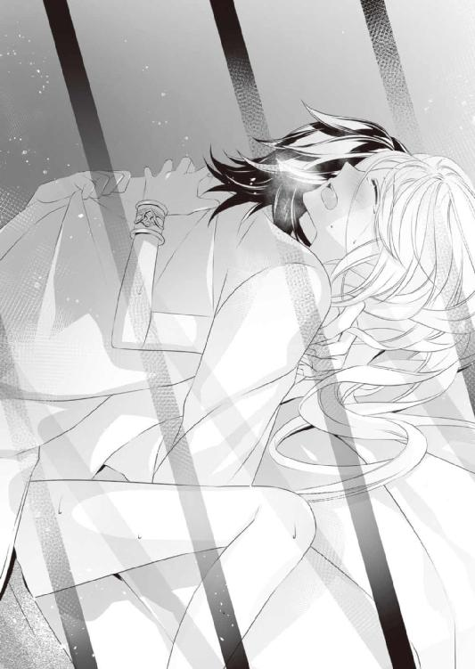
太い腕で苦しいほどぎゅっと抱きすくめられ、さらには腰を激しく打ちつけられて、オリヴィアの中でも快感が弾けた。
開かれたばかりの膣壁がきゅうっときつく締まり、熱杭が限界だとばかりに大きく膨らむ。
そして熱いほとばしりがオリヴィアの奥へ注がれた。
「あ、あ......っ」
どくどくと下腹を満たす熱い感覚に、オリヴィアは戸惑いと少しの恐ろしさを感じて、目の前の男にきゅっと抱きついた。男が大丈夫だと言いたげにオリヴィアの髪を撫で、優しく口づけてくる。
「ふぁ......」
「無理させたな。このまま休め、......と言いたいところだが、あいにくおれのほうはまだ足りない」
「......？ ぅあっ......」
埋められていた熱塊がずるりと引き出される。あとを追うように温かななにかがこぽりと溢れて、オリヴィアは戸惑った。
「あ、あ、なに......？」
「おれが出したやつだ。気にするな。悪いが、もうちょっと付き合ってくれ。挿れることはもうしないから」
「は、あぁん......っ」
言うなり、男が頭を下へと降ろし、オリヴィアの臍のくぼみをちろりと舐める。
敏感な部分を刺激されて、あえなくくたりとなるオリヴィアに気をよくしてか、男はその後も彼女の乳房や秘所にふれて快感を与えてくる。
「ひぁああ......っ、あ、あぁん......」
男の愛撫は確かに気持ちよかったが、あんまり快感ばかり与えられるとおかしくなりそうでひどく困る。
最後には「もう許して」とすすり泣きながら懇願するほどに感じてしまって、オリヴィアは存分に快感を教え込まれたのだった。
まぶしい朝日がちらちらと目元を刺激してくる。
夢も見ない深い眠りからゆっくり引き上げられたオリヴィアは、鉄格子の隙間から降り注ぐ真っ白な光にパチパチと瞬きを繰り返した。
「わたし、どうしたのかしら......、あっ、やっ」
眠い目を擦りながら身体を起こした瞬間、足のあいだからなにかがトロリとこぼれ落ちる感覚があって、彼女は思わずうずくまった。
「あ......」
見れば敷布にはひどい皺が寄っていて、少し汚れた跡がある。身体は綺麗だったが、太腿のあいだを伝い落ちるなにかのおかげで、体中洗い流したい心境だった。
（毛布で拭くわけにはいかないし......）
困り果てたところで、寝台の隅に破られてくしゃりとなった夜着が放っておかれていることに気づく。使っていいものかと迷いつつ、ひとまずそれで秘所の汚れを拭き取った。
「......そうだったわ。オルタレルの騎士に捕まって、閉じ込められて。それで夜......」
鉄格子の嵌まった窓を再び見やり、オリヴィアは深くため息をつく。
閉じ込められた驚きも冷めないまま、あの銀の剣を扱う男に組み敷かれ気持ちよくされてしまったのだ。あいだにちょっと痛いことがあったけれど、またどろどろに溶かされるほど感じてしまって......
詳細を思い出すたびに、オリヴィアはじわじわと顔を赤らめていく。同時に下腹部や内腿の筋肉が痛むことにも気づいて、またため息をついてしまった。
「わたし、これからどうなるのかしら」
手首に嵌まった銀の腕輪を見下ろして、オリヴィアは不安と戸惑いについ呟いてしまった。
そのときだ。窓と反対側にある扉がこんこんとノックされる。オリヴィアは飛び上がるほどに驚いて、「は、はい!?」とひっくり返った声を出してしまった。
「失礼します、お嬢様。朝のお支度に入ってもよろしいですか？」
聞こえてきたのは落ち着いた女性の声だ。オリヴィアは「はい」と答えたが、自分が素っ裸でいることに気づき、慌てて毛布を身体に巻きつける。
ガチャリと鍵が開く音に続き扉が開いて、ふくよかな女性が二人ほど入ってきた。
「おはようございます。お嬢様のお世話係が見つかるまで、あたしたちが臨時で通わせていただきます。どうぞお見知りおきを」
「お世話係......？」
きょとんとするオリヴィアに対し、女性たちはキビキビ動いた。
「おやおや、アーヴィン様ときたら。初めてのお嬢様にずいぶん無理をさせたご様子ですね。あとできちんと叱っておかねば」
「そのままでは気持ち悪いでしょう。湯浴みしましょうね。お湯も運んできていますから、すぐにご用意できますよ」
──アーヴィン？
初めて聞く名前に首を傾げつつ、オリヴィアはあれよあれよと部屋の隅に連れて行かれる。
衝立が置かれたそこには大きな盥が用意してあって、女性の一人が手早く湯を張ってくれた。
垂らされたオイルが柔らかな香りを放つ中、オリヴィアはそろそろと盥に入る。
痺れるような熱さを感じたのは最初だけで、腰まで身体を沈めてしまえば、とても安らいだ気持ちになれた。
「お部屋を調えますから、ゆっくりご入浴ください。手伝いが必要なときは呼んでくださいね」
「ありがとう......」
こんなに甲斐甲斐しく世話されたことがなかったために、オリヴィアはどぎまぎしながらお礼を呟く。
衝立の向こうで女性たちが慌ただしく動いているのを申し訳なく思ったものの、久々の湯浴みが嬉しくて、オリヴィアは少し長湯してしまった。
蒸らした布で頭まで拭けばだいぶさっぱりして、オリヴィアはいそいそと湯から上がる。乾いた布で身体を拭き終えると、女性の一人が戻ってきた。
「この城にもともとあったもので申し訳ないのですが、今日は用意がないのでこちらをお召しください。近いうちにアーヴィン様が仕立ててくださると思いますから」
「仕立てる？」
なにを？ と首を傾げる間もなく、オリヴィアは衣服を着付けられた。
「サイズは大丈夫みたいですね。袖をちょっと詰めますから動かないでくださいね」
「あ、あのぅ......」
「御髪も結い上げましょうか。それにしてもなんて綺麗な銀髪！ 癖がなくてまっすぐで、絹糸みたいにさらさらで。うらやましいですわ」
オリヴィアが躊躇うあいだも、女性たちはうきうきと彼女を飾り立てていく。
やがて支度が調い、姿見をのぞき込んだオリヴィアは大きく息を呑んだ。
（これ、本当にわたしなの......？）
鏡に映ったのは、銀色の髪を一部だけ結い上げドレスを着た可愛らしい少女だった。
ドレスは足下がすっぽり隠れる丈の白い下衣に、水色のローブを合わせてある。青い飾り帯を胸の下に巻き付け、あまった部分は長く垂らしてあった。そういえば玉座の間で父王に出撃を命じられたとき、その隣にいた女性──おそらく、オリヴィアの母亡きあとで王妃となった父王の元愛人と思われる──がこんな格好をしていた気がする。
いつもくるぶしが見える木綿の衣服にエプロンを合わせ、髪も邪魔にならない程度に縛っているだけだったから、自分の変貌ぶりに驚きを隠せなかった。
「朝食の用意もできました。少し冷めてしまいましたが、味は問題ないと思いますよ」
驚きのあまり放心状態になっていたオリヴィアは、女性たちに背中を押されテーブルにつく。
そのときになってようやくテーブルの他にも衣装棚や文机があることに気づくが、並べられた食事を見た途端、意識はすべてそちらへ持って行かれた。
「美味しそう......！」
思わず声を上げてしまうほど、用意された食事は豪勢だったのだ。
ほかほかと湯気の立つスープに丸い白パン。茹でた卵は籠に盛られており、緑の野菜も瑞々しく輝いていた。
「お飲み物はお茶とジュースのどちらがよろしいですか？」
当たり前のように給仕につく女性たちにも驚きながら、オリヴィアは薦められるままカトラリーを持つ。彼女が呆然としているあいだに女性たちはジュースを注ぎ、ゆで卵の殻を割り、野菜を取り分けた。
「わ、わたし、こんなにすごいご馳走は初めてで......」
驚きすぎてすっかり恐縮しながら、オリヴィアは震える手でジュースを受け取る。試しに一口含んでみれば、爽やかな香りが鼻に抜けて、ついごくごくと飲み干してしまった。
「夕べはなにも召し上がらなかったそうですからね。たくさん食べてくださいな」
言われてみれば、昨日は朝食を食べたきりだった。それも従軍中のため、固形食と干し肉のみという味気ないものだったのだ。
離れにいた頃は王城から食事が運ばれていたが冷めていることがほとんどで、本当に寒い日以外は温め直すことなく食べていた。ほかほかと湯気の立つスープを飲むのは本当に久しぶりである。
野菜がたっぷり入ったミルクスープは涙が出るほど美味しくて、実際に涙ぐみながら食べる有様だった。
「昼前にはアーヴィン様が訪れると思いますから、それまでゆっくりなさっていてください。あたしたちは下で本来の仕事をしてますので、用事があったらそこの紐を引いてくださいね」
壁際に下がる赤い紐を指さして、給仕を終えた女性たちは部屋を出て行った。
美しい衣装に美味しい食事を用意してくれた女性たちに、自然と親しみを覚えていたオリヴィアだが、彼女たちが出て行くなりガチャンと響いた施錠の音に、急に現実が戻ってくる。
すっかり気が緩んでいたが、ここはおそらく敵の陣地で、おまけに閉じ込められている状態だ。精霊たちを使役できないから逃げ出すこともかなわない。
だが部屋はとても広々していて、寝台はもちろん他の家具もとても立派なものが置かれていた。足下には素足で歩いても平気なほどふかふかした絨毯が敷き詰められ、火は入れられていないものの、大きな暖炉もしつらえられている。
オリヴィアが暮らしていた離れよりも格段に立派な部屋だけに、扉に鍵と窓に鉄格子さえなければ、身分の高い偉いひとが住まう部屋なのだろうと想像できた。
「でもどうして、こんな素敵な部屋に閉じ込められたのかしら？」
相手はオリヴィアが王女であるとは知らないはずだ。曲がりなりにも敵国の人間なのだから、窓のない地下牢に入れられてもおかしくないと思うのだが......
そんなことをつらつら考えていたときだ。
扉が再びノックされ、錠が外される音が開く。今度はこちらが返事をする前に、さっさと扉が開かれた。
「よう。調子はどうだ？ ......おおっ、そのドレス、よく似合ってるな」
「......っ！」
気安い挨拶とともに入ってきたのは、誰であろう夕べの男だ。
同時に、女性たちが言っていた『アーヴィン』という名前が脳裏に浮かぶ。
「あの、あなたがアーヴィン様......、ですか？」
「そうだ。女たちから聞いたのか？ あいつらはこの進軍のために連れてきた食事と洗濯の係だから、おまえの侍女にはまた別の奴を探すつもりだ。それまで辛抱してくれ」
男はずかずかと部屋に入り込み、オリヴィアが座っていた席の真向かいに椅子を引いて座ってしまう。
オリヴィアは無意識に椅子を引き、彼から少しでも距離を取ろうとしていた。
「ははっ。安心しろ、今は手を出すつもりはない。少し話もしたいしな。おまえだって聞きたいことはあるだろう？」
テーブルに肘を突き、手の平にゆったりと顎をもたせかけて、男が楽しげにこちらを見つめてくる。
まるで悪戯を企む少年みたいな面持ちだ。そこでようやく、オリヴィアは彼がかなり人目を引く容貌をしていることに気づいた。
離れには衛兵も侍女も入れ替わり立ち替わり多くの人間が通ってきていたから、親しくなる者は皆無でも、いろんな人間を見ることはできた。
衛兵は若い男が多かったが、彼ほど整った顔立ちをしていた者はいなかったと思う。
目の前の彼は鼻筋も眉もキリッとしていて、大ぶりの口元も引き締まっていた。顎にも首にも無駄な肉はなく、袖口からのぞく腕は太くがっしりしている。同じ男性でも、あちこちがでっぷりしていた父王とは大違いだ。
男にしては長い睫毛からのぞく青い瞳にまっすぐ見つめられると、なんだか心の奥まで見透かされるみたいで落ち着かない。オリヴィアはどぎまぎしつつ、なんとか彼と向き合った。
「ひとまず自己紹介だな。おれはオルタレル国の王太子、アーヴィン・エル・オルタレル。今回の進軍の総指揮官を任されている」
「王太子......」
思いもよらない彼の正体に、オリヴィアは思わずあんぐりと口を開けてしまう。
彼女があまりにまじまじ見るせいか、男──オルタレル王太子アーヴィンは、再び声を上げて大笑いした。
「そんなに意外か？ 鳩が豆鉄砲を食ったようってのは、そういう顔を言うんだろうな」
オリヴィアはハッと我に返った。
「い、意外、というか、だって、王子様と言うより、荒くれ者に見えるんですもの」
「あ？」
今度はアーヴィンが目を丸くした。
「その、本に出てくる王子様って、美しい金髪に薄青の瞳をしていて、白馬に乗っているでしょう？ ......そういえば昨日あなたが乗っていた馬も、白馬じゃなくて青毛の馬だったわ」
そんなところも王子様らしくない、と断じるオリヴィアに、アーヴィンは脱力した面持ちになった。
「あー、そりゃあ、イメージ通りじゃなくて悪かったな。だがおまえの国の王子どもも金髪じゃなかったと思うが？」
「......言われてみればそうだったわ。弟たちはどちらも黒髪でした」
「んっ？ 弟だと？」
がっくり肩を落とすオリヴィアに対し、アーヴィンはきつく眉を寄せてきた。
「まさかとは思うが、おまえはボスビアの王女なのか？」
テーブル越しに身を乗り出した彼に気圧され、オリヴィアはつい頷く。
「は、はい。一応、第一王女です......」
「なんだよ、一応って。それにボスビアの王女と言えば、まだ五歳かそこいらだっただろう？」
「それは妹です。母親が違うもので......」
とはいえ、オリヴィアも弟妹たちのことはよく知らない。風の噂で、父の愛人に何人か子供が生まれたということを聞いてきただけだ。その愛人は母が亡くなるなり早々に王妃の座に落ち着いたため、ボスビアの王太子はオリヴィアの上の弟になっている。
その辺の事情をどう説明したらいいだろうかと思ったオリヴィアだが、そこでハッと気がついた。
男の気取らない様子につられて、ついつい答えてしまっていたが──ここは敵陣で、相手は敵国の王太子で総指揮官だ。
こちらの事情をぺらぺら話してよい相手ではないのではないか？
（ど、どうしよう。王女だっていうことも隠していたほうがよかったのかも......）
後悔したところであとの祭りだ。どうしたらいいかわからず、オリヴィアは混乱のあまり頭の中がぐるぐるしてくるのを感じた。
「いい服を着ていたし、乗っていた馬も鍛えられていたから、それなりの身分の人間だろうとは思っていたが......。王女だと？ というと、おまえは亡くなった前王妃の遺児ってことか？」
「い、言えません」
「あ？」
「あ、あなたは敵国の王太子で、総指揮官で、そのっ、一番の敵だからっ、話すことはできません！ ......たぶん？」
「たぶんって」
はぁぁ......、と、夕べから数えた中でも一番盛大なため息をついて、アーヴィンは艶やかな黒髪をぐしゃぐしゃと掻き回した。
「......ま、今聞いた情報をもとに調べりゃ、おまえの素性はすぐに割れるだろ。おれから話しておきたいのは、おまえの今後の処遇に関することだ」
「処遇......？」
昨日も頭をよぎったが、今度こそ死の覚悟が必要になるのかとオリヴィアは身を固くした。
「そんなに青い顔をするなって。いいか。戦争にも決まり事ってのがあってな。相手の命をむやみに奪っていい場所は戦場のみだ。その場以外で人命を奪うのは騎士道に反することだから、特に捕虜は大切に扱うのが慣例なんだ。おまえみたいに身代金がたっぷり取れる優秀な精霊使いなんかは、特に丁重にもてなすのが定石なんだよ」
「身代金？」
驚くオリヴィアに、アーヴィンは真面目な顔で頷いた。
「戦争で捕虜を得た場合、『捕虜を返して欲しければこうしろ』っていう条件を、捕まえた側は相手に出すことができるんだ。たいていは金だったり捕虜の交換だったりするな」
「じゃあ、あなたはボスビアに『わたしを帰して欲しければ身代金を渡せ』と言ったわけですね？」
「そういうことだ。あらかじめ王女とわかっていたら、もっとふっかけたんだけどな」
本気か冗談かわからないが、アーヴィンはニヤリと口角を引き上げる。
自分の身がお金でやりとりされるのはあまり嬉しいことではないが、今はその要求が通るかどうか待っているところだという状況はオリヴィアにも理解できた。
「交渉が成立するまでは時間がかかる。それまでおまえのことは丁重にもてなすつもりだ。王女が使うにはこぢんまりした部屋だが、まぁ我慢してくれ」
「いえ、あの、お部屋はとても立派なので、我慢することは特にないです......」
恐縮するオリヴィアに、アーヴィンは片方の眉をかすかに動かす。こちらを観察する彼の視線がいたたまれなくてオリヴィアはうつむいた。
「......まぁ、いい。話を続ける。ここまでは捕虜としての話だったが、ここからは、おれとおまえの個人的な交渉だ」
「個人的？」
オリヴィアが聞き返すと、アーヴィンはニヤリとややひとの悪い笑顔を浮かべた。
「昨日も言ったが、おまえはそうとう力の強い精霊使いだ。風をあれほど自在に操るからには、術士としての教育もきちんと受けてきたと見える。どうだ？」
「どうだ、と言われましても」
オリヴィアは眉をハの字に下げた。
「その、わたしに精霊たちとのやりとりを教えたのは母です。これまで生きてきて、自分と同じく精霊たちを使役できる人間は母しか見たことがないので、そういうふうに言われてもよくわからないんです」
「なるほど。なら、いろんな精霊使いを見てきたおれが断言する。おまえは優秀な精霊使いだ。夕べ純潔をもらったから多少その力は弱くなっただろうが、それでも充分戦力になれる逸材だ」
「純潔......」
昨夜も出てきた単語だ。具体的なことは未だよくわからないが、あの気持ちよくてちょっと痛かったことがその全容なのかも、とオリヴィアは解釈した。
「そこでだ。おまえ、ボスビアではなく、我がオルタレルの一員としてこちらにつかないか？」
「えっ......？」
オリヴィアは驚きのあまり呆けた声を出す。
オルタレルの側につけということは、つまり──
（この国を......ボスビアを裏切れということ？）
オリヴィアは即座に首を横に振った。
「で、できません！ そんなこと、絶対......っ！」
王女らしい扱いは受けてこなかったとはいえ、それでも自分はこの国の姫だ。立場も身分も捨てオルタレルの王太子について行っては、二度とこの地を踏めなくなる。母の墓を立派にする願いだって叶えられなくなってしまう。
「なんでだよ。そんなにこの国に、というか王家に義理でもあるのか？ おまえ、あまり王女らしい扱いは受けてこなかったんだろ？」
「ど、どうしてそれを......っ」
「見てりゃわかる。そういう生い立ちなら、むしろこの国に恨みくらい抱いていそうな気がするがな」
「恨みなんて......」
とんでもない、とオリヴィアは首のほかに手までぶんぶん振りたくった。
「それに、育ちはともかく、王女として生まれたからには、この国のひとたちを護りたい思いがあります」
「ご立派な心構えだな。おれにはおまえが、ただの戦力として利用されているだけに見えるけどな」
ただの戦力......オリヴィアの胸にずきんと痛みが走る。
実際、精霊使いである自分はいい戦力だったのだろう。普段かけらも関心を示さない父王がここぞとばかりにオリヴィアに好条件を出し出撃させたのも、それが理由だとわかっている。
だが理由はともあれ国防の力となれるなら、それはそれでいいとオリヴィアは思う。
そもそも自分が前線に駆り出される原因となったのは、目の前のこの男が軍を率いて国境を越えてきたからではないか。
そう思うと、この男も父に負けず劣らず身勝手な気がして、オリヴィアの中に初めて腹立たしい思いが湧いてきた。
「そ、それは、あなた方が勝手にボスビアに攻め入ってきたから、こんなことになったんです。わたしはただ、この国を護りたくて......」
「──勝手に攻め入った、だと？」
オリヴィアはひゅっと息を呑む。
問い返したアーヴィンの口調が、あまりに鋭く冴え冴えとしていたせいだ。
「ち、ちがう、の......？」
「誰に吹き込まれたか知らないが、とんだ誤解だな。というより、その言葉、そのままそっくり返してやるぜ？ おまえたちが勝手に攻め入ってきたから、おれたちも反撃せずにはいられなかった。おまえが護りたいと言っている人間たちが、おれの国の民をどれほど惨殺したと思う？」
「ざっ......」
惨殺──？
あまりにむごい言葉が出てきて、オリヴィアの背筋はすっと冷えた。
「その様子じゃ知らないらしいな。なら、教えてやる。おまえの国の民が、おれの国の民にいったいなにをしたのかを」
アーヴィンの顔からも笑みはすっかり消えてる。代わりにその青い瞳にはまぎれもない怒りの炎が燃えさかっていた。
「ちょうど二ヶ月ほど前のことだ。ボスビア軍は前触れも宣戦布告もなしに、いきなり国境に越えて、近くの村に攻め入ってきた。これだけでも充分非難される出来事だ。国境に詰めていた衛兵は突然のことに太刀打ちできずほとんどが殺され、備蓄してあった食料は根こそぎ奪われた。食料どころじゃない。死んだ衛兵が着ていた鎧や衣服でさえ、売れるからという理由で剥ぎ取っていったんだ」
「うそ......」
死体から衣服を奪うなど人道に悖る行いだけに、オリヴィアはひどい衝撃を受けて真っ青になる。吐き気が込み上げてくるが、これはまだ話の始まりでしかなかった。
「国境を侵しただけじゃ飽き足らず、ボスビアはさらに兵を進めてきた。近くの村から食料を奪うためだ。国境の兵はほとんどやられてしまって、村に非常事態を知らせることもできなかった。だから村人は逃げることも武装することもできず、奇襲をかけられた」
遠くから聞こえてくる地鳴りの音がどんどん大きくなっていったと思ったら、真っ黒な土埃を巻き上げ大軍が村に迫ってきていたのだ。村人たちはどれほど驚き恐怖したことだろう。
最初に気づいた者が急いで報せに走ろうとしたときには、ボスビア軍は村に向け無数の矢を放っていた。慌てて外に出てきた村人たちは、空から降り注ぐ鏃の雨に容赦なく身を貫かれたのだ。
悲鳴と怒号が響く中、ボスビア軍の兵たちは村に押し入り、向かってくる者だけでなく、逃げ惑う人々も容赦なく斬り捨てた。無力な老人や女子供まで手にかけたという。
「もちろんその村からも備蓄がすべて奪われていた。少しでも金になりそうなものならなんでも、だ。......わかるか？ その中には女や子供も含まれている。子供は奴隷として売れるし、女は娼婦として働かせることができるからだ。ボスビア兵たちは人命だけではなく、生きている者からは人権や尊厳まで奪ったわけだ！」
語気を荒げ、アーヴィンは拳をテーブルに叩きつける。その手は怒りのあまり小刻みに震えていた。眉間にはきつく皺が寄り、青い瞳は憎しみでギラギラ輝いている。
猛禽のようなその表情を前に、オリヴィアは目を見開いたまま硬直した。
「食料を奪っただけならまだ同情の余地はあった。ここ数年、ボスビアの民が貧困に喘いでいるのは知っていたし、冬を越せず多くの民が死んでいることもわかっていたからな。もしボスビア王家が民を救済するために麦を融通してくれと頼んできたなら、おれたちオルタレルだって手を貸したさ。だがボスビア王家は......っ」
そこが一番許せないところだとばかりに、アーヴィンは歯を剥き出しにして唸った。
「ボスビア王家は貧しいどころか、贅沢三昧で遊興にふけってばかりだ。民のことなど見向きもしない。男たちが命がけで掘り出した鉄はすべて自分たちの懐に入れ、救済どころかまともな政治すらしていない有様だ......！」
オリヴィアは息を呑む。
確かに、王都を離れる前に呼びつけられた王城はどこもかしこもきらびやかで、貧しいという言葉とは対極にあった。父王もその隣にいた王妃も贅沢な絹や宝石で身を飾って、でっぷりと肥え太っていたではないか。
あれは国が潤っている証拠だとオリヴィアは思っていたけれど、本当は、この国は......
「ボスビア王はいよいよ自分の民が死にかけていると知って、オルタレルへの進軍を命じたんだ。国庫を開くんじゃなく、潤っている隣の国から奪えばいいという発想でな。それがどれほど愚かで、どれほど痛みを伴うことかもわかっていない」
そうして出兵した結果、国境近くにあったオルタレルの三つの村はすべて壊滅した。
ボスビア兵は略奪と陵辱の限りを尽くしただけでは飽き足らず、村に火を放ち、井戸も壊したという。
季節はちょうど春に移ろう頃で、秋の実りのために畑を耕し種をまいたばかりだった。
その畑にさえボスビア兵は塩を撒いたのだ。その土地を使い物にならなくするために。
「ボスビア兵の行動は命令を越えたものだっただろう。徴兵された兵も多かったはずだ。そんな兵にとっては、我が国の民が幸せそうに暮らしている姿は癪に障るものだったんだろう。だが、そんなことは殺戮の理由にはならない。村は本当にひどい有様だった。あんな状態じゃ再興も難しい。しばらく誰も近寄れない......」
アーヴィンは一度きつく目をつむる。
その横顔には怒りと憎しみのほかに無念さも見えた。きっと彼は村の惨状をその目に焼きつけてきたのだろう。
だからこそ、総指揮官として大軍を率いてこの国に乗り込んできたのだ。
「あれだけの被害を受けて国境まで侵されたんだ。こっちだって黙っちゃいられない。我が王も同じ考えだ。結果的にこの国を征服することになったとしても、おれたちオルタレル軍はボスビア王の首級を取るまで止まらない」
アーヴィンの口調は静かだったが、確かな熱と決意が秘められていた。
彼が本気であることがひしひし伝わってくる。彼はたとえ侵略者と罵られても、自国の民への報復のためにボスビア王都へ進軍していくつもりだろう。
あまりにむごく信じがたい話であるだけに、オリヴィアは弱々しく首を振る。
よもや父が私腹を肥やすためだけに隣国への進軍を命じていたなんて。
命令を受けた兵たちが私怨も込めて罪もない人々を襲い、すべてを奪い尽くしたなんて。
それに......
「......この国のひとたちが飢えていたなんて、わたし、全然知らなくて......」
「おまえがどこに住んでいたかは知らないが、国境から離れたところにいたなら、ここにくるまでいくつか町や村を通ったはずだろう？ どこも飢えて寂れていたと思うが」
オリヴィアはゴクリと唾を呑み込んだ。
「......通った、と思います。でも馬車の窓はずっと布で覆われていて。王家の人間が民に顔をさらしてはいけないと言われて。乗り降りのときもすぐに天幕に案内されたから、民の様子を見る機会は一度も......」
でもボスビア軍の中にも、顔色が悪かったり疲れ切っている兵の姿は何人も見受けられた。
戦いで疲れているのだと思っていたが──飢えのせいでもとから元気がなかったのだとしたら？
（お父様はそんな民を集めて、隣国に攻め入れと命令したというの？ そんなこと、とても信じられない......信じたくない！）
よもや自分の父親がそんなに非道な人物なんて......
だが父が情に厚い人間であるとはオリヴィアもとうてい思えない。
なにしろ他国から嫁いだ王妃を離れに軟禁し、愛人を堂々と囲っているような人物なのだ。オリヴィアは再び唾を呑んだ。
「そんな非情な命令を下し、罪もない無辜の民を殺し尽くした王に、おまえはまだ忠誠を誓えるのか？」
混乱するオリヴィアを追い詰めるように、アーヴィンは厳しい口調で問いただしてくる。
アーヴィンの話が本当なら、とてもではないが父をかばうことなどできない。
むしろ義憤に駆られ兵を率いるアーヴィンこそ正義の使者と思える。だが......
（このひとは敵国の王太子で、もしかしたら......わたしを味方に引き入れるために、作り話を言っているのかもしれない）
彼の様子を見る限りその可能性は極めて低いし、疑うほうがどうかしているとも思えるけれど......オリヴィアの立場上、あっさり信頼していい相手ではなかった。
そのことを悲しく思いながら、オリヴィアは必死に言葉を絞り出す。
「あ、あなたは......、敵の王太子です。敵の言うことを、全部信じることはできません」
我ながらひどい言葉だと思う。アーヴィンの怒りを買うことも考え、恐怖にぎゅっと目をつむるオリヴィアだが──
「......なるほど。敵の言うことを鵜呑みにせず、きちんと自分で考える頭があることは評価に値するな。気分はよくないが」
先ほどより強張った笑みを浮かべるアーヴィンだが、その青い瞳から激情の波は引いていた。
「おれの言うことが信じられないから、おれの味方になるつもりはない、か。まぁいい。それなら別の提案をするまでだ」
「別の提案......？」
恐る恐る顔を上げたオリヴィアに、アーヴィンはもとの悪戯めいた面持ちに戻った。
「おまえ、おれ専属の娼婦になる気はないか？」
「しょうふ......」
さっきの会話でも聞こえた言葉だが、どういうものかはわからない。
首を傾げるオリヴィアに、アーヴィンは肩を揺らして笑った。
「夕べの反応からして初心だってことはわかっていたが、やっぱり娼婦も知らないか」
「娼婦って？」
「身体を売ることで金銭を得る女たちのことだ」
「身体を売る？」
どういう意味？ とますます首を傾げるオリヴィアに、アーヴィンは急に艶めいた視線を送ってきた。
「夕べおれたちが寝台でしたようなことを、仕事としてしているのが娼婦だよ」
目の前の男に組み伏せられ、気持ちよく喘いでしまったことをオリヴィアは瞬時に思い出した。真っ青になっていた頬がみるみる真っ赤になってしまう。
「あ、あれを、また、するの......？」
「おれが望んだときにはいつでも、な」
「そんなことしません！」
恥ずかしかったしいやらしかったし、ちょっと痛かったし。気持ちよかったとはいえ、よすぎて......、なんだかおかしくなりそうだったし。
だが世の中にはあれを職業としている女性もいるのか、とオリヴィアは軽くはない衝撃を受けた。
となると、娼婦たちもいつもあの疼きやら痛みやらに耐えているのだろうか？ だとしたらとてもつらいだろうし大変だろうと、オリヴィアは彼女たちを思いやった。
「悪い提案じゃないと思うけどなぁ。おまえも楽しんでいただろう？」
「たっ、楽しくなんかありませんでした！」
「じゃあ、気持ちよかっただろ？」
「そ、それは」
完全に否定できないだけに、オリヴィアは思わず言いよどむ。
「......とにかく、わたしは娼婦にはなりません！ そもそもどうして、味方になれとか娼婦になれとか言うんですか？ わたしは、その、国同士の交渉が成立したら、ボスビアに返されるんでしょう？」
首筋まで真っ赤になりながらも、オリヴィアは流されまいと気丈に問いかける。
アーヴィンはそんなオリヴィアを実に楽しげに見つめていた。
「その通りだ。身代金が届いたらおまえの身柄はボスビアに引き渡される。おれとしては返したくないが」
「わたしが力のある精霊使いだから──」
「それもあるが、おれ自身がおまえを気に入ったからだとは思わないか？」
「気に入る？」
この男が自分を？
とうてい考えられず、オリヴィアは大きな瞳をパチパチと瞬いた。
「......そうあからさまに『嘘だろ？』って顔されると、さすがにちょっと傷つくな。まぁとにかく、これも個人的な交渉だと言ったはずだ。おまえがおれの申し出を受け入れるなら、おれもその見返りとして、下に集まっている民に施しをしてやろう」
「下に集まっている民？」
なんのことかと聞き返すオリヴィアの手を、アーヴィンは自分に引き寄せた。
「説明するより見たほうが早い。ついてこい」
オリヴィアは困惑しながらも、引っ張られるまま彼のあとに続いて部屋を出た。
どうやらオリヴィアがいた場所は、城の西に位置する塔だったらしい。もとは辺境伯が住まいとしていた城らしく、今はオルタレル軍が拠点として使っているようだ。
一階ぶん降りたところで連絡橋を伝って城の中心へと入り、そこからさらに歩いて正面門が見下ろせる場所に出てくる。
迷路じみた城の造りにすっかり目を回しかけていたオリヴィアだが、アーヴィンが指さすほうを見た途端に鋭く息を呑んでいた。
「あ、あのひとたちは......？」
アーヴィンが指し示すほうには、城の門に取りすがるようにして集まった多くの民衆がいた。
距離があるため、彼らが声を枯らしてまでなにを叫んでいるかはわからない。だが集まった人々は一様に痩せ細り、着ているものもボロボロで、貧しさに喘いでいるのが一目でわかった。
中には地面に額をこすりつける勢いで頭を下げている者もいる。少し遠くを見れば、こちらへふらふらと走り寄る人々が多く見えた。
「オルタレル軍が駐在していることを聞きつけたボスビアの民が、食料や薬を求めて集まってきているのさ」
これから王都まで進軍するに当たり、アーヴィン率いる軍のもとには絶えず物資が届けられている。その様子を見た民がおこぼれに預かれないかと、期待を込めてやってきたらしい。
敵の陣地となった場所にあえてとどまり施しを受けようなど、通常なら考えられないだろう。
だがあの民たちはきっとわかっているのだ。別の土地に逃げたところで自分たちの苦しみが解消されないことを。生活が保障されることがないことを。
だからこそ一か八か藁にもすがる思いで、敵に頭を下げることを選んだのだ。
だが固く閉ざされた門は開く気配がない。少し高い場所にオルタレルの兵も並んでいたが直立不動のままだ。ただ門や柵を乗り越えようとする者に対しては容赦なく槍を振るって追い出していた。
「おれは自分の欲望を満たすために残虐な命令を下したボスビア王には、制裁を下すつもりでいる。だがこの国の民に憎しみはない。あそこにたむろする奴らも、おれの国の村を焼き払った兵たちも、もとを正せばボスビア王の遊興の被害者だからな」
「それなら......！ それならすぐにでも食料を分けてあげてください。みんなあんなに痩せてつらそうです。あそこにいるお母さんなんて......」
ぐったりした赤ん坊をおくるみに包んで抱えている母親は、涙ながらに何事かを叫んでいる。見ているだけで胸が痛む光景に、オリヴィアの紫の瞳にはみるみる涙が溜まった。
食料はもちろん、医師がいるならあの子をすぐに診てやってほしい。
そう訴えるオリヴィアに、アーヴィンは冴え冴えとしたまなざしを向けてきた。
「こちらの食料だって無限にあるわけじゃない。本国から運ぶのも手間がかかるし、食料を分け与えた途端、民が武器を持って乗り込んでこないとも限らない」
「そんな......！」
「施しをするっていうのはいいことに聞こえるが、それなりのリスクも含んでいる。──だからこそ、おれはおまえと交渉するわけだ」
「えっ──？」
部屋で聞かされた言葉が瞬時によみがえり、オリヴィアはハッと目を瞠った。
「おまえが精霊使いとしておれのもとに下ることも、おれ専属の娼婦となることも、どちらもおれに服従するということに変わりはない。おまえがそれだけの覚悟を見せるというなら、おれもリスクを覚悟でこの国の民に施しを与える。──心優しい王女様が、国民のため自分の身を捧げる姿を見れば、おれだって多少の親切心が湧くからな」
笑い混じりに付け足すアーヴィンだが、その瞳はちっとも笑っていなかった。それどころか鋭い視線でオリヴィアを見据えている。彼女がどう答えるかを見極めようとしているのか。
いずれにせよここで頷かなければ、彼はボスビアの民へ施しをすることはないのだろう。逆に言えばオリヴィアが身を差し出せば、彼は見返りとして民を助けてくれる。
オリヴィアにとって彼が敵であるのと同じように、アーヴィンにとっても彼女は敵で、集まった民もまた敵国の人間なのだ。
本来なら施しなどせず無視して通り過ぎることもできるのに、あえて親切をするのだから、それ相応の見返りが欲しいのは当然のことだろう。
ならば、あとはオリヴィアの心一つだ。精霊使いとして彼のもとに下れば、彼の手足として働かざるを得なくなる。つまりは敵国オルタレルの所有物になるということだ。オルタレルに連れて行かれて、二度とこの地を踏めなくなるかもしれない。
──でも、娼婦なら......
あの恥ずかしいことをまたするのは強い抵抗がある。だが、そちらのほうがまだこの国を裏切らなくても済むかもしれない。もう純潔とやらも失ったらしいから、回数が増えても同じことであろう。
それに、ひょっとしたら身代金がすぐに届いて、ボスビア王家に返される可能性もある。
そうなったときにすぐ自由になれる確率が高いのは、おそらく娼婦のほうだ。
必死に頭を働かせ、なんとか答えを絞り出したオリヴィアは、アーヴィンに正面から向き直った。
「──わかりました。わたし、あなたの娼婦になります。だから集まったひとたちに施しを与えてください。あのひとたちを助けてあげてください......！」
「わかった」
アーヴィンはすぐに頷いた。近くにいた衛兵に素早く指示を飛ばし、門を開けるよう命令する。
ほどなく食料がまとめられた袋が一人一人に配られ、治療が必要なものは軍医の診察を受けるために城内に通された。
施しの話を聞きつけてか、明かりがなければ出歩けないほど暗い時間になっても、民の訪れは途絶えることがなかった。
塔の部屋に戻されたオリヴィアは、夕食の支度に訪れた世話役の女性たちから、門でぐったりしていた赤ちゃんのことを聞かされる。あのあと赤ちゃんは薬と粥を与えられ、容態が安定したとのことだ。
オリヴィアは心からほっとして、その場にいないアーヴィンに感謝の言葉を呟いた。
ひっきりなしに民が訪れたようで、その夜アーヴィンがオリヴィアを訪ねてくることはなかった。
再び湯浴みをし、いい匂いのする香油まで擦り込んで彼を待っていただけに、徒労に終わった感じも否めなかったが、下腹にまだ少し痛みの残る身としてはありがたい限りだ。
そうしてぐっすり眠ったオリヴィアは、翌朝、二人の侍女に引き合わされた。
「今日からこの二人がお嬢様専属の侍女になります。本当は城の下働きくらいが相応なんですがね。お嬢様と年の近い娘のほうがいいだろうと、アーヴィン様のご推薦で」
昨日まで世話してくれた女性たちが連れてきたのは、オリヴィアより少し年下に見える少女と、まだまだ小さい三歳くらいの女の子だった。
どちらも直視するのが憚られるほど痩せている。それでも瞳はキラキラ輝いていて、与えられた仕事に意欲を燃やしている様子だった。
「はじめまして、お嬢様。あたしはリリーで、こっちは妹のリアネと言います」
「こんにちは......」
はきはきと挨拶した姉リリーの影に隠れて、リアネも恥ずかしそうに挨拶する。
顔色が悪く見えるが、しっかり挨拶できるからにはひどい健康状態ではないらしい。
そのことにほっとしたオリヴィアは、今度は同じ年頃の少女とまだまだ世話が必要な可愛い女の子がやってきたことに、ひどく興奮してしまった。
「はじめまして......わたしはオリヴィアです。名前で呼んでもらえると嬉しいわ。実はわたし、同じ年くらいの子とお話ししたことがあまりなくて......。リリーは今いくつなの？」
自分より二つか三つくらい年下だろうか、と思ってオリヴィアは尋ねたが。
「あたしは十七です。リアネはもうすぐ五歳になります。その割にちょっと落ち着きがないですけど」
「そ、そうなの......」
思いがけず二つ年上であると言われて、オリヴィアは少し狼狽えてしまう。
きっと栄養状態が悪いから、背の伸びもあまりよくなかったのだろう。
昨日の門の光景もそうだが、この国の民が飢えているというアーヴィンの話はやはり真実かもしれない。オリヴィアの気持ちは深く沈んだ。
「あたしたち、お嬢様みたいな綺麗なひとは初めて見ました」
「そ、そんな、綺麗なんて」
慌てて否定するオリヴィアだが、リリーはにっこり微笑んだ。
「ひとまず着替えですね。あたし、小さい頃から村長の家に住み込みで働いていて、そこのお嬢さんのお世話をしていたんです。一通りのことはできると思うんですが、至らないところがあれば言ってください。すぐ覚えますから」
リリーはテキパキと衣装棚を開きドレスを取り出した。
実際に侍女と呼べるのはリリーだけで、リアネは見習いのような形でくっついてきたらしい。
小さなリアネは豪華な部屋をしきりに見回していたが、長椅子にドレスがかけられていくのを見ると、途端に興奮して飛び跳ね始めた。
「なんてきれいなドレス！ すごーい......！」
「やっぱりお城のお姫様のドレスはすごいですねぇ......。これ、着方は村長のお嬢さんのとおんなじよね？ ちょっと自信ないんだけど」
あまりに豪華な仕立てにリリーも驚いたのか、途中からはおっかなびっくりドレスにさわっていた。
「さて、どの色のドレスにしましょうか？」
「これがいいわ！」
オリヴィアが答える前に、リアネが大きな声で答える。彼女が選んだのは萌葱色のドレスだった。
「リアネ、これはあんたが選ぶんじゃないのよ？」
「いいのよ、リリー。......そうね、これからはリアネにドレスを選んでもらおうかしら」
「ほんと!? いいの？」
オリヴィアは頷く。特にこれを着たいという希望もないので、決めてもらえるのはむしろありがたいくらいだった。
「じゃあ、リアネは今日から衣装選びの係ね」
「わーい！ ねねねっ、それじゃ、上に着るのはこっちにしましょっ？」
よほど嬉しかったのか、興奮に頬を染めたリアネは絨毯の上をぴょんぴょん跳ねる。そして急に人懐こくなってオリヴィアに抱きついてきた。
「こら、駄目よリアネ！」
「いいのよ。リリーも、そんなにかしこまらなくていいから。本当に」
「そう言われましてもねぇ」
困ったように頬を掻きながらも、オリヴィアがそういう性格であるとリリーはすぐに察したらしい。「オリヴィア様がそうおっしゃるなら」と、割とあっさり理解を示してくれた。
そしてリアネが選んだ萌葱色の下衣に緑のローブを重ね、深緑の飾り帯を締めた頃、朝食が届けられる。
閉じ込められる生活の唯一の楽しみと言えば食事くらいだ。毎度豪勢な食事が並ぶが、今日はいつにもまして量が多い。聞けばリリーとリアネのぶんも入っているという。
「あたしたちは残りを隅でいただきますので。どうぞ座ってください」
「え？ でもそれなら、みんなで一緒に食べてもいいのではなくて？」
オリヴィアは驚きに目を丸くして尋ねるが、リリーも同じくらい目をまん丸にした。
「使用人が主人と一緒の食卓に着くなんてあり得ませんよ！」
「んー、でも、誰も見ていないし、いいんじゃない？ わたし誰かと一緒になにかを食べるって、ずっとしていなくて。みんなで一緒に食べたいわ。リアネもあったかいうちにパンを食べたいわよね？」
「うん！」
まだ幼く身分の序列もわからないリアネは元気に頷く。
妹の瞳がキラキラと期待に輝いているのに、リリーはため息をついた。
「......わかりました。でも一緒に食べていることはほかのひとには内緒にしてください。バレたらあたしたち怒られるだけじゃ済みません。せっかくの職を失いたくないので」
「わかったわ」
オリヴィアは神妙に頷き食卓に着く。
リアネを隣に座らせ、リリーにも反対隣に座ってもらう。
お祈りをしていただきますと挨拶すると、待ちきれなかったのか、リアネはすぐにパンに飛びついた。
「こら！ お嬢様の前でお行儀が悪すぎ！」
「いいのよ。いっぱい食べてね、リアネ」
「うん！」
ガツガツと白パンをかじりながら、リアネは嬉しそうに頷いた。
誰かと一緒の食事は、ただでさえ美味しい食事を何倍にも美味なものにしてくれた。リアネがしょっちゅうパン屑をこぼすが、それを拾うことさえオリヴィアは楽しくて仕方がない。
妹の粗相にリリーはひどく恐縮していたが、いざ自分も食事を口にしたら、あまりに美味しかったからか呆然として固まっていた。
「あたしたち基本的にはこの部屋に詰めて、そのぅ......お嬢様が逃げ出さないよう見張る役も兼ねているんです」
「まぁ......」
「お嬢様が逃亡されたら、あたしたちはもれなく首を刎ねられます。未遂でもお城を追われるので、できればそのぉ......、逃げないでくださいね？」
こんなことを言ったら失礼ですが、言わないわけにもいかないので。
という心情がありあり浮かんだリリーの顔を見て、オリヴィアはつい笑ってしまった。
「心配しないで。逃げたりしないわ。国同士で交渉している最中だし。それに」
自分とアーヴィンが交わした個人的な契約もある。
昨日の朝を最後にアーヴィンの訪れはないが、単に忙しいだけで、時間があればやってくるだろうとオリヴィアは思っていた。きっと彼は約束だけ取りつけて放置しておく人間ではない。
実際、アーヴィンはその日の夜になってオリヴィアのもとを訪れた。
リリーとリアネ姉妹とすっかり打ち解けたオリヴィアは、彼が部屋の鍵を開けて入ってきたのを見て、急に現実に引き戻された気がした。
「二人とも、ご苦労だったな。主人の湯浴みが終わったんなら今日はもう下がっていい」
「はい......。おやすみなさいませ、オリヴィア様」
「ええ。おやすみなさい」
おとなしく下がろうとしたリリーと違い、リアネはオリヴィアのそばを離れることをいやがった。むずがるリアネがリリーに「駄目よ」と叱られるのが気の毒で、オリヴィアはつい小さな身体をぎゅっと抱きしめてしまう。
「リアネ、今日はもう遅いから、リリーと一緒におねんねして？ そして朝になったらまたわたしと遊びましょう？」
「ほんとう？ またあそべる？」
「遊べるわ。明日は歌を歌ってあげる。だから、ね？」
するとリアネは泣きべそから少し笑顔になって、オリヴィアをぎゅっと抱き返した。
「きっとよ。あしたはぜったい、おうたをうたってね？」
「ええ。それに、またみんなでご飯を食べましょう。わたしのドレスも選んでね？」
「うん......」
「おやすみなさい」
かつて母にしてもらったように、オリヴィアもリアネの額に小さく口づける。
リアネはようやく笑顔になり、リリーに手を引かれ部屋を出て行った。
「──一日でずいぶん懐かれたみたいだな」
切ない気持ちで姉妹を見送ったオリヴィアは、横合いから声をかけられ思わず飛び上がった。
見ればアーヴィンが探るようなまなざしでこちらを見つめている。
オリヴィアはどぎまぎしながら頷いた。
「はい、とても可愛くていい子で......。リリーもとてもテキパキしていて助かりました。二人といると一日はあっという間です」
一人でいては時間を持て余すばかりだろうが、女三人寄ればなんとやらだ。
特にリアネは好奇心いっぱいで、寝台の上を転がったり隠れ鬼をしたりと、とにかくはしゃぎ回っていた。そのせいかお茶の時間になってお腹いっぱい焼き菓子を頬張ったあとは、即座に昼寝を始めたので驚いたものである。
「そりゃよかった。昼のあいだは退屈だろうから、あいつらと楽しく過ごせばいい。落ち着いたら読み書きでも教えてやれ」
「読み書き......？」
「農村の娘は、読み書き計算なんて教えられてないんだ。教えられる人間もいないしな」
オリヴィアはひどく驚いた。
自分は当たり前のように字を習い数字を習い、時計の読み方も習ったが、自分が教えられたからと言って、世の中のすべてのひとが学んでいるわけではないらしい。
王城の外れの離れという場所で、外界と隔離されたつまらない人生を送っているとずっと思っていたが、きちんとした教育を受けていたことは特筆すべきことだったのだと、オリヴィアは初めて気づいたのだ。
「おまえは食事の仕方も綺麗だと昨日までの女たちからも聞いている。カトラリーの使い方も教えてやれ。今後あの二人が貴人に仕える人間になるためには必要なことだ」
「わかりました......」
誰かになにかを教えるなどしたこともないが、どうせほかにやることもない。もし二人がオリヴィアに習ってもいいと言うなら教えてあげようと思った。
「は～あ、それにしても疲れた」
アーヴィンはごきごきと肩を鳴らすと、いきなりオリヴィアを抱え上げる。
ぎょっとするオリヴィアを寝台に放り投げると、アーヴィンも寝台に倒れ込み、なんと彼女の膝に頭を乗せてきた。
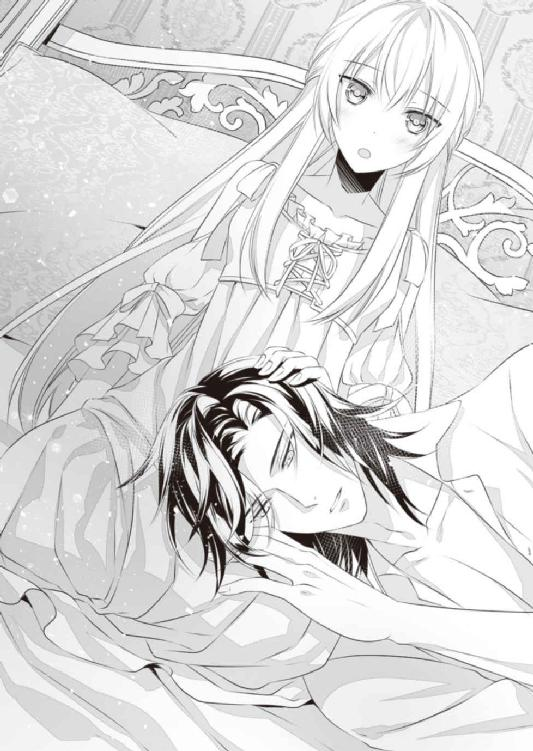
思いがけず膝枕の体勢になって、オリヴィアは驚きと緊張で固まってしまう。だが彼女の戸惑いなどどこ吹く風、アーヴィンはスカート越しの太腿に鼻先を埋めてきた。
「あ、の、お疲れなんですか......？」
おずおず尋ねると、彼は「ああ」とため息交じりに答える。
「施しを求めて民が押し寄せたのもあるが、その話を聞きつけたボスビア軍が粛正に動いたのが厄介でな」
「しゅくせい......？」
「敵に物乞いするなんて何事だ、そういう心根でいる奴らはボスビアの人間じゃない、叩き斬ってやるって言って、施しを受けた民をボスビア軍が攻撃し始めたんだ」
「そんな......！」
味方が味方を攻撃するなんて。
信じられないことに息を止めるオリヴィアだが、アーヴィンは「そうめずらしいことじゃないさ」と実にあっさりしていた。
「情報が早かったからすぐ駆けつけることができたし、結果的にボスビア軍を後退させられたから収穫はあった。おまえにはあまりいい報せじゃないかもしれないがな」
確かに、ボスビア軍がやられたというのは嬉しい報せではない。
だが......食べ物や薬を求める無力な民を兵が粛正という名目で傷つけたことのほうが、よほど衝撃的な事実だった。
（本来なら、同じ国のひと同士は助け合っていくべきものでしょうに......）
それができないほどに、この国はおかしくなっているのだ。
オリヴィアの父である、ボスビア王の私欲によって──
「そんな顔するな。おまえが悪いわけじゃない。おまえだって精霊使いとしての力を奪われて、不自由な生活を強いられているんだ。充分、被害者だよ」
「そんなこと......」
ぷるぷると首を振りながらも、オリヴィアはアーヴィンの思いやりに胸を打たれる。
彼の立場なら、自分の国の民を無残に踏みにじったボスビア国そのものを憎んだって決しておかしくないはずだ。
だが彼は一度も民を悪く言うことはなかった。それどころか同情する始末だ。
懐が広いというか、大局を見る力に長けているというか......なんにせよ、彼が為政者として広い視野を備えていることは間違いない。
気づけばオリヴィアは彼の髪をそっと撫でていた。
アーヴィンが驚いた様子で顔を上げる。
オリヴィアもまたハッと我に返った。──髪を撫でるなんて、なれなれしい仕草にもほどがある。
「ご、ごめんなさい」
急いで手を引っ込めるオリヴィアだが、起き上がったアーヴィンはそんな彼女をぐっと抱き寄せた。そして早急に口づけてくる。
「んっ......」
びっくりしてオリヴィアは身を固くするが、彼との交渉を思い出し、なんとか悲鳴を飲み込む。
目を伏せ従順に唇を差し出す彼女に目を細めてから、アーヴィンはゆっくり手を離した。
「は、ぁ......」
「普段はまだ幼く見えるのに、キスすると途端に色っぽくなるな、おまえは」
からかいなのか賞賛なのかわからない言い方をされるが、こちらを見つめる彼の瞳は思いがけず真剣だ。
オリヴィアはその瞳に魅せられて動けなくなる。宵闇の中で、彼の青い瞳は夜空のように輝くのだと思っていたら、あっという間に夜着を脱がされてしまった。
「あ......」
肉付きの薄い身体が露わになって、オリヴィアは頬を赤らめる。すでに見られているとはいえ恥ずかしいものは恥ずかしい。
「安心しろ。今日は痛いことは少しもないから」
アーヴィンは小さく笑いながら、自身のシャツと脚衣を脱ぎ捨てる。下履き越しに見える彼の股間はすでに膨らんで、オリヴィアはますます赤くなった。
同時に「あっ」とあることに気がつく。
「あの、初めてのとき、わたしの中に挿っていたものって......もしかして、これですか？」
遠慮がちに彼の股間を指さすと、アーヴィンは「ああ」と答えた。
「そうか、挿れるときは見えなかったもんな。なんだかわからないんじゃ怖かっただろう？」
「少し......」
同時に、あのとき彼のそこがどういう形状になっていたかを思い出して、なるほど痛かったわけだと納得した。もしかしたらちょっと怪我をしたのかもしれない。
そう思うと、今日は大丈夫だろうかという不安が芽生えてくる。
オリヴィアの顔が曇ったのを察してだろう。アーヴィンは彼女の唇に再び口づけながら、なだめるようにその銀髪を撫でた。
「言っただろう？ 痛いことはないって。おれもおまえを傷つけたくない」
「ほんとう......？」
「不思議なことだがな。おまえを見ていると自然と護りたい気持ちが湧いてくるんだよ」
とさり、とオリヴィアの背が敷布に倒れる。彼女の細い身体を自分の腕の中にすっぽり閉じ込めて、アーヴィンは優しいキスを続けた。
「んっ......」
唇をふれ合わせながら髪や頬を撫でられ、裸の胸同士を合わせられる。どちらからが少しでも身じろぎすれば、胸の頂が擦れて甘い疼きを立ち上らせた。
ジンと痺れるようなその疼きが気持ちよくて、オリヴィアは気づけば背を反らして、彼の厚い胸板に乳首を擦りつけてしまう。アーヴィンはそれに気づいていたが、揶揄することもなく好きなようにさせていた。
代わりにオリヴィアの浮いた背中に手を入れて、そのくぼみを指先で撫で上げる。
「ああぁ......っ」
突然の刺激にびくんと身体を跳ね上げ、オリヴィアはとっさに男の腕にしがみついた。
がっちりとしてたくましい腕だ。手の平に伝わる体温にもしっとりと汗ばんだ感触にも胸が高鳴り、すがりつきたくなってしまう。
アーヴィンもオリヴィアの細腰をぐっと引き寄せ、勃ち上がりかけた乳首にむしゃぶりついてきた。
「ひあっ、あん！」
突然のことに驚き、オリヴィアはつい甲高い声を出してしまう。みだりがましい声に真っ赤になり慌てて口元を覆うが、その手はアーヴィンにすぐさま引き剥がされた。
「声は好きなだけ上げて構わないぞ。むしろそのほうがおれも楽しめる」
「た、楽しむ、なんて......、あぁん......っ」
「本来、こういうのは楽しむためにある行為だ。色々教えてやるよ」
とうてい楽しめる心境ではなかったが、アーヴィンがとびきり色っぽい微笑みでそんなことを言うから、オリヴィアも妙な気分になってくる。
どのみち彼の舌で乳首を舐め転がされ、もう一方の乳首も指でこりこりとしごかれれば、声を上げるなというほうが無理だった。
「ふぁっ、あ、いや......、それ、むずむずするから......っ」
「気持ちいいんだろう？」
「んっ......」
違うと言えないのがもどかしい。せめてもの抵抗でアーヴィンを睨みつけてみるが、相手はひるむどころか喜ぶばかりだ。
「いいな、その目。もっといじめたくなる」
「い、いじめちゃだめ......、ひっ、や、強く......しなぃ、で......っ」
じゅっ、と音が立つほど強く乳首を吸われ、オリヴィアはびくびくと肩口を震わせた。
「やあぁう......っ」
「可愛いな。すっかり勃って。こうして撫でるだけでも感じるだろ？」
「ンン......！」
彼の言うとおり、手の平で乳頭を軽く撫でられるだけで心地よい痺れが広がった。
アーヴィンは大きな手の平で乳房を柔らかく揉みながら、身体を下へとずらしていく。
その唇を胸から腹へ、オリヴィアがひときわ感じてしまう臍へと滑らせた彼は、小さなくぼみにちろりと舌を押し込めた。
「ひぃん......っ」
オリヴィアの腰がびくんと跳ね上がる。アーヴィンは微笑みながら彼女の弱いところをチロチロと舐め回した。
彼の舌先が臍に押し込められるだけで、その奥がどんどん熱く切なくなっていく。絶頂に達するときと同じ感覚だとわかって、オリヴィアはたまらず腰をよじった。
「や、ぁ......、そんなに、したら......またイっちゃう......っ」
「いいさ。何度でもイくといい。それがこの行為の醍醐味だ」
「ンン......！ ......あっ、そこ」
アーヴィンの手が胸から離れ臍よりさらに下へと滑るのを感じ、オリヴィアはとっさに止めようとしてしまう。
だがこれが交渉の末の行為であることを思い出し、すんでのところで手を引っ込めた。
「怖いか？ やっぱり痛いんじゃないかと思って。それとも今以上に乱れるのがいやか？」
オリヴィアの動きを察して、アーヴィンが上目遣いに問いかけてくる。オリヴィアはもごもごと答えた。
「......ど、どっちも」
するとアーヴィンはふっと微笑む。
「痛いことはないし、乱れるのは大いに結構だ。ほら、足を開け。大丈夫だから」
足を開くなんて恥ずかしいことの極みだと思うが、優しく促されると、ぐずぐずして相手を待たせてはいけないという思いも湧いてくる。
そもそも娼婦になるのを承諾したのはオリヴィア自身なのだ。恥ずかしさを義務感でねじ伏せ、彼女はそろそろと足を開いた。
「いい子だ。楽にしていろ」
「う......、あっ、あぁあ......っ」
再び舌先で臍を刺激されながら、大きな手で内腿を撫でられる。ただ撫でられるだけなのに背中がぞくぞくして、外気にさらされた蜜口がひくりとうごめくのがはっきりわかった。
アーヴィンの唇はやがて下へと移動し、包皮からわずかに顔をのぞかせる芯へとふれる。
「ひあっ......！」
昨日もそうだったが、やはりそこが一番感じるところだ。思わず腰を跳ね上げたオリヴィアは、皺が寄るほど敷布をぎゅっと握りしめる。
「あ、あ、だめっ......あぁああん......！」
唾液を纏った彼の舌は、そこを器用に舐め回してくる。時折息を吹きかけられたり、唇で挟んでしごかれたり......多様な刺激を与えられ、オリヴィアは為す術もなくガクガクと震えるばかりだ。
「あ、ひっ......、やめっ、あ、あぁっ......！」
この前よりずっと早く上りつめそうになって、恥ずかしさと恐怖にオリヴィアはいやいやと首を振る。
力の入らない身体を必死にくねらせ、愛撫から逃れるためにうつ伏せになった。
だが逃げられるはずがなく、アーヴィンに背中から覆い被さられて小さく声を上げてしまう。
太い腕が腰を引き寄せてきたために、オリヴィアの背から臀部が彼の胸から腰にピタリと合わさる形になった。
「あぁ、熱い......っ」
素肌がふれ合った瞬間、伝わってきた彼の体温の高さにびっくりする。お互い汗ばんでいるせいで、肌がしっとりと吸いつき合うのにもくらくらした。
「そのまま腰を上げてろ。よくしてやるよ」
「い、いや......、あぁああ......！」
彼の舌から逃れたはいいが、今度はその指先が剥き出しの芽をいじってくる。
揃えた指先を肉芽に宛てられ軽く擦るように動かされると、強烈な快感が身体を駆け抜けた。
気持ちよさのあまり猫のように身体をしならせながら、オリヴィアはぎゅっと敷布を握りしめて快感に耐える。
だが秘玉をいじるのと同時に乳房を揉まれ、うなじにキスされ耳孔に舌を入れられると、耐える力もじりじり抜けていって肘がかくりと挫けた。
「あっ、あぁん......、ひあっ......」
敷布に頬を押しつけだらしなく唇を開けながら、オリヴィアは与えられる快感にただただ喘ぐ。もうどこもかしこも熱くてたまらなかった。
「いい感じだな。ここも、すっかり濡れてきた」
「あ、やぁ、なに......っ？」
太腿をかすかに開かされ、そのあいだになにかがねじ込まれる。
じっとりと湿って熱いそれは、芯を持った肉槍だ。アーヴィンの男根だと直感して、オリヴィアは耳まで赤くなった。
「あ、そ、そんな......っ」
「大丈夫だ。こうやって、擦るだけ......」
「あ、あっ......、やぁああ......っ」
驚くことに、アーヴィンは自身の肉棒をオリヴィアの秘所のくぼみにピタリと沿わせて、彼女の足を閉じさせる。
そうすると猛った熱棒を太腿で挟む形になった。あまりのことにオリヴィアはめまいを覚える。
「は、恥ずかしい、こんなの......っ」
「今に、そんなことも言ってられないほど気持ちよくなるぞ？」
「うそ......、あぁああん......！」
高々と上がったオリヴィアの腰をしっかり抱え直し、アーヴィンはゆっくりと肉棒を前後させてくる。秘所と太腿のあいだを行ったり来たりする肉竿の熱さに、オリヴィアは息を呑んだ。
「あ、あ、あ......、だめ、んっ......！」
擦りつけられるたび、溢れる蜜が肉竿に絡んでぬちゅぬちゅと卑猥な水音を立てる。
溢れた愛液が内腿を伝っていくのを感じて、オリヴィアは恥ずかしさのあまり涙ぐんだ。
今すぐやめて欲しいと思う一方で、耳元をかすめるアーヴィンの呼吸が徐々に速く浅くなっていくのを聞くと、ドキドキしてたまらなくなる。
自分が感じるのと同じく、彼もオリヴィアの身体で快感を得ているのだろうか。そう思うと、まぎれもない喜びに体中が沸き立つようだ。
（どうして、わたし......彼が感じていることを、嬉しい、だなんて......）
自分の心がわからず、オリヴィアはふと不安を感じて眉をひそめる。
だがアーヴィンの動きが大きく大胆になっていくと、よけいなことを考える余裕などなくなっていた。
「はぁ、ああっ、も......そんなに強く......しないでぇぇ......！」
熱く滾った肉棒が前後するたびくびれた部分が感じやすい芽を擦っていき、ジンジンした疼きを立ち上らせる。
蜜が止めどなく溢れてアーヴィンの動きを助けるためか、亀頭が蜜口に挿り込みそうになる瞬間が何度かあって、そのたびにオリヴィアはぞくぞくしてしまった。
こんな体勢の中、あんな大きなものを挿れられたらと思うと、恐怖は拭えないのに......
（でも、なんだか......奥が......）
蜜壺の奥......下腹の奥のほうがずっと熱く疼いて、なにかを求めて切なくなっている。
男根が秘所を擦るたびに疼きは大きくなり、オリヴィアはガクガクと身体を震わせた。
唇から漏れる喘ぎも、自然と切羽詰まったものになってくる。
「あ、あぁ、も......っ、もう、だめえぇぇ......！」
溢れそうな快楽に呑まれ、敷布を爪でひっかきながらオリヴィアはとうとう上りつめる。
快感が秘所から頭まで突き抜けて、あまりの気持ちよさに意識がふっと遠のいた。
全身から力が抜けてだらりとなった瞬間──オリヴィアの足をわずかに開かせたアーヴィンは、猛った一物を彼女の蜜口へ沈めてくる。
「──ぅああぁあ......っ！」
ほとんど気を失いかけていたオリヴィアは、突然の衝撃にこぼれんばかりに目を見開く。
こんな体勢で、あんな大きいものを呑み込めるはずなどないと思ったのに──
オリヴィアの意に反し、貪欲な蜜壺はアーヴィンの雄を根元まで受け入れ収斂を繰り返している。ギリギリまで広がった蜜口はかすかに痛むが、蜜壺の最奥は望んでいた刺激にたちまち熱くなっていった。
「は、あぁ......っ」
「ああ、中もいい具合に熟れているな」
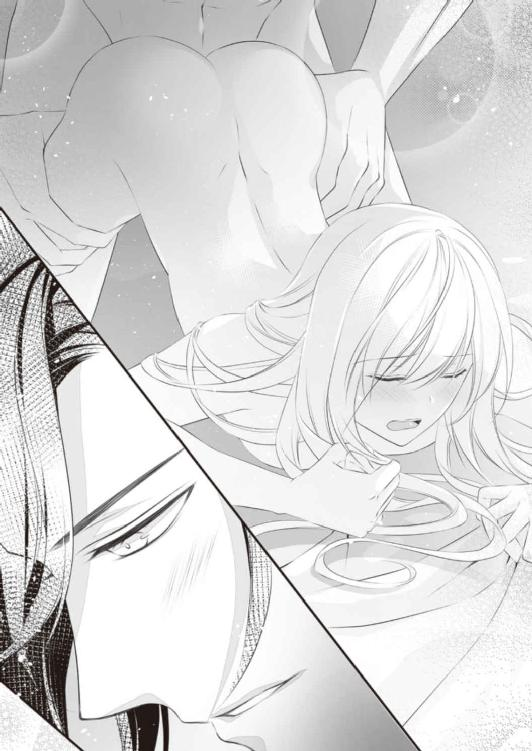
崩れ落ちそうなオリヴィアの腰を抱え直し、アーヴィンがため息交じりに呟く。
少し身じろぎしただけでも、彼を受け入れる角度が変わって震えてしまう。彼がぐっと腰を引いたのを感じて、オリヴィアは息を呑んだ。
「ま、待って。今はだめ──、ぁ、あああんっ......！」
言い終えるより早く、ギリギリまで引き抜いた肉棒をずんっと突き入れられる。下腹に深く響いた衝撃に、オリヴィアは甲高い声を上げた。
最初は様子を見るようだったアーヴィンの動きも、徐々に余裕のないものになってくる。
「あぁ、あっ、そんな......激し......っ」
「許せ。おまえの中がよすぎる。きつくて......すぐに搾り取られそうだ」
すぐ耳元でかすれた声で囁かれて、オリヴィアはいっそう昂ぶってしまう。男根を締めつける膣壁がきゅうっときつくなるのが自分でもわかるほどだ。
蜜まみれの膣壁を激しく擦り立てられるだけでも喘ぎ声が止まらないというのに。アーヴィンはもっと感じさせたいとばかりにオリヴィアの乳房を揉んでくる。
敏感な乳首がきゅっとつままれ、オリヴィアは「あぁっ！」と白い喉を反らせた。
「ひあっ、も、もぅ......っ、アーヴィンさまぁあ......！」
あまりの快感におかしくなりそうで、オリヴィアは助けを求めるように彼の名を呼んだ。
アーヴィンがかすかに息を呑み、同時に激しく腰を押しつけてくる。
「ひゃぁああうっ......！」
彼の先端がぐっと中を押し上げてきて、オリヴィアは少しの苦しさと多大な気持ちよさに身体を強張らせる。
同時にアーヴィンが低くうめいて、オリヴィアの細い身体を掻き抱いた。少し遅れて劣情の飛沫が噴き上がる。
「ふあ、あ......っ！」
びくびくと震える男根と注がれる精の熱さに、オリヴィアもたまらず絶頂に飛ぶ。蜜壺が淫らにうねり、最後の一滴まで搾り取ろうとうごめいた。
「......っ」
あまりにきつい締めつけに、アーヴィンが耐えきれない様子で息を吐く。大量の精を注ぎ込んだ彼は少ししてゆっくり腕の力を緩めた。
「ん、ぁ......っ」
身体を支える太い腕が離れると、オリヴィアの身体はたちまちくたりと敷布の上に倒れてしまう。それと同時に肉棒がずるりと抜けて、あとを追うように白濁がこぼれた。
（......すごい。まだ、力が入らない......）
手足が痺れたように動かなくて、快感の余韻に頭の中がぼうっとする。
おかげでオリヴィアははぁはぁと荒い呼吸を繰り返すばかりだ。なのにアーヴィンはすっきりした面持ちで、オリヴィアの銀の髪を優しく梳いてくる。
「......な？ 痛くはなかっただろう？」
「......ん......」
「ゆっくり休め」
オリヴィアの身体を仰向けにして、アーヴィンは優しく覆い被さってきた。目を伏せるとほどなく唇に温かな口づけが降ってくる。
行為自体は恥ずかしくてとても楽しめる心境ではなかったが、事後にこうして優しくされると、大切にされている気がしてとても心が温かくなった。
（あったかい......）
汗ばんだ肌を合わせて包むように抱きしめられるのも、髪を掻き上げられて額にキスされるのも、嬉しくて気持ちよくて──幸せだと思える。
（胸がぽかぽかして、でも少しドキドキして......不思議な気持ち）
ふわふわとした気持ちを抱えたまま、オリヴィアはアーヴィンのぬくもりに誘われ眠りの中へ落ちていった。
しばらくはそんな日々が続いた。
すなわち、昼はリリーとリアネ姉妹と楽しく過ごし、夜はアーヴィンに激しく抱かれるという日々が──
昼のあいだは版図を広めるべく進軍したり、あちこちで起きる小競り合いをなだめているというアーヴィンは、夜になるとほぼ毎日オリヴィアのもとを訪れた。その日あったことをつらつらと話し、ときに寝酒などを交えてから身体を重ねるのが常となっている。
敵国の王女なのに、アーヴィンはオリヴィアのことをとても大切に扱ってくれる......と思う。
行為があまりに気持ちよすぎてつらくなってきて、もう許してと懇願しても聞き入れてもらえないことが多いけれど。少なくとも彼は最初のとき以外で痛いことはしてこなかった。
リリーにこっそり聞いてみたところ、男の中には乱暴をしたり、女を痛めつけることで性的興奮を覚える不埒者もいるということだった。
娼婦の中にはもののように扱われ、命を落とす者も少なからず存在しているらしい。
娼婦の実態を正しく理解していなかったオリヴィアは、安易に娼婦となることを受け入れた自分を恥じるとともに、悲しい運命をたどる娼婦が大勢いる事実を知って愕然としたものだ。
だからというわけでもないが、気持ちいい行為に日々染まっていく自分が時々ひどく恐ろしく、うしろめたくなる。
民への施しの代償として身体を明け渡しているものの、敵にいいようにされていることに変わりはないのに。王女として本当にそれでいいのだろうかと、ふとしたときに不安と心配が胸をよぎるのだ。
だが現状、オリヴィアにできることはそう多くない。気持ちが沈みそうになったときは、溌剌としたリリーとのお喋りや無邪気なリアネとのふれあいで気持ちを和ませる毎日だった。
「──そう、そこをくぐらせて、繰り返していくの」
「こ、こう、ですか？ ──無理ですっ、指がつります！」
小鳥がピチチと鳴く昼下がり。オリヴィアはリリー相手にレース編みを教えていた。
手持ち無沙汰だろうからと数日前に本や刺繍道具が運び込まれ、その中にレース編みの一式も入っていたのだ。
貴婦人の教養である刺繍やレース編みと無縁だったリリーは、オリヴィアがひょいひょいとレースを縫っていくのを穴が空くほど見つめていた。
せっかくだからやってみる？ と声をかけ、リアネがお昼寝に入ったのを見届けてから始めたわけだが、リリーは早々に音を上げるようだ。
「服を繕うのとはわけが違いますね......。ああ、肩が凝った。あたしはお茶を淹れますから、オリヴィア様は続けてくださいませ」
ここ数日でリリーの態度もすっかり打ち解けたものとなった。侍女としてはいただけないのかもしれないが、年の近い同性の友人の存在にぼんやりと憧れを抱いていたオリヴィアには、今くらいのほうが好ましい。
せっせとレースを編みながら、オリヴィアはリリーが淹れてくれたお茶を礼とともに受け取った。
「そういえば、このところアーヴィン様の訪れがありませんね」
不意に思い出したようにリリーが尋ねてくる。
幼いリアネは夜になるとアーヴィンが訪れてくることに不思議そうにしていたが、十七歳のリリーはすぐにその意味を察したらしい。
ただ彼女はオリヴィアのことを娼婦ではなく、彼の秘密の恋人かなにかと勘違いしている様子だ。
「きっとお忙しいのよ。このところ何日か続けてお城を空ける日が多いみたいだし」
わたしは彼の恋人ではないから訪れがないことを不満に思うことはないし、気にしてもいないわ。という気持ちを込めて答えてみたが、リリーはやはり不服げだった。
「そうだとしても、報せの一つでも寄越せばいいのにと思いません？ ただでさえオリヴィア様はこんなところに閉じ込められて外出もできないのに」
「でもあなたとリアネがいてくれるから毎日楽しいわ。わたしはそれで充分よ」
事実、離れに一人暮らしていたあの頃より今のほうが断然楽しい。囚われの身であるということ以外は快適な毎日だ。
「それに前にこちらにいらしたときに、そろそろ拠点を移そうかと呟いていらしたから、きっと遠くのほうまで進軍しているのよ」
精霊使いという切り札も失ってボスビア軍はもはや壊滅状態だと聞いている。
徴兵された兵はもともと痩せ細って身体が弱く、度重なる戦に疲れ果てて戦力にならないそうだ。
ボスビア王は躍起になって傭兵を大量に雇ったそうだが、王への忠誠心ではなく金で動く彼らはアーヴィンが倍の値を出すと宣言すると、あっさりオルタレルの軍勢に下ったという。
（もしかしたら王都に近いところまで進軍できたのかもしれないわね）
オリヴィアが囚われてからそろそろ三週間というところだ。破竹の勢いで進軍するオルタレル軍なら、すでに王都の目と鼻の先まで進んでいてもおかしくない。
そんなことを考えたときだ。
扉の向こうでカツカツという足音が響いてきた。時折必要なものを運んでくる女性たちとは違う、軍靴を穿いた男の力強い足音だった。
見回りの兵かなにかと思ったが、扉をバタンと開けて入ってきたのはアーヴィンだった。
「おや、噂をすればですね」
リリーが思わせぶりにオリヴィアに目配せしてくる。オリヴィアが苦笑すると、アーヴィンは「なんの話だ？」と首を傾げた。
「アーヴィン様の訪れがないことをお話ししていたんです。オリヴィア様がこんなに寂しがっているのに、つれない方だなぁって」
「リ、リリー、なにを言い出すの」
確かにアーヴィンの話をしていたが、そんな愚痴めいた言葉は言っていない。
慌てふためくオリヴィアに、アーヴィンは声を立てて笑った。
「そりゃあ悪かったな。このところちょっと遠出していたんだ。拠点を移す関係でな」
「あ......、ではやはり王都に近い場所に移動するのですね？」
いったいオルタレル軍はどこまで制圧下に収めたのか。少なくても国の端であるここから遠いところであることは間違いない。アーヴィンは重々しく頷いた。
「ほかの者には荷造りを命じた。ここにも手伝いの女たちがそのうちくる。今のうち支度を調えておけ。──とはいえ当座の着替えがあれば十分だが」
そのとき、オリヴィアの寝台からごそごそと衣擦れの音が響く。見ればリアネが昼寝から起きたところだった。
「んー......、あ、アーヴィンさま？」
「リアネ、起こしたか」
「アーヴィンさまっ！」
リアネはぱっと寝台から飛び降りると、アーヴィン目指して一直線に走る。アーヴィンは駆け寄ってきたリアネを軽々と抱き上げた。
オリヴィアは目を丸くしてしまう。アーヴィンが心から嬉しそうな顔でリアネに頬ずりするのにびっくりしたのだ。
「前見たときより頬がふっくらしたな。いっぱい食べているか？」
「たべてる！ ごはん、すごくおいしいの！」
「そりゃよかった。もっと大きくなるために飯はいっぱい食えよ」
「うん！」
リアネは満面の笑みで頷き、アーヴィンに降ろされてもその足下にぎゅっと抱きついていた。
「出発は明日の朝だ。おまえたちには馬車を用意してやる。今夜はゆっくり休めよ」
リアネの頭をよしよしと撫でたアーヴィンは、言うべきことを言い終えるとすぐに部屋を出て行った。
＊＊＊
翌朝は日の出前から慌ただしかった。
馬車の準備ができたら呼びに行くと言われていたものの、自分だけ寝ているのも悪い気がして、オリヴィアも自然と早起きしてしまう。
「朝食は馬車の中で召し上がってくださいとのことです。ちょっと早いですけど下へ行っちゃいましょうか」
オリヴィアがそわそわしているのを察して、ドレスの着付けを終えたリリーが提案する。
オリヴィアはすぐに頷き、彼女について塔の部屋を出た。
部屋の外に出るのはアーヴィンに連れ出されたとき以来だ。長い階段やいくつもの廊下を渡って外に出ると、風が頬を撫でていくのをとても気持ちよく感じた。季節もいつの間にか夏の盛りに移っていて日差しがかなりまぶしい。
ほどなく馬車の用意が調って、立派な身なりの騎士がオリヴィアたちを案内した。
「あ......あの、施しのほうはどうなるのでしょうか？」
馬車乗り場にやってきたとき正面門の様子がチラリと見えて、オリヴィアは騎士に質問する。
門の外ではこれまでと同様、飢えた民への配給が行われていた。だが全員が別の場所へ移動するなら、彼らへの施しも途切れてしまうのだろうか？
「ご安心ください。この城は今後も我が国と軍を繋ぐ拠点になります。兵の半数は残りますし、物資とともに本国から要人もやってきますので、彼らが引き続き民への施しを行います」
「そうですか......よかった......」
ほっと胸を撫で下ろすと、騎士はにこりと微笑んだ。
「アーヴィン殿下から聞いておりましたが、姫君は本当に心優しい方のようだ」
「ひ、姫君なんて、そんな」
呼び慣れない呼称にぶんぶん首を振ると、騎士は今度は声を上げて笑った。
「ああ、いきなり笑うなど失礼でしたね。わたしはアーヴィン殿下の副官で、今回の旅の隊長を務めるロベスです。なにかありましたらいつでも声をおかけください」
「ロベスさま......。こちらこそよろしくお願いいたします」
真っ黒な口ひげと顎髭だけ見るととてもいかめしそうな騎士に見えるが、笑った顔は少年のように人なつっこく優しい感じがした。オリヴィアはもちろんアーヴィンよりもずっと年上だろうが、頑健な身体からは若々しいオーラが放たれている。仲良くなりたいとオリヴィアはすぐに思った。
「馬車には侍女二人とお乗りください。本国から手配した馬車ですので揺れは少ないかと思いますが、気分が悪くなったらすぐにおっしゃってくださいね」
荷物を載せる大きな幌馬車から無蓋馬車まで様々な馬車が停まっていたが、オリヴィアが乗るように言われたのは箱馬車だ。外装は黒塗りで地味だったが、中は華やかな装飾が施されており、朝食を詰めたバスケットと水筒も用意されていた。
リリーとリアネが一緒に乗っても足を伸ばせるほどで、座席のクッションもふかふかと柔らかい。いざ動き出しても揺れは少なく、乗り物酔いを起こすこともなかった。
（王都からここへくるまで乗ってきた馬車では、気持ち悪くなって何度も吐いていたのに）
敵国の用意した馬車のほうが乗り心地がいいというのは、なんとも切ないことだ。
「みてみてー！ かわ、かわがあるよ！」
上等な馬車に乗り込んだ興奮が続いているのか、リアネは窓枠にしがみついて離れない。それどころか座席に立ってぴょんぴょん跳び跳ねる始末だ。
最初こそ座りなさいと注意していたリリーだったが、いくら言っても駄目だと悟ったのか、黙ってリアネの足から靴を抜き取った。
馬車はいくつかの街を抜け平坦な道を走り続ける。やがてリアネも飽きて、早起きの影響もあってか、いつもより早く昼寝を始めた。
「リリーは本当にいいお姉さんね。あなたみたいな姉がいて、リアネがうらやましいわ」
リリーの膝に頭をこてんと乗せて寝入ったリアネを見て、オリヴィアは心からそう呟く。
母が亡くなって一人になったとき、自分にも兄弟がいればここまで寂しくなかったかもしれないとふと思ったのだ。
しかしリリーが返してきたのは意外な言葉だった。
「実はあたしたち、本当の姉妹じゃないんです。お互いの家が近所で、いわゆるお隣さんの関係だったんですよね」
「え......？」
「あたしの面倒見がいいのは、下に本当の弟妹がたくさんいたから。でもみんな寒さや飢えで死にました。両親も。リアネの親兄弟もそうです。去年の冬の一段と冷え込んだ朝に、リアネの両親は冷たくなっていたんですよ」
オリヴィアは背筋がすっと冷えるほどの恐怖を覚える。目が覚めたら、自分の隣で寝ていた両親が二人とも冷たくなっていたなんて──
「このあたりじゃめずらしいことじゃありません。ここ数年はいくら作物を作っても、お役人が全部持って行ってしまって、ろくに食べるものもありませんでしたし。自分たちの食べるぶんにと取っておいても、抜き打ちの検査が入れば全部没収されます。ひどいときは家に火をつけて、一家全員引っ立てていくこともありました。いわゆる見せしめですね。食べ物を隠すとこうなるぞっていう」
「......そんな......」
リリーが話す内容はあまりにむごいものだ。しかしオリヴィアはそれ以上に、リリーが怒りも悲しみも見せず、むしろうっすら微笑みながら淡々と語ることに衝撃を受ける。
彼女の言葉通り、きっとすべてが『よくあること』だったからだろう。とうてい『よくあること』にしてはいけないことなのに......。
「あたしも食べさせるぶんがないからって村長の家から追い出されて家に戻ったんですが、間もなく家族が死んで、リアネの家族も同じ頃に死んじゃって......。ひとりぼっちになった同士だから放っておけなくて。自分一人なら生きていく意味ないなぁって思ったんですけど、この子のことを考えたらとても死ねないから、踏ん張ったんです」
自分一人なら生きていく意味がない......それは自分の人生を放棄する言葉だが、オリヴィアにはその気持ちが痛いほどわかった。
オリヴィアだって母が亡くなったときに同じことを思ったのだ。たった一人で生きていくことになんの意味があるのだろうと。母と一緒に死にたかったとさえ思った。ただ一人残される孤独というのはそれほどに大きいものなのだ。
だが衣食住が保証されていたオリヴィアと違い、リリーとリアネはそのすべてを持っていなかった。そんな中で家族まで失って......いったいどれほどの絶望を感じたのだろう。
そんな中で、リアネがいたからリリーは自死を思い留まれた。リリーがいたからリアネは死の危機から逃れることができたのだ。
だがその道のりは苦難に満ちたものだったに違いない。リリーは微笑むばかりだが、その瞳は陰りに満ちていた。
「あたしたちは運がよかったんです。いよいよ死にかけたときオルタレル軍に出くわして。あたし、轢き殺されるのを覚悟で、リアネを抱いて騎士たちの前に飛び出したんですよ。妹を助けてくださいって」
碌な食べ物もなく、脱水に陥ったリアネは生死の境をさまよっていたという。リリー自身もリアネを抱きかかえる力すら出ない状態で、気力を振り絞って飛び出したのだ。
「まぁ飛び出すだけで気を失っちゃったんですけどね。気がついたら寝かされてて。リアネは手当を受けたと聞かされて」
その後、一行の代表であるアーヴィンから「出てくるなり倒れたから、轢いちまったと思ってものすごくいやな気分になったんだぞ。罰としてさっさと元気になっておれに仕えろ」と言われたという。
なんともアーヴィンらしい台詞だ。傲慢だけど慈悲深い。
その後は食べ物や衣服を与えられ医師の治療も受けて、二人は働ける程度にまで回復した。オリヴィアに仕え始めた頃はまだ栄養失調状態だったというが、今は二人ともそこまで痩せ細った感じはない。もちろん年齢に対して背が小さく、痩身であることは違いなかったが。
「そんな経緯だから、リアネはアーヴィン様が大好きなんです。あたしもとても感謝しています。アーヴィン様はあたしたちだけじゃなく施しを求めてきたひとにも配給してくれました。本当にありがたいことです」
そう語るリリーの瞳には光が戻ってきている。オリヴィアはおずおずと問いかけた。
「その、この国の民は、みんなあなたたちのように飢えや寒さに苦しんでいるの？」
「そりゃそうですよ。さっき言ったけど、お役人はこっちの事情なんて考えずに搾り取っていくし。若い男は鉱山に連れて行かれて帰ってこないから、畑や家畜は女子供で見ていくしかありません。でも食べるものもない中じゃとても力は出ないし。ようやく実った作物も全部取られていくんじゃ働こうって気すらなくなるし」
そういう状況だけに、危険を承知で国境を越えようとする者も多かったらしい。だが国境には駐在の兵がいて、民が逃げ出さないよう常に監視し、越境しようとすれば容赦なく攻撃してきたそうだ。
「だから、そこを破ってやってきたアーヴィン様は救世主ですよ。今すごい勢いで進軍しているのも、アーヴィン様に助けて欲しいって願うひとが多いからじゃないですか？ 学がないから難しいことはわからないですけど」
......リリーの言う通りだ。自分たちから搾取するばかりで、助けてくれるどころかより深い苦しみに突き落とす自国の王など、誰が尊敬するというのだろう。
食べ物も薬も分け与えてくれる隣国の王子のほうが、よほど支持すべき人間であることは小さな子供でもわかる。
最初は陰りがあったリリーの表情も、アーヴィンのことを話し出すと生き生きと輝いた。
明るいその表情を見るだけで、彼女がアーヴィンに心酔しているのが伝わってくる。
──ちょうどそのとき、人里を通るということで馬車の速度が緩やかになった。
オリヴィアは窓にかかっていたレースのカーテンをそっと開ける。いつの間にかこぢんまりとした農村が見えてきていた。
どの家も全体的に寂れ、ひとの姿も少なく不気味なほど静かだ。時折行列を見にきた村人の姿が目に入るが、いずれも最初に会ったときのリリーたちのように痩せて顔色が悪い。
それでも彼らが笑顔でいるのは、先行していた騎士たちが食べ物が入った袋を渡していたからだろう。
その次の村で昼食休憩となり、オリヴィアたちのもとには新たなバスケットが届けられる。
中に入っていたのは新鮮な野菜と肉をふんだんに挟んだパンだった。
オリヴィアにとっては当たり前に存在する食事も、この国の民のとってはそうではない。
その後もいくつかの村を通り、最終的に少し大きめの街に到着した。今日はここで夜を明かすとのことで宿へ向かう。
これまでの村に比べればまだ活気はあるが、配給を受け取る人々はやはり痩せ細っていた。
部屋に荷物を運び入れるので待っていてくれと言われ、オリヴィアは宿の前の木箱に腰かけ、街の人々を見るともなく見つめる。
すると近くの物陰から、こちらをチラチラうかがう子供たちがいることに気がついた。
リリーがそれとなく前に立ち「見世物じゃないよ」と子供たちを追い払おうとしたが、オリヴィアは構わず子供たちを手招く。
「こんにちは。食べ物を受け取りにきたの？」
子供たちがそれぞれパンやチーズの入った袋を持っていることに気づき声をかけると、彼らは一斉に頷いた。
「お姉ちゃん、とってもきれい。お姫様みたいに見える」
子供の一人が唐突にそんなことを言い出し、他の子供たちもうんうんと賛同する。
オリヴィアは微笑もうとしたが、笑顔はすぐにくしゃくしゃに崩れた。
──お姫様みたいではなく、自分は正真正銘この国の王女で、本物のお姫様なのだ。
オリヴィアは今、そのことがひどく恥ずかしくて苦しくてたまらない。
王女なのになんの力も持たず、敵国の人間に施しを頼むことしかできない自分......
護るべき民が飢えと寒さでこんなに苦しみ、一日一日を懸命にやり過ごしてきたというのに、自分は離れでのうのうと生きていた。
いつか死ぬのだろうと思っていたが、そこに痛みや苦しみは存在していなかった。それだけ恵まれた環境に身を置いていたという証拠だろう。
なのにそれを知ることもなく、漠然とした死を見据えてただただ虚しく生きていたのだ。
──なんておこがましい。
親しいひとがいなくても、王女として冷遇されていても、食べるものにも着るものにも困らず暮らしていた点では、民を苦しめる父となんら変わりないではないか......
そう思った途端、涙がぼろりとこぼれ落ちた。
悲しみではなく、情けなさと恥ずかしさが胸の裡に荒れ狂う。
こんないたいけな子供たちが目の前に迫る死の恐怖と戦っていた中、わたしは......
「お姉ちゃん、どうしたの？ どこか痛いの？」
「泣かないで......っ」
突然顔を覆って泣き出したオリヴィアに、子供たちがおろおろと困った顔になる。
リリーも驚いた様子で子供たちをすぐに追い払った。ちょうど部屋の支度ができたと知らせが入り、宿に入る。
「ごめんなさい、リリー、なんでもないの......。少し疲れたから、もう休んでいい？」
寝台に腰かけたオリヴィアはしゃくり上げながらなんとか伝える。リリーもリアネも心配で泣きそうな顔になっていたが、オリヴィアが再度頼むと黙って部屋を出て行った。
オリヴィアは羞恥に身を震わせながら、服も着替えずに毛布を頭から被る。日が暮れた頃リリーが食事を持ってきたが、寝ているフリをしてやり過ごした。
そしてそのうち、本当に眠ってしまった。
......それからどれくらい時間が経ったのか。すっかり日が落ちていたが、窓から入る月明かりがまぶしくて暗闇ではない中。
優しく髪を撫でられて、オリヴィアはゆるゆると泣き腫らした目を開けた。
「......ああ、起こしたか」
「アーヴィン様......？」
聞き覚えのある深い声が聞こえてオリヴィアは顔を上げる。見ればアーヴィンが寝台に腰かけていた。
「どうしてここに......。拠点になる場所で先に待っているはずでは？」
「そっちの準備が整って暇してたから、お姫様の様子はどうかと思って見にきたんだよ」
いつも通りの口調で言われて、オリヴィアはほっと息をつく。
同時に胸が苦しくなって、彼女は深く頭を下げた。
「......ごめんなさい、アーヴィン様」
「ん？ いきなりどうした」
「辺境のお城でこの国の現状を聞いたとき、敵の言うことだと言ってしまったから......」
結果的にこの国の民が飢えているのは真実だった。敵の言うことは信じられないと言ってしまったことが恥ずかしく、今となってはとても気まずい。
一方のアーヴィンは「なんだ、そんなことか」と言いたげに肩をすくめた。
「そりゃあ仕方ないだろう。教えられていたならまだしも、おまえはなにも知らなかったわけだし。それに知る術もなかっただろう？ ずっと王城の奥の離れに軟禁されていたんだから」
オリヴィアはこくんと頷く。いつの間にかアーヴィンはオリヴィアの生い立ちをすっかり調べ上げたらしいが、そんなことはどうでもいいことだ。
「わたし情けなくて......。自分がこれまで現状を知らなかったことに......いいえ、知ろうともしなかったことに、腹が立って仕方がないんです。もっと外に出たいって主張すればよかった。そうすればこの国のことをもっと早くに知ることができたかもしれないのに」
オリヴィアが一番悔しく思っているのはそこだ。恥ずかしくて口惜しくて、敷布を握る手にぎゅっと力が入る。
一方のアーヴィンは冷静に返した。
「だがもしそうしていたら、おまえはボスビア王に殺されていた可能性もある。あの王がおまえを疎んじながらも生かしておいたのは、王女としての使い道を探っていたからだろう。年頃になったら外国に嫁がせるとか、今回の戦のように精霊使いとして働かせるとか」
きっとその通りなのだろう。曲がりなりにも王女に生まれたのだから、なんらかの利用価値があると思われていた可能性が高い。
だが、そう考えるともっと悔しかった。
「あなたの言う通り、わたしの父は国王として敬われる存在ではないと思います。そんな父の口車に乗せられて、この国を救うためだと思い込んで戦場に出てきたなんて──」
母の墓を建て直すと言った父の言葉を、あのときは疑いもなく信じたけれど......
「......きっと父はわたしを戦場に出したかっただけで、本当は母のお墓のことも民のことも、ちっとも考えていなかったと思います」
「母の墓......？」
「わたしの母は王族の墓地ではなく、離れの庭に埋葬されているんです。碌な葬儀もなかったから、どうにかしたいとずっと思っていて......」
「そこをつけ込まれたってことか」
身も蓋もない言い方をされるが、実際にそうとしか言いようもなく、オリヴィアは唇を噛みしめた。
「悔しいの。なにも知らなかったから父にそうやって丸め込まれて、真実を言うあなたを信じることができなかった。この国の王女なのに、あなたを頼らなければ民を助けることもできない......。自分の無力が悔しくて情けなくて、腹が立って。本当に本当にいやなんです......！」
言っているうちに感情が高ぶって、また涙がぼろぼろ出てきた。
馬車から見えた痩せ細った人々やこちらを見つめていた子供たちの姿が思い浮かんで、彼らへの申し訳なささに胸がキリキリ締めつけられる。
顔をくしゃくしゃにして泣き出したオリヴィアを見つめ、アーヴィンは小さく苦笑した。
「だからか......。リリーが自分がつまらない身の上話をしたから、おまえが泣き出したのかもって言って心配していたのは」
「リリーの、せいじゃ、うっく、ないです......っ、で、でも、リリーもリアネも、すごく苦しんできたから......うっ、やっぱり、ひっぐ、ごめんなさい......っ」
「ああ、わかったわかった。そう泣くなって」
オリヴィアがあまりに泣くせいか、アーヴィンは彼女を抱き寄せよしよしと頭を撫でた。
「だがなオリヴィア、おまえがそうやって真実に気づいたことはとてもいいことだぞ？」
「ひっく......いいこと？」
そうだ、とアーヴィンは自信満々の笑みで頷く。
「何事も気づくことが始まりだからな。おまえはこの国の現状に気づくことができた。それに対して腹立たしいとも思っている。そうだな？」
「はい......」
「じゃあ、おまえはこれからどうしたい？」
「え？」
唐突な問いかけに、オリヴィアは涙で濡れた瞳をまん丸に見開いた。
「ただ民がかわいそうだって泣くだけか？ 知らなかった自分が情けないって、怒るだけか？」
「わたし......」
オリヴィアは大きく目を見開いたまま、こくりと唾を飲み込んだ。
「わたし......民を、国を、このままにしておきたくないです。飢えや寒さで苦しむひとたちを、助けたいです......！」
リリーやリアネのように、死に瀕する子供たちを助けたい。死の恐怖と無縁の生活を送らせてあげたい。
アーヴィンは静かに頷いた。
「それなら、そのために自分がなにをできるかを考えるんだ。幸いおまえは王女で、生まれながらに権力を持つ身だ。ほかの人間にできないこともできる立場だからな」
民を助けるために、自分が王女としてできること......
これまでなにひとつできなかったのに、これからはできるようになるのだろうか？
わからないけれど、アーヴィンが「おまえならやれるさ」と言ってくれるなら、なにかしらできることはある気がする。
そう思った瞬間、それまで嵐が吹きすさぶようだった胸の裡に希望の光が差してきた。
オリヴィアはそっと窓の外を見やる。すっかり夜も更けた時刻だが、高い場所にある月は煌々と夜空を照らしていた。
──あの月のようになりたい。
暗闇の中でも光って、見る者に安らぎを与えられる存在に。
そう強く思ったオリヴィアの紫の瞳に、もう涙はなかった。
翌朝起きたときにはアーヴィンの姿はなかった。日が昇る前にまた別の場所へと旅立ったらしい。
使いをやればいいのに本当に気になることは自分の目で見なければ納得のいかない性分なのだと、彼の補佐であるロベスは嘆き交じりに言っていた。
オリヴィアは彼を初めとする側近たちの苦労を思いやりつつ、アーヴィンが挨拶もせずに行ってしまったことで胸の奥がちくんとする寂しさを覚えていた。
それを押し殺し、宿の食堂で朝食を食べて馬車に乗り込む。
支度からなにまで至れり尽くせりの状況にオリヴィアは恐縮するが、王族に一緒に準備させるほうがどうかしていると笑い飛ばされてしまった。
「そうは言っても、わたしはあなたたちの国の人間ではないし」
「それでもアーヴィン様はあなたを丁重に扱えと我々に厳命しております。これに逆らえば我々はもれなく馘首になる。アーヴィン殿下のお供はなかなか大変ですが、それなりにお給金もよく楽しいので、みんなできれば首を切られたくないのです」
「まぁ」
厳つい外見に似合わずロベスはなかなか冗談好きで、おまけに饒舌だ。歯に衣着せぬあけすけな物言いに、オリヴィアはついくすくすと笑ってしまった。
「そうそう、若いご令嬢は笑顔でいるだけで周囲を明るくします。どうぞ笑ってください、オリヴィア様。それが我々にとってはなによりのご褒美ですから」
戦時下で笑えというのもおかしな話だが、向かいに座るリリーはしたり顔で頷いている。昨日オリヴィアが泣きじゃくったのがよほど驚きだったらしい。
オリヴィアは心配をかけたことを反省しつつ「わかりました」と殊勝に頷いた。
そして再び一行は旅路につく。ゆっくりした道程らしく、その後も街の宿で二泊し、新たな拠点となる城に到着したのは出発から四日後のことだった。
辺境伯の城は籠城できるほど堅固に作られていたが、こちらはそういった物騒な雰囲気は見当たらない。真っ白な石で造られた城には高い尖塔がいくつも連なり、高価なガラス窓がたくさん並んでいた。城自体がまるで芸術作品のようだ。
そして尖塔にも門にもオルタレルの旗が多く掲げられている。戦の形跡は見られないので、おそらく戦わずして降伏し城を明け渡した形なのだろう。
「──ようこそおいでくださいました。わたしはこの城を預かっておりますモーガンと申します。ボスビアでは伯爵位をいただいておりますが、すでに降伏した身ですので、今はこの城の管理人と思っていただければと」
到着した優美な城から出てきたのは、城の主にふさわしい柔らかな物腰の貴人だった。
「オルタレルの方々の訪れを歓迎いたします。部屋に湯の用意なども調っておりますので、おくつろぎくださいませ」
城の管理人というモーガン伯爵は、オルタレルの人々に丁重に頭を下げる。だが媚びへつらっているという感じはない。毅然としたひとだとオリヴィアは感じた。
オリヴィアに用意された部屋は南向きの広々とした一室だった。数ある客間の中でも一等室らしく、落ち着いた色合いの壁紙や絨毯のほかにも、趣味のよい家具調度がいくつも置かれている。
大きく取られた窓には鉄格子はなく外から施錠されることもない。辺境の城にいたときと違い、ここでは客人の扱いになると聞いてオリヴィアはひどく驚いた。
「わたしは敵国の人間として捕らえられているはずなのに......」
「でも、アーヴィン様はこちらを使うようにとおっしゃっていたわけでしょう？ それならありがたく使わせてもらえばいいのでは？」
リリーも豪華な部屋にはぽかんとしていたが、オリヴィアが自由を許されていることに疑問はないらしい。オリヴィアが王女であることも、国同士で交渉している最中であることも知らないのだから当然のことだが。
「わーい、ひろいおへや！ オリヴィアさま、みてみて！ おにわがあるわ！」
リアナに至ってはすっかりはしゃいで、窓に頬を押しつけて目をキラキラさせている。
確かに階下には美しい庭園が広がっていた。窓を開けると、そこは小さな机と椅子が置かれた露台になっていて、庭園へ降りる階段も備えつけられている。
「そこはお城の中庭だそうで、日が出ているうちならいつでも出歩いていいそうです。城の中も自由に散策していいとロベス様が言っていましたよ」
「部屋の外に出てもいいというの？」
鍵をかけて閉じ込められるよりいいとは言え、自由が許されるのもなんだか空恐ろしい。
そのとき扉がノックされて、この城で働いている女中がやってきた。湯の使い方を教えてくれるというのでついて行けば、なんと続き部屋の一つが浴室になっていた。真っ白な陶器のバスタブにはすでに湯が張られ、追加の湯まで備え付けの暖炉で温められている。
あまりに豪勢なしつらえに、リリーやリアネはもちろん、オリヴィアまでおっかなびっくりになってしまった。
「すごいですねぇ......石鹸だけで何種類あるのやら。こっちが髪に擦り込む香油で、こっちがお顔を洗う専用の......駄目だわ、頭が痛くなってきた」
女中たちが去ったあとで、戸棚に置かれた美容品を確認したリリーは頭を抱えていた。
オリヴィアも似たような心境だ。湯から上がったあとに香油を擦り込むことも贅沢だと思っていたのに、世の中には美を保つための品がこれほど存在しているとは。
「......まぁ、おいおい使っていけばいいでしょう。それよりリアネとリリーもお湯をいただくといいわ。替えの湯もたくさんあるし、あなたたちもバスタブに浸かってみて」
「そんな、恐れ多い！ あたしたちはあとで下で行水しますから」
リリーは即座にそう断ったが、リアネは「え!? いいの!?」と大喜びだ。
「リアネ！ 駄目に決まっているでしょうがっ」
「えーっ、オリヴィアさまはいいっていったよ！」
「ええ、いいわ。あなたたちも長旅で疲れているのは一緒だし、今日くらいはいいじゃない」
「そうは言いましてもねぇ」
結局リリーはバスタブを固辞し、浴室の隅で湯を使った。一方のリアネはさっさと服を脱いでオリヴィアと一緒にバスタブに入る。身体を洗ってやると、くすぐったいと身をよじりながら子供らしい笑い声をたくさん響かせた。
着替えはすでに衣装棚に用意されていた。それまで着ていた衣装も素敵なものばかりだったが、こちらに用意されたものはさらにその上を行った。美しい色味の生地には細かい刺繍が施され、飾り帯には宝石までついている。宝飾品も山ほど用意されていた。
「客人の扱いも越えている気がするわ......」
せっかくだから着てみましょうと、興奮しきりのリリーとリアネに進められ、淡い黄色のローブを羽織る。深い紫色の帯を締め、アメジストをちりばめた首飾りをつけると、輝かんばかりの装いになった。
リリーとリアネは興奮に頬を染めて褒めそやしたが、当のオリヴィアはあまりのことに腰が引き気味だ。
広々とした部屋、設備が整った浴室、美しい衣装。そのいずれも、自分が受け取るには豪華すぎる。
そのうち昼食が届けられたが、これもまた贅をこらしたものだった。食器はすべて銀で、給仕がついて前菜からデザートまでが一品一品運ばれてくるのだ。
「あ、の......。わたしはもっと、普通の食事で大丈夫なのだけど」
「お口に合いませんでしたか？」
「そうではないの。ただ、その、豪華すぎて緊張して喉を通らないというか......」
オリヴィアがしどろもどろに説明すると、給仕たちは困った顔で顔を見合わせた。
「申し訳ありませんが、わたしどもでは判断できかねることですので」
「そ、そうよね。ごめんなさい、変なことを言ってしまって」
オリヴィアは慌てて謝ったが、給仕が下がるとすぐに重たいため息を漏らしてしまった。
「オリヴィア様、大丈夫ですか？」
「なんだか、状況の変化について行けなくて......」
自分はあくまで捕虜という意識でいるオリヴィアにとって、贅沢をすることは罪深いことに思えてしまう。ここへくるまで貧困に喘ぐ人々を数多く見てきたのだからなおさらだ。
もしこの贅沢な環境がアーヴィンの指示だと言うなら、控えてもらうようお願いしなければ。
そんなことを思ったとき、扉が再びノックされてロベスの声が聞こえてきた。
「オリヴィア様、城主が挨拶したいと申していますが、入ってもよろしいでしょうか？」
城主......ということはモーガン伯爵だ。オリヴィアは慌てて居住まいを正した。
「構いません。どうぞお入りください」
失礼します、という断りを入れて、ロベスとともにモーガン伯爵が入室してくる。なんとなく込み入った話になるであろう気配を察してか、リリーがリアネを抱いて立ち上がった。
「では、あたしどもは続き部屋に控えていますので」
「ええ。なにかあったら呼ぶわね」
リアネは大人が増えたことに不思議そうにしていたが、リリーにお菓子を食べようと言われると喜んでついていった。
「給仕の者から、食事があまり喉を通らなかったらしいと聞きまして。お気に召さなかったでしょうか？」
オリヴィアの向かいに座った伯爵は、挨拶を終えるとすぐにそう尋ねてきた。
「いいえ、そんなことは決して......。ただ、あの......」
ロベスをチラリと見やってから、オリヴィアは意を決して尋ねた。
「......わたしは今オルタレルの捕虜として、国同士の交渉がまとまるのを待っている身なんです。なのでこんなふうに歓待していただくのはなにか違う気がして......」
「姫君の現在のお立場はアーヴィン殿下から聞き及んでおります。その上でこの部屋をご用意させていただきました。お食事もアーヴィン様がご希望になったものをお出ししております。お召しになっているものや手慰みの品々は、アーヴィン殿下が手ずからご用意なさったものです」
「えっ、アーヴィン様が？」
今着ているものもアーヴィンが用意したというのだろうか？ オリヴィアが目を丸くすると、伯爵のうしろに立つロベスが軽く首をすくめた。
「本国に使いをやって届けさせたものです。アーヴィン殿下はあなたを王女らしく扱いたいとお考えなのですよ」
「でも、わたしは捕虜の身の上で──」
「そのことですが、国同士の交渉はおそらく決裂になると見て間違いないでしょう」
割って入ってきたモーガン伯爵の言葉に、オリヴィアは思わず絶句した。
「......なぜ、そう言い切れるのですか？」
「一つは、精霊使いとしての力を封じられたあなたは戦力にならないからです」
オリヴィアの手首に嵌められた腕輪を見つつ、モーガン伯爵はズバリ言い切った。
「もう一つは、提示された金額を払ってまで取り返すほど、ボスビア王があなたに王女としての価値を見い出していないからです」
本人を前になかなか言えることではない内容を、モーガンはハキハキ伝えてくる。オリヴィアは少なくはない衝撃を受けしばらく口がきけなかった。
「......それならよけいに、わたしを歓待する意味はないと思います」
悲しいというよりは情けなくて泣きたくなりながらも、オリヴィアは声を絞り出した。
「捕虜というのは、交渉が決裂すれば捕まえた側が自由にしていい存在でしょう？ それならアーヴィン様はわたしを放り出してもいいはずです」
「ボスビア王があなたに価値を見い出さないからと言って、アーヴィン殿下も同じとは限りません。あなたへの厚遇を命じたのもきっと理由があるからでしょう」
モーガンがそう言うと、うしろでロベスがうんうんと頷く。
オリヴィアはいまいち納得できず、胸の中がもやもやするのを感じた。
「それはともかく。アーヴィン殿下から、姫君さえよければ城内を案内するように申しつかっております。いかがでしょう？」
「......では、お願いします」
おそらくモーガンの一番の目的はそれだろうと思ったオリヴィアは、もやもやする気持ちを抱えつつ立ち上がった。
城内を案内すると言っていたが、モーガンにはどうやら目的の場所があるらしくどんどん歩いて行く。
階段を降り北側の棟へたどり着くと、やがて重厚な扉にたどり着いた。扉の両側にはこの城の私兵が立っていて、二人が近づくとすぐに扉を開く。
「ここは......」
中に入ったオリヴィアは、高い天井とどこまでも続く広い床......そして、それほど広い部屋を圧迫する勢いで立ち並ぶ背の高い書棚に圧倒された。書棚には数多くの本がぎっちり並べられ、ものすごい存在感を放っている。
「我が城自慢の書庫です。女性が好む物語本はもちろん、伝記や英雄譚、歴史書に研究本、図鑑や辞典も揃えてあります」
「すごい......！」
オリヴィアは興奮に頬を染める。
離れに暮らしていた頃も、母が使用人に言って物語本を取り寄せることがあったが、これほど多くの本を一気に目にした経験はなかった。もともと読書が好きなこともあって、オリヴィアは室内を散策したくてうずうずしてくる。
「本だけでなく、この奥には国事に関わる書類なども置いてあります。そのため扉には衛兵を置き、窓も外からの侵入を防ぐために高い位置にしつらえられているのですよ」
モーガンが指さすほうを見れば、天井に近い場所にこぢんまりとした窓が見えた。
嵌め殺しになっているため、外からも中からも開けられない。北側の部屋だけに窓の明かりだけだと昼でも薄暗いほどだ。入り口にランプが置かれているのは、これを持って歩けということなのだろう。
そのランプに明かりを入れてモーガンは書庫を歩き始める。オリヴィアはきょろきょろしながらそのあとに続いた。
背の高い書棚に隠れて見えなかったが、書庫の奥には大きな文机と椅子が置かれていた。机を囲むように多くの棚が置かれ、中は書類であふれかえっている。手紙でいっぱいの木箱もいくつも置かれていた。
「このあたりの手紙は、各地の代表者から王城に宛てて届けられた嘆願書です」
「嘆願書......？」
「税の免除や生活の保障を願うものがほとんどです。読めばこの国のどの地域が、どういったことで困っているかすぐにわかります」
手紙のほとんどはここ数年で届けられたものだという。モーガンはさらに説明した。
「こちらにある資料は近年の財政状況をまとめたものです。こちらは収支の記録。こちらは税率などの一覧表、こちらは......」
「あ、あの」
オリヴィアは慌てて口を挟んだ。
「ここにあるものは、その、とても大切な資料なのではありませんか？ 王城で管理される内容のものでは......？」
「その通りです。わたしが王城から持ち出しました。あそこに置いておけば燃やされて終わってしまいますから」
さらっと言われたが、これらは持ち出して大丈夫なものだったのだろうか？ だが燃やされるというのは......？
混乱を極めるオリヴィアの顔を見て、モーガンはふふふっと笑った。
「姫君が懸念されている通り、ここにあるもののほとんどは王城の奥でしっかり管理しなければならない重要書類です。持ち出しは基本的に厳禁。王城に勤める者の中でも、一握りの切れ者だけがさわることを許される類いのものです」
「ど、どうしてそんなものがこのお城に？」
「先ほども言いましたが、わたしが持ち出したからです。近年、我が国がどれほどすさんでいるか、また王家がいかに国にとって有害かを知るための資料になりますから」
ボスビアの貴族でありながら王家を『有害』と断じたモーガンの豪胆さに、オリヴィアは呆然となった。
「この国の中枢はもうほとんど機能していません。かろうじて残っている機関も国のためではなく、ボスビア王と王妃の欲を満たすためだけに存在すると言っても過言ではない。この状況を憂えて、多くの心ある臣下が国王に進言してきました」
近くから椅子を引いてきてオリヴィアに勧めながら、モーガンは語り出した。
「もともと現在のボスビア王は国政に関心がない方で、現王妃である愛人と享楽的に過ごすことだけに喜びを見いだしているひとでした。しかし近年、立て続けに起きた飢饉や鉱山での崩落事故で財政が逼迫してからは、国王といえど贅沢は許されない事態に陥りました」
ボスビアの主な資源は、北に位置する鉱山から取れる鉄だという。鉄を売ることで外国から麦を買っていたそうだが、肝心の鉱山が崩落してはそれはしばらく望めない。
新たな鉱脈を見つけるにもそれなりの時間とお金がかかるし、生き埋めとなり亡くなった多くの男たちの家族への補償も必要になってくる。王が贅沢をしている場合ではなかったのだ。
「しかし我々臣下が何度説得しても、王は遊興をやめようとしなかった。むしろ諫言を嫌い、あろうことか臣下たちから爵位や領地を剥奪したり、国外に追放したりしたのです。彼らの財産は王家が奪い取り、自分たちの享楽の資金とした。許されざる悪行です」
オリヴィアは唇を噛みしめる。
離れとは言え、ずっと王城の敷地内に暮らしていたというのに、城でそんなことが起きていたなどまったく知らずにいた。
まだまだ自分が知らないことはたくさんあるらしい。オリヴィアはモーガンの話に聞き入った。
「臣下が諫めるほどに王は贅沢への欲求を募らせていき、とうとう臣下の一人を手にかけた。それからは少しでも王に逆らえば容赦なく殺されるという日々が続きました。最初こそ反発していた者たちも、家族を人質に取られたり領民を処刑すると脅されれば動くことはできない。見せしめとして謂われのない罪で捕らえられ、処刑される者も多くいました」
見せしめという言葉に、オリヴィアは思わず目をつむる。
ボスビア軍が粛正に動いていると知らされたときのことを思い出した。味方が味方を攻撃するなどとんでもないと思ったものだが、辺境より先に王城で似たようなことが起こっていたなんて。とても信じたくはない。
「そんな日常が続けば我々も下手に声を上げられなくなる。今の王城に残っている臣下は、王に媚びへつらいそのおこぼれに預かる者か、反発したい気持ちを抑え必死に原状の回復に努めている者です。わたしもつい最近まで後者でした。ですが──正直、それももう限界です」
だから持ち出せるだけの資料を持ち出し、王城を出たのだとモーガンは告白する。それはボスビア王家にとっては裏切りに等しく、モーガンのもとにはすぐに兵が送られたそうだが、そのときちょうどアーヴィン率いるオルタレル軍も攻めてきたところだった。
「ただ、攻めてきたと言っても、無条件で降伏するなら攻撃しないと先触れがありましたのでね。わたしもオルタレル軍の動きを見ながら行動していましたから」
「......ということは、モーガン様は最初からオルタレルに降伏するつもりで、ご自分の領地に戻ってきたということですか？」
「その通りです。正直、この国に自力で立ち直れる力はありません。どうやっても他国に頼らなければ再興は難しい状況です」
「でも、オルタレルはこの国を再興するのではなく、征服するつもりかもしれない」
「たとえそうでも、今のボスビア王にこの国を任せるより安心です。アーヴィン殿下はもちろん、お父上である現オルタレル王も人格者として名を馳せている。我々王侯貴族に対しては厳しい粛正があっても、きっと民のことは助けてくれるでしょう」
民を助けるというところに、オリヴィアはハッと目を見開く。
──目の前のこの男性も、なにより助けたいのはこの国の民だと考えているのだ。
「民はもう限界です。鉱山への強制的な連行や重税を強いられ、厳しい自然環境にも虐げられ続け、反逆は愚か助けを求める声を上げる力すらない。このままではこの国は滅びの一途をたどる。どうせ滅びるなら、せめて罪のない民だけは救済しなければ。そのためには国ごと壊すことも必要になってくるでしょう」
モーガンの言葉は静かだったが、その瞳からは静かな熱と確かな決意を感じた。
彼は自身の貴族という身分がなくなっても、もしかしたら命を脅かされる事態になっても、民が助かることを望んでいるのだ。
「王女であるあなたにとってはつらいことかもしれませんが、良心ある貴族たちは皆、ボスビア王を玉座から退かせることで意見が一致しています。彼が裁きを受けない道はあり得ません。オルタレルが攻め込んできたのはむしろ好機と思っております」
オリヴィアは重々しく頷く。
なにも知らない頃は攻め込んできたオルタレル軍を国から追い出すことを考えていたが、今は真逆のことを彼女も考え始めていた。
実の父と言っても、ボスビア王に肉親としての親しみはあまり持っていない。自分のことも母のことも離れに閉じ込め、ずっと放って置いたひとなのだ。
なにより自身の享楽のために民を苦しめてきたという点で、もう救いようがない。
寒さや飢えで亡くなる民をなくすために、ボスビア王を王の座から引きずり下ろすのは当然のことだと思えた。
「わたしも......同じことを思っています。父が王としてしていることは間違っている。だからわたし、王女としてこれからどうすればいいのか考えていて......。アーヴィン様はわたしにもできることがあると思っているみたいですけど」
「アーヴィン殿下から聞き及んでおります。ここにいるあいだは時間を持て余してしまうでしょう。どうぞこの書庫を自由にお使いください。学びの場になるはずです」
「学びの場......」
オリヴィアは軽く目を見開き、山積みになっている書類や手紙を見やった。
「もしかして、そのつもりでわたしをここに......？」
「嘆願書を読めば、民が何を望んでいるのかが具体的にわかるでしょう。資料を読めば、そのために必要なものと不要なものもわかる。本があればいろいろなことを調べられる。違いますかな？」
悪戯っぽく片目を閉じるモーガンに、オリヴィアは驚きと感動を覚えて胸がいっぱいになる。
同時にアーヴィンへの感謝の思いが溢れて、危うく涙までこぼれそうになった。
「......ありがとうございます！ わたし、いろんなことをたくさん知って、考えます」
「それがいい。わたしも暇を持て余している身ですので、わからないことがあれば気軽にご相談ください」
どうやらアーヴィンはモーガンに資料を用意させるだけではなく、教師役になるよう言われているらしい。そしてそれを彼も楽しんでいる様子だ。
こんなに恵まれていていいのだろうかと思うほど、アーヴィンの心遣いはありがたい。
それに報いるためにはしっかり学ぶことが一番だろうと、オリヴィアは身を引き締めて手紙の山に向かった。
「──オリヴィア様、そろそろ休憩にしましょう？ こちらに籠もられて三時間になります」
「えっ、じゃあもうお茶の時間なの？」
ついさっき昼食を食べたばかりなのに......と呟くオリヴィアに、お茶の支度を持ってきたリリーは苦笑した。
「よほど集中なさっていたんですね。まだ読める字が少ないあたしとしては、こんなところにいてなにが楽しいんだろうって思うところですけど」
モーガンの城へやってきて早五日。書庫の文机はすっかりオリヴィアの定位置となっていた。
日中起きているときは食事と散歩の時間以外は書庫に籠もりきりだ。リリーとリアネもたまにやってきて簡単な絵本で字を勉強しているが、リリーはともかくリアネはすぐに飽きてあくびを始めてしまう。
最近はオルタレルの女性陣とも仲良くなったらしく、オリヴィアが籠もっているあいだ、二人はもっぱら城の奥で雑用をこなしているそうだ。野菜の皮むきを手伝ったらふかした芋をおやつにもらえたと、リアネが嬉しそうに話していた。
食い入るように見つめていたボスビアの地図から顔を上げ、オリヴィアはうーんと背を伸ばす。腰を上げるなり立ちくらみに襲われた。
「あんまり暗い場所で文字を見続けるのはよくないって、モーガン様もおっしゃっていましたよ？ 少なくとも一時間ごとに休憩を挟むべきです」
「そうね。でも一度始めると夢中になってしまって......」
嘆願書はあらかた見終えたが、中には言葉の意味がわからないものや、どの地方からきたものなのか判然としないものもあった。それを調べるために地図を広げ、辞典を開き、ついでに昨今の収穫高なども調べようと思ったら、時間がいくらあっても足りないほどなのだ。数字に関しては改ざんされているものがほとんどで、モーガンが独自に調べたものと比較する必要があったりと、かなり手間もかかる。
だがここを調べていくと、いかに民の生活がないがしろにされているかがよくわかった。
そこで今度は現状を打開するためになにが必要なのかを、過去の政策などと照らし合わせて考えている最中だ。
オリヴィアが考えつくことなどたかが知れているが、モーガンからはいいことだと太鼓判を押されている。何事も考える作業は大切だからと言って。
「でもこの頃は本を寝室にも持ち込んでいらっしゃるでしょう？ お疲れが顔に出ていますもん。今日くらいゆっくり眠ってください」
「そうね......」
確かに、このところ夜も遅くまで資料をめくっていることが多い。アーヴィンが戻ってくれば夜の過ごし方もまた違うのだろうが、彼は一度も顔を見せていなかった。
そのことを考えると、なんだか胸の奥がきゅっと締めつけられる気持ちになって、オリヴィアは慌てて頭を振る。今は学ぶときなのだから、ここにいないひとのことで思い悩むなんていけないことだ。
......そう思うのに、折にふれてアーヴィンのことを思い出しては、その存在が近くにいないことに急に不安に駆られたりする。
不安定な気持ちに苦しみながらも、オリヴィアは焼き菓子に手を伸ばした。上質な小麦粉を使ったお菓子と甘いお茶は、考えすぎて疲れた身体に優しく沁み渡る。
「そういえばリアネは？ お昼寝かしら」
「ええ。もう五歳なんだから昼寝も必要なくなると思うんですけど。身体がちっちゃいぶん、よく食べて寝かせることが一番だってお医者様が」
「そうね。わたしもそう思うわ」
この頃はすっかり子供らしくふっくらしたリアネだが、やはり通常の五歳と比べ身体が小さいのは否めない。遅れたぶんの成長を取り戻すために睡眠も必要なのだそうだ。
「リリーも不自由していない？」
「不自由なんてひとつもありませんよ！ 毎日お腹いっぱい食べられて、お給金だってもらえているんですから！ 村長の家だってこんな待遇じゃなかったですよ。本当にありがたいことです」
リリーは満面の笑みでそう請け負う。オリヴィアは心からほっとし、他の子供たちもみんなそうなればいいと強く思った。
（そのためにももっと勉強して、やるべきことを考えないとね）
お茶をいただいたオリヴィアはリリーが片付けのため出て行くと、再びやる気になって机にかじりついた。
だがそうして集中しているせいか、日が落ちて文字が追えなくなる頃にはもうふらふらだ。
夕食や入浴のあいだもついうとうとしてしまって、髪を洗われながらリリーに何度も「起きてください！ 沈んじゃいますから！」と注意される始末だった。
だがこれだけ眠いのに、いざ寝台に入ると不思議と目が冴えるのだ。
その日もリリーとリアネにお休みと挨拶し毛布に潜り込んだオリヴィアだが、眠気がすーっと引いていくのを感じて驚いてしまう。
リリーに「今夜はしっかりお休みください」と念を押されたこともあり、オリヴィアもさすがに今日は休むつもりでいた。
なんとか眠ろうとしばらくゴロゴロしていたが、どうにも難しい。
観念したオリヴィアはとうとう起き上がった。
「月がきれい......」
数日前に見たときも美しい月だと思ったが、今夜は格別だ。なにせ満月で、晩夏のこの時期は特に綺麗に見える。もっと南の国だと秋や冬にかけてが美しいらしいが、その時期のこの国は雪に閉ざされているだけに、夏場の月が一番美しいとされていた。
「夏のあいだは夜更かしして、お母様とよく空を見上げていたっけ......」
母が亡くなってからというもの、母とともに行ったすべてのことを行うのがひどく悲しくて、夜空を見上げることもなくなっていた。
──だがこの国の民は、オリヴィアが味わったものよりずっと深い悲しみを秘めて、いつ死ぬともしれない毎日におびえていたのだろう。早くそんな日々を終わらせなければならない。
遠からず、父や異母兄弟たちとの別れも訪れるのだろう。
アーヴィンもモーガンも、おそらく国中のひとが父の退位を望んでいる。
......いや、退位などと生やさしいものではなく、おそらく痛みを伴う大きな罰を父に科すはずだ。父はそれを受けるべきだとオリヴィアもまた思っている。
──だが、そのあとアーヴィンはどうするつもりだろう？
ボスビアの征服も辞さないというようなことを言っていたが、今もその考えに変わりはないのだろうか？ それとも国ごと滅ぼすつもりなのか......
そうなれば、ボスビア王家の一員であるオリヴィアはどうなるのだろう？
これまで民のことばかり考えていたから、オリヴィアは自身の処遇への関心をすっかりなくしていた。モーガンから王女としての価値はないとはっきり言われたこともあり、いっそう興味をなくしたというのもあるのだが。
──すべてに片がついたら、自分も王家の一員として父王と一緒に処刑されるかもしれない。
そんな考えが不意に浮かんで、オリヴィアは思わず震え上がる。
歴史書に載っていた処刑の絵がすぐさま思い出された。ボロボロの服を着た罪人が民衆の前に引きずり出され、処刑執行人の振り下ろした斧によって首を切られる場面が。
自分があの罪人の立場になるのだと思うと、震えを通り越して吐き気まで襲ってくる。
だが斧を振り上げる執行人がアーヴィンだと思った途端に、恐怖はすっと引いていった。
──自分に引導を渡すのがアーヴィンなら。
彼になら、自分の生命も運命もすべて預けられる。
不思議とそんな気持ちになって、オリヴィアは落ち着きを取り戻した。
それに......。王の散財と関係なく生きていたとは言え、民の窮状に気づかず、彼らから搾取された税でのうのうと暮らしてきたのは間違いないのだ。
自分に罪がないとは決して言えないのだから、それをあがなうために処刑されるのは当然のことなのだろう。
死ぬのは怖いし、痛いのももちろん嫌だが......仕方がない。王女として、下された罰は甘んじて受けるべきだ。
（でもそうなると......この国の行く末を見ることはできなくなるのね）
きっとアーヴィンのことだから、ボスビア王の首を取ったあとでこの国を放り出すことはしないだろう。隣国の王太子として救いの手を差し伸べるなり、この国を自国に取り組むなり、なにかしらの救済措置を執るはずだ。
モーガンのような良識ある者たちがそれに協力すれば、きっとこの国はいい方向へ行くのだろう。
──たとえ処刑されることになっても、自分もできる限りのことをしよう。
たくさん勉強すれば民のためになることが一つや二つは思いつくかもしれない。ほかの誰かがすでに出している案だとしても、その採用への一助になれるだろう。
なにもできないまま死ぬわけではない。そう思えば死への恐怖は徐々に薄らいでいった。
「......やっぱり、勉強しよう。眠る時間も惜しいわ」
オリヴィアは静かに呟き、夜着の上にガウンを羽織る。続きの間で眠るリリーたちを起こさないよう静かに寝室を出て、部屋をあとにしようとした。
だが廊下へ続く扉を開けた途端に、「オリヴィア？」と驚いた声音で呼びかけられる。
遅い時間だけに誰もいないと思っていたオリヴィアは飛び上がらんばかりに驚き、声の主を見やって息を呑んだ。
「アーヴィン様......！」
「こんなに遅くにどうしたんだ？」
見ればアーヴィンもシャツと脚衣だけの簡素な格好だった。髪は洗ったばかりなのか、濡れた毛先が頬に張りついている。
「夜は寒くなってきたから、ガウンだけじゃ風邪を引くぞ」
「ア、アーヴィン様こそ、髪をきちんと拭かないと......」
久しぶりに会うだけになんだかどぎまぎしてしまう。辺境の城にいた頃は毎晩会うこともあったというのに。
「おれはいいんだよ。馬を駆けさせてきたせいで、湯を浴びてもまだ暑いくらいだ」
「......ここから遠いところまで行っていたんですか？」
「まあな」
モーガンの城から王城までは、馬を飛ばせば一日で出られる距離だという。もしかしたらオルタレル軍はすでに王都も占領しているのかもしれない。
「そんな不安そうな顔をするな。おまえこそ、どっかに行こうとしていたのか？」
「あ......書庫に。本を取りに行こうかと思って」
「こんな遅い時間に？」
「眠れなかったから......」
なんだか咎められている気がして、オリヴィアは自然とうつむきがちになる。
アーヴィンはそんな彼女をじっと見つめていたが、やがてふっと微笑んだ。
「今日はやめておけ。目の下にクマも浮いている。眠れなくても、横になって目をつむっているだけでも身体は休まるもんだ」
「でも......」
「一人じゃ寂しくて眠れないって言うなら、おれの部屋にくるか？」
オリヴィアは目をまん丸に見開く。寂しくて眠れないなんて、子供でもあるまいし。
一方のアーヴィンは声を立てて笑った。
「心外だ、って顔してるな。じゃあ言い直そう。おれが一人で寝るのがいやだから、おまえも一緒にこい」
「子供みたいだわ」
「男なんてみんなガキなんだよ」
あきれるオリヴィアに堂々と開き直って、アーヴィンは彼女の膝裏に手を入れる。そして細い身体を軽々と横抱きにしてしまった。
突然のことに驚いたオリヴィアは彼の首筋にしがみつく。
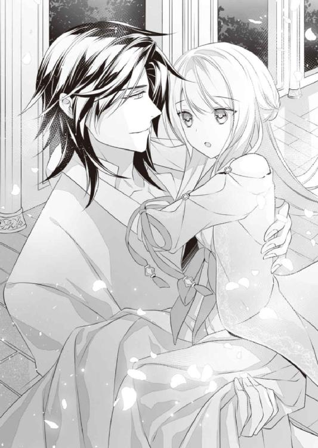
「いい子だ。そのままでいろ」
アーヴィンの部屋はどうやらオリヴィアに用意された場所のすぐ近くだったらしく、回廊を一度曲がっただけで到着した。
居間にはたくさんの明かりが置かれていたが、隣の寝室は枕元の燭台が頼りなげに灯っているだけだ。オリヴィアを寝台に横にしたアーヴィンは、その火もふっと吹き消してした。
明かりが消えても、暗さに慣れたオリヴィアの目ははっきりとアーヴィンの姿を捕らえている。気のせいかもしれないが、彼も少し疲れているように見えた。連日あちこちを飛び回っているというから、疲労が溜まっているのかもしれない。
「あの、アーヴィン様」
「ん？」
彼が疲労するほど、オルタレルの進軍は上手くいっていないのか。つまりボスビアはオルタレルを相手取って優勢でいるのか。そんな疑問が湧いてきたが、彼に目を向けられた途端、それらの問いは喉の奥に詰まってしまった。
「......その、書庫を、ありがとうございました。アーヴィン様がモーガン伯爵に頼んでくださったのでしょう？」
代わりに礼を言うと、アーヴィンはなんてことはないと肩をすくめた。
「おまえの心意気を買っただけだ。だいたいあそこにあるものはモーガンが勝手にくすねてきたものだから、おれには関係ないさ」
「それでも......嬉しかったです。ありがとうございました」
起き上がったオリヴィアは深く頭を下げる。そんな彼女の髪をアーヴィンはくしゃくしゃと掻き混ぜた。
「感謝するのもいいが、たまには休めよ。モーガンに聞いたが、ほとんど書庫に入り浸って机にかじりついているそうじゃないか。熱心なのはいいことだが、何事もほどほどにしないとぶっ倒れるぞ？」
「そんなこと......」
「おまえは我慢強いし、素直でまっすぐなぶん、ちょっと危ういんだよ」
苦笑交じりに、けれどこちらを見つめる瞳はどことなく心配そうな色を宿して言われるから、オリヴィアもなにも言えなくなる。
同時に、彼の気遣わしげな表情を見ているとなぜだか胸の奥がきゅっとして、目頭が熱くなった。
自分でもどうしてそんな気持ちになるのかよくわからない。しきりに目を瞬いて涙を散らそうとするが、上手くいかなかった。
「どうした？ そんなに潤んだ目を向けてきて。......身体が疼いて仕方ないのか？」
オリヴィアの様子をどう思ってか、アーヴィンはそんな軽口を叩いてくる。
そんなことはないと言おうとしたのに、オリヴィアはふと気づいてしまった。
──当たり前のことだけど、自分が処刑されたら、もう彼と身体を重ねることはできなくなる。
最初から無理やりで、その後も強要された関係だったけれど、彼は終始優しくて、オリヴィアももう彼に抱かれることをいやだとは思わなかった。
激しく求められ乱されることは恥ずかしいが、ぎゅっと抱きしめられるのは最初のときから心地よくて好きだった。
そのうち抱きしめられるときだけでなく、彼とこうして一緒にいる時間そのものが愛おしくなって......
......ああ、とオリヴィアは思わず呟いていた。
──そうだ。愛おしいのだ。彼のことが。彼と過ごす時間のことが。
こうした何気ない会話も、こちらに向けられた気遣いも。
なにもかもが愛おしくて、嬉しくて......幸せで、たまらないのだ。
（わたし......いつの間に、アーヴィン様のことをこんなに好きになっていたのかしら）
出逢いは決して穏やかなものではなく、むしろ恐ろしいものだったのに。無理やり処女を奪われ軟禁されて、怒りをぶつけられたりもしたのに......
だが今となってはそのすべてが輝かしい思い出で、かけがえのない時間となっている。
自分が処刑されるかもと考えたとき、手を下すのがアーヴィンなら受け入れられると思ったのも、彼にそれだけの愛情と信頼を寄せているからだ。
彼になら殺されてもいい。そんなことを自然と思うほど、彼のことが好きになっていたから......
（──馬鹿なわたし）
好きになったところで、自分は罪を負った王女で、彼は断罪のためにやってきた異国の王太子。どうやってもこの思いが叶うことなどないのに。
......それでも思わずにはいられない。胸の奥から涙とともにあとからあとから愛おしい気持ちが湧いてくる。理屈ではなく心が叫ぶのだ。彼を愛していると。
「オリヴィア......」
ぽろぽろと声も泣く涙を流すオリヴィアに、さしものアーヴィンも驚いた様子で目を瞠る。
オリヴィアは急いで涙を拭った。
「......ごめ、なさい......なんでもないの」
「なんでもないって顔には見えないが──」
オリヴィアは懸命に口角を引き上げた。
「ほんとうに、大丈夫......」
アーヴィンはじっとオリヴィアを見つめる。真摯なまなざしを向けられると、なんだか言葉にしない本音まで見透かされる気がして、オリヴィアはそっと目を逸らした。
この部屋からも月が綺麗に見える。窓から差し込む明かりをぼんやり見つめるオリヴィアに、アーヴィンは静かに呼びかけた。
「オリヴィア、おまえは、なにかしてほしいことはないか？」
「え......？」
「おまえはずっと、誰かのためになにかすることばかり考えているから。おまえ自身がしてほしいことはないのかと思ってな」
自分がしてほしいことなど......
そう言いかけたオリヴィアだったが、いざアーヴィンと目を合わせると、切なさと愛しさが込み上げて嗚咽が漏れそうになった。
「......ぎゅって、してほしいです」
再び溢れそうになる涙を抑えて、オリヴィアは微笑んだ。
「そっちのほうが、よっぽど子供みたいじゃないか？」
アーヴィンもふっと微笑んで、オリヴィアの身体を自分の胸に引き寄せる。
彼の胸は大きくて、いつも温かい。背中に回る腕も力強くて安心できる。
敵なのにどうしてだろうと思っていたけれど、きっと自分でも気づかぬうちに、彼に惹かれていたためだろう。
そうこうするうち、アーヴィンがオリヴィアの銀の髪を掻き上げて、素肌に直接口づけてくる。耳朶をかすかに甘噛みされ、オリヴィアはぴくりと細い肩を揺らした。
「こういうのはいやか？」
オリヴィアは一拍置いて、静かに首を横に振った。
「......いいえ。もっと、してほしいです」
「なかなか積極的だな」
夜空のように輝く瞳を細め、アーヴィンは優しい手つきでオリヴィアの髪を撫でる。
そして柔らかく口づけてきた。
蕩けるような心地にうっとりと目を伏せ、感じ入ってしまう。彼を好きなのだと自覚した途端、キスも限りなく甘いものになった気がした。
下唇をついばまれながらゆっくりガウンを取り払われる。軽く体重をかけられ、オリヴィアは抗わずに寝台に仰向けに倒れた。
オリヴィアの様子がいつもと違うふうに見えたのか、アーヴィンはことさら丁寧にふれてくる。首筋から二の腕までを優しく撫でられただけで、甘い痺れが身体を突き抜けていった。
自分に残された時間は少ないと思うと、もっと彼の感触を覚えておきたくなって、オリヴィアはそっと手を伸ばす。はだけられた夜着の隙間から彼の筋肉質の胸を撫でると、アーヴィンの口づけが深いものになった。
「んぅ......、は......っ」
ゆったりと舌先を絡まされ、感じやすい口蓋や舌の根をくすぐられる。
両腕を腰と背に回されしっかり抱きすくめられると、彼の体温や香りをより強く感じられて胸が熱くなった。
同時に身体がどんどん昂ぶって、興奮してくるのがはっきりわかる。
恥ずかしいし、とてもはしたないことだと思うけれど止められない。彼を感じたい気持ちが強すぎるのだ。時間がないと思えば思うほど、恥じらっている場合ではないとさえ思ってしまう。
そのせいか自然と足が開いて、腰を彼に押しつける体勢になっていた。
オリヴィアの足のあいだも早くも潤み始めているが、アーヴィンの一物だってすっかり熱を持って脚衣を押し上げている。
「ん......いいな。自分から欲しがるその感じ。好きだぜ」
オリヴィアの首筋に唇を這わせながら、アーヴィンが囁く。冗談であっても好きと言われると胸がとくんと高鳴った。
オリヴィアの胸元を軽く吸い上げながら、アーヴィンは彼女の身体から夜着も取り去る。
そして自分の衣服に手をかけると、手早くすべて脱いでしまった。
半勃ちになった男根が太腿をかすめてくる。その感触と熱さにさっと頬を染めたオリヴィアに、アーヴィンは笑みを深めた。
「こっちもさわってみるか？」
「あ......」
手を取られ、男根にふれさせられる。そっと握り込むと、熱さのほかにかすかな脈動も伝わってきて、オリヴィアは真っ赤になった。
「そのまま擦ってみろ」
「え......こ、こう？」
突然の要求に狼狽えつつも、オリヴィアはそろそろと手を動かす。アーヴィンがその手に手を重ねてやり方を教えてくれた。
すでに首をもたげていた男根は、二度、三度と擦り上げることで硬度を増していく。
切っ先もどんどん上向いて腹につきそうになるのに驚いてしまうが、同時にアーヴィンが目を伏せ「はっ......」と小さく息を吐いたのにどきっとした。
「アーヴィン、さま......気持ちいいの？」
「ああ。もっと強く握っていい......。そう、上手だ」
手の中で張り詰めた男根がビクビク震えると、オリヴィアもなんだかドキドキしてしまう。知らずこくりと喉を鳴らすと、アーヴィンがニヤリと笑った。
「色っぽい顔になってきた。おまえも気持ちよくならなきゃな」
「あ、あ、待って......あんっ......」
アーヴィンがオリヴィアの胸元に舌を這わせて、乳首を乳輪ごと優しく咥え込む。いつの間にかピンと立ち上がった頂をねっとり舐められると、腰の奥に愉悦が走って身体がびくんと震えた。
「は、ぁ......っ、あぁん......」
反対の乳首も指先で軽くつままれ、あっという間に息が上がってきてしまう。アーヴィンの男根をしごくどころではなく、強く掴まないように気をつけるだけで精一杯だ。
「それ、しないで......んっ......できなく、なっちゃうから......」
はぁはぁと荒くなる息の中で懸命に訴えるも、アーヴィンは「別にいいさ」と答える。
「充分気持ちよかった。今度はおまえをよくしてやりたい」
「は、あぁ......でも......、ンンぅ......っ」
「たっぷり濡れて、おれを迎え入れてくれ」
「......あぁああ......ッ！」
艶っぽい声で囁かれると同時に、蜜壺にするりと指を差し入れられて腰が浮き上がる。
胸への愛撫だけですっかり濡れそぼったそこは、アーヴィンの太い指を難なく受け入れた。
アーヴィンは一度指を引き抜き、二本に増やして再度差し入れてくる。内襞をゆるりと撫で上げられて、悪寒にも似た甘い震えが背筋を駆け抜けた。
「ひ、あっ......」
「いい感じだな」
「ああっ......、だ......、あああん......！」
膣壁の感じやすいところを擦り上げられ、胸の頂を交互に吸い上げられる。どんどん裡に溜まっていく快感に煽られ、オリヴィアは激しく身をよじった。
もう男根を握っていることもできず、彼の腕にすがりついて首を打ち振る。銀の髪がさらさらと音を立てて敷布の上を滑り、夜空の星のように輝いた。
「綺麗だな......」
乱れるオリヴィアを見下ろし、アーヴィンが囁く。その声にさえ煽られ、オリヴィアは甲高い声を上げてしまった。
「くるの......っ、あ、ああっ、う......っ、いあああぁぁ──ッ......!!」
膣壁がきゅうっとうねり、細い身体がびくびくっと大きく震える。腰が敷布から浮き上がり、一拍遅れて体中から力が抜けた。
「は、あ......、はぁ、はぁ......」
「すごい喰い締めだったな」
「あっ......」
アーヴィンが指を引き抜くと、あとを追うように大量の蜜がこぼれていく。臀部までつぅと伝っていく感覚を恥ずかしく思いつつ、オリヴィアは促されるまま足を大きく開いた。
アーヴィンはオリヴィアに覆い被さると、彼女の頬を両手で包んで唇を重ねてくる。貪るという表現がぴったりの激しい口づけを見舞われ、オリヴィアはたまらずヒクヒクと身体を震わせた。
彼がいきり立った男根をオリヴィアの陰唇にピタリと沿わせて、それとなく腰を動かしてくるからより興奮してしまう。
「ふっ......あ、あンン......っ」
オリヴィアも腰を上げ、反り返った剛直に自らの蜜口を擦り付ける。亀頭のくびれた部分が感じやすい花芯をかすめるのが気持ちよくてたまらない。気を抜くとまたすぐに達してしまいそうだ。
「挿れるぞ」
唇を解くなりアーヴィンは短く宣言する。頷く間もなく、涎をこぼしてヒクついていた蜜口に、長大な肉棒がずぶりと沈み込んだ。
「あぁあああ──ッ......!!」
オリヴィアは白い喉をさらして嬌声を放つ。蜜壺が激しくうねって、アーヴィンがわずかに眉根を寄せた。
「っ......、すごいな、危うく持って行かれるところだ」
「......ふ......、はぁ......」
「大丈夫か？」
オリヴィアはやっとの思いで頷く。まさか挿入されただけで、軽く達してしまうとは思ってもみなかった。
感じすぎる自分が怖くなってきて、ついすがるように手を伸ばしてしまう。それに気づいたアーヴィンは彼女の細い指に自分の指を絡ませ、小さな手をぎゅっと握った。
（あったかい......）
収まったと思った涙が再びぽろりとこぼれ落ちる。ほろほろと泣くオリヴィアを見下ろし、アーヴィンは小さく苦笑した。
「今日はずいぶん泣き虫なんだな」
幼子をあやすみたいによしよしと抱き寄せられ、オリヴィアはきつく目をつむって全身でアーヴィンを感じる。身体にかかる重みも重ねられた肌の熱さも、中でかすかに震える彼の一部も、全部覚えていたかった。
「アーヴィンさま......」
気持ちが溢れて『好き』という言葉が喉元までせり上がる。なんとか呑み込んだものの、切ない気持ちは膨れ上がるばかりだ。
「いっぱい......してください......」
思いを伝える代わりに、オリヴィアは充足をねだった。
「気持ちよくなりたいです......」
「そういうおねだりなら大歓迎だ」
オリヴィアの額にちゅっと口づけ、アーヴィンはゆるゆると腰を動かしてくる。
感じやすいところをゆったりと擦り上げられるが、じれったい刺激に耐えきれず、オリヴィアは腰を突き上げた。もっと深いところで彼を感じたくて、その腰に足を絡める。
オリヴィアの唇に吸いつき乳房を揉み立てながら、アーヴィンも徐々に抽送を速めていった。
下肢から響く水音が大きくなり、快感が背筋を伝い頭まで突き抜けてくる。
「あ、あぁ、あん......っ、ひあっ......！」
荒波に揉まれている気分だ。なのに苦しみはなく、ただただ気持ちよくてうっとりしてしまう。
「アー、ヴィンさま......、アーヴィン......」
きつく抱きすくめられ揺さぶられながら、オリヴィアは何度もアーヴィンを呼んだ。
そのうち、アーヴィンが眉をひそめて激しく腰を打ちつけてくる。奥まで強く抽送されて、オリヴィアは快感と少しの息苦しさに一気に昇りつめた。
「あっ、あぁ、......あああぁぁ──......ッ!!」
「うっ......」
アーヴィンの身体が激しく震える。痛いくらいに抱きしめられて、オリヴィアは幸せと切なさを同時に感じた。
欲望の証が身体の奥にどくどくと注ぎ込まれる。その飛沫の熱さも抱きしめられる腕の強さも、すべてを刻み込んでおきたい。身体にも心にも、記憶にも。
（......アーヴィン様も......）
ほんの少しは、自分のことを覚えておいてほしい。普段は忘れていて構わないけど、満月の夜にふと思い出す程度に、オリヴィアのことを思ってくれていたら......
達した直後で激しい息をするアーヴィンの背を、オリヴィアは言葉にならない思いを込めて優しく撫でる。新たな涙がじわりと滲んだ。
分不相応な願いだとわかっていても、強く思わずにはいられなかった。
アーヴィンが疲れている理由は進軍が上手くいっていないからかと思ったオリヴィアだが、実際はその真逆だった。
国境近くにいた頃は戦いを繰り返していたようだが、王都に近づくにつれその必要はなくなっていった。なにせ戦う前から相手が白旗を揚げて降伏してくるのだ。それどころか積極的にオルタレルの軍勢に下り、配給を願い出てきたというから驚きである。
どうやらオルタレル軍が快く食料や薬を配ることが辺境から徐々に広がっていったらしい。
民の圧力を受けて白旗を揚げる領主もいれば進んで協力する領主もいて、あっという間に版図は広がったそうだ。
モーガン伯爵のような良識ある貴族は、降伏したのちはオルタレル軍に協力したり、自ら捕虜になったりしているらしい。
逆に保身に走る貴族は領地を捨てて逃げ出し、王都に残るか国外に逃げだそうとしているという。
ということで、もはやこの国でオルタレルの旗を掲げていないのは王都と、そこからさらに北の領地のみとなっている。
王都より北の領地は鉱山を有するところがほとんどだ。ボスビアにとっては富を生み出す最後の生命線でもある。
だがそこでは、オルタレル軍が破竹の勢いで進んでくるのを聞きつけた鉱山夫たちが、反乱や立てこもりなどで抵抗を示しているらしい。民と軍の衝突が絶えないそうだ。
「身内での殺し合いほど馬鹿馬鹿しいことはないさ。さっさとボスビア王の身柄を抑えて、苦しむ民を解放してやらないとな」
久々に濃密な夜を過ごした翌日。昼食を口にしながらアーヴィンは静かにそう言った。
向かいで現状を聞かされたオリヴィアも小さく頷く。冬は雪のため閉山となるはずの鉱山が、ここ数年は王の遊興を支えるため真冬でも運営していたと聞かされては、頷かずにはいられなかった。
（ボスビアの夏は短いしあっという間に寒くなるから、少なくても雪が降り出す前に父を捕らえないといけないわ）
「とはいえ、今日のおれはちょっと休憩だ。配給ルートの確保も終わったし、あとは部下だけでなんとかやれるからな。ボスビア王からの返事がくるまでは下手に動けないし」
「ボスビア王からの返事......？」
「こちらから開戦の申し入れをした。それに対する返事だ」
オリヴィアは鋭く息を呑んだ。
「開戦、ということは──大きな戦争を始めるのですか？」
「事実上の最終決戦というところかな。まだ王都に残っているボスビア王の戦力を一掃するつもりだ」
国を滅ぼす侵略戦争をする場合、王城に全軍で攻め入って、その場で王の首級を取る手段もあるという。
だがアーヴィンはこの国を侵略したいとまでは思っていないらしい。彼の目的は王国を滅亡させることではなく、あくまでボスビア王を斃すことにあるのだ。
「それにはボスビア王を戦場に引っ張ってくるのが一番だ。正規軍同士で戦い、勝敗が決したところでボスビア王を捕らえる。もしくは向こうが降伏してきたのを受け入れる。それが最善の形だが──」
アーヴィンは一度言葉を切り、小さく苦笑した。
「実際どうなるかはボスビア王次第だな。政治も碌にしてこなかった王が戦場に出てこられるとはとうてい思えない。往生際悪く逃げ出す可能性もある」
むしろその可能性のほうが高いとアーヴィンは考えているのだろう。我が父ながら不甲斐ないことだとオリヴィアはため息をついた。
「まったく。こんな話をしてたらせっかくの飯もまずくなる一方だな。難しい話は終わりにして食事を楽しもうぜ。おまえももっと食え」
からになったオリヴィアのグラスに水を注いで、アーヴィンは明るい声を出す。
彼らしい気遣いに微笑んで、オリヴィアは薦められるまま羊肉のパイを口に運んだ。
久しぶりの情事で張り詰めていた気持ちが緩んだせいか、今朝のオリヴィアは昼近くまで眠ってしまった。だがアーヴィンも似たような時間まで寝ていたらしく、目を白黒させるオリヴィアを見て「お互いに寝坊だな」と笑った。
その後は軽く湯浴みをして、彼の部屋で一緒に朝食兼昼食を済ませたわけだが、アーヴィンは今日一日ゆっくりするつもりらしい。オリヴィアのことを「付き合え」と行って、散歩に連れ出したりした。
北国ボスビアにとっては恵みの日差しとなる夏の時期だが、栄養失調で弱っている人間にとっては脱水を引き起こす魔の光でしかない。オルタレルの配給のおかげで多くの命が助かったが、救いの手が間に合わず天に召された命も多かったことだろう。
「──そう暗い顔をするな。可愛い顔が台無しだ」
自然とうつむくオリヴィアの頬を、アーヴィンはむにっとつまんだ。
「今日のおれは休憩と決めている。おまえもよけいなことは考えずにしっかり休め。たまにはのんびりすることも大切なんだよ」
実際、アーヴィンはシャツと脚衣だけの簡素な格好で堂々とくつろいでいる。部屋に戻ってからは靴まで脱ぎ捨て、長椅子の肘掛けに足を引っかけ横になっている有様だ。
一国の王太子とは思えないだらけた姿に、向かいに座っていたオリヴィアはついくすりと笑ってしまった。
「おまえもこっちにこいよ」
「こいと言われても......」
どこに座ればいいのだと思いながらアーヴィンのそばに行くと、あっという間に抱き寄せられ、彼の上に寝そべる形になってしまった。
「ア、アーヴィン様、重たいんじゃありませんか......？」
「いいや全然。いい匂いだな」
おまけに銀髪を一房持ち上げられ毛先にキスされる。夜ならともかくまだ日が高い時間にこんなことをされるのは初めてで、オリヴィアはすぐに真っ赤になってしまった。
「アーヴィン様......んっ......」
やめてほしいと言おうとして顔を上げた瞬間、今度は唇にキスされる。
昼日中から長椅子の上で、舌を絡める濃密な口づけ......。オリヴィアは頭がくらくらしてきた。不謹慎この上ないと思うのに、アーヴィンが腰をしっかり抱き寄せてくるから身動きできない。
終いにはドレスの上からお尻の丸みを撫でられ、びくんっと大きく反応してしまった。
「......アーヴィンさまっ、ダメです」
「『駄目』なのか？ 『いや』じゃなくて？」
恥ずかしがるオリヴィアを上目遣いに見つめ、アーヴィンがからかってくる。
もう！ と思わず彼の胸を叩いたとき、どこからか「ごっほん」とわざとらしい咳払いが聞こえてきた。
「ちょっとは気を利かせろよ、ロベス。せっかくいい雰囲気になってきたのに」
「失礼いたしました。あなた様はよくても、オリヴィア様はお困りのようでしたので」
「この状態を『お困り』って言っているうちは、おまえは独身のまんまだな」
「あいにくとわたしが身を固められないのは、主であるあなた様がふらふらなさっているからです。殿下もそろそろいいお年なのですから、喜ばしい報せの一つや二つ聞かせていただきたいものですなぁ」
「よく言うよ」
いつの間にかやってきたロベスと歯に衣着せぬやりとりを楽しんで、アーヴィンはニヤリと笑う。一方のオリヴィアは驚きのあまり息を呑んで固まっていたが、アーヴィンにポンポンと背中を叩かれハッと我に返った。
「ご、ごめんなさいっ、すぐ退きますから......っ」
「おまえが謝ることはなにもないぞオリヴィア。伏して詫びるのはおれたちの甘い時間を引き裂くロベスのほうだ」
「それで言うなら、不穏な動きを見せたボスビアのほうがよほど無粋ですよ」
ロベスは軽い口調で言ったが、オリヴィアはすぐに浮ついた気分から引き戻された。
「ボスビアがどうかしたのですか......？」
「つい先ほど斥候から連絡が入りました。王都近くのエデルの平原にボスビア全軍が集結していると。早くから陣を敷き、正面から戦いに打って出る心づもりのようです。が」
「が？」
「指揮を執っているのは将軍数名で、肝心のボスビア王の姿はどこにもありません。王はもちろん、王妃も子供たちも」
「ということは──」
「アーヴィン様の読み通り、どうやらボスビア王は我らと正々堂々戦うと見せかけて、その隙に国外に逃亡する腹づもりのようです」
オリヴィアは大きく目を見開いて息を止める。この期に及んで父はもっとも卑怯な手段を取るつもりらしい。護るべき民を戦わせて、その隙に自分だけ逃げようとするとは。
王としてと言うより、もはやひととして見下げ果てた行いだった。
「まぁ、それくらいの悪党ぶりを見せつけてくれたほうが、こっちも変な遠慮や罪悪感を持たずに済む。こうして戦いの前に情報を得られたからには、無駄な犠牲を出すこともなくて済むしな。そう悪いことばかりじゃないさ」
拳を振るわせ唇を噛みしめるオリヴィアと違い、薄笑いを浮かべるアーヴィンは落ち着いて見えた。
だがそれは表面上のことで、彼の青い瞳の奥には冴え冴えとした怒りと殺意が渦巻いている。
予想していたこととは言え実際にボスビア王が逃げたと聞かされれば、やはり冷静ではいられないのだろう。
「ちょっと早いが、こっちもエデルの平原に兵を向かわせる。向こうはどれくらいの兵を用意してきたんだ？」
「連絡が入った時点では約七万。援軍などで増える可能性もありますが......」
「どこもかしこも降伏しているこの状況じゃ、そうは増えないだろう。よし、こっちは十万用意しろ」
「そこまでの兵をつぎ込む必要はないのでは......？」
「ひとまず数で圧倒しておきたい。視覚に訴えるってのはなかなか効果的だからな。それから前線に最新型の大砲と投擲機をバンバン並べろ。それを見た奴らが怖じ気づいて逃げ出してくれりゃ万々歳だ」
ものすごい数字が飛び交う会話に、オリヴィアはめまいを覚える。実際にそれだけの人数が戦ったらどんな状況になるものかと想像したら、めまいを通り越して吐き気が湧いてくるほどだ。
「大丈夫だ、実際に戦うわけじゃない。こちらもあくまで時間稼ぎだよ」
「どういうことですか......？」
「向こうが戦うと言ってきたのに、おれたちも乗るフリをするんだ。実際にドンパチすると見せかけて、逃げるボスビア王をおれたちも追う。気づかれないように少数でな」
「そちらは何人ほど用意しましょうか？」
「ボスビア王がどれだけの供を連れて逃げるかにもよるが、ひとまず精鋭を二十。減らすか増やすかは今後の報告を聞いてからだな。その他の采配はおまえに任せる」
「承知いたしました」
「やれやれ。これじゃあんまりゆっくりできそうにないな」
アーヴィンがため息交じりに長椅子に背を預ける。ガシガシと頭を掻く仕草は「面倒くさいなぁ」と言わんばかりだったが、窓の外に向けた視線はかなり鋭いものになっていた。
おそらく、ボスビア王を追いかける精鋭たちの先頭に彼は立つつもりなのだろう。敵の王の首級を上げる役目だ。大勢が戦う戦場ならまだしも、一騎打ちの場であれば、自分がその役を担うつもりでいるに違いない。
つまり、逃げるボスビア王を追い詰めた先で、アーヴィンが手を下す可能性もあるということだ。
オリヴィアは少し考えたのち、思い切って口を開いた。
「アーヴィン様......わたしも一緒に、父のところへ行ってもいいでしょうか？」
「オリヴィア？」
いきなりなにを言い出すんだとばかりに、アーヴィンは青い瞳をまん丸にした。
「ボスビア王が逃げる先はおそらく北の山脈が連なるほうだ。女がほいほい行ける場所じゃないし、もし戦闘となったらおまえを護る余裕はないぞ」
「護っていただこうとは思っていません。戦闘になって、邪魔だというなら離れます。でも、できれば......父の行く末をこの目で見届けたいんです」
オリヴィアの静かな言葉に、アーヴィンはかすかに眉を寄せる。
「行く末と言ってもなぁ......。下手をすれば、自分の父親が首を切られる場面を見ることになるんだぞ？」
「わかってます」
「若い娘が見るようなもんじゃないし、そもそも場所からして危険すぎる。ここでおとなしく待っていたほうがおまえの身のためだ」
「それでも......行きたいんです。絶対にアーヴィン様の邪魔をするようなことはしません。それにこの腕輪を外してもらえれば、自分の身も自分で守れると思いますし」
ずっと嵌まったままの銀の腕輪を掴み、オリヴィアは懸命に訴えた。
「どうかお願いします。ここで待っているなんて、とてもできません。お願いです......」
アーヴィンは無言でじっとオリヴィアを見つめてくる。夜にオリヴィアを甘やかすときとまったく違う、厳しくて容赦ないまなざしだ。見つめられるだけで緊張して手に汗を掻くほどだが、オリヴィアは必死に彼の瞳を見つめ返した。
「......さっきの言葉を忘れるなよ。自分の身は自分で護れ。おれたちの戦いの邪魔はするな。それを必ず徹底しろ」
「わかりました」
「出発はおそらく明日の夜になる。そのために今夜はゆっくり休め」
そう命じるアーヴィンの雰囲気は、戦闘を仕切る指揮官のものになっていた。
長椅子から立ち上がった彼は靴を履くと戸棚に歩いて行く。引き出しの中には小さな鍵がしまわれていた。
「こっちへこい、オリヴィア」
アーヴィンの前まで歩いて行くと、彼はオリヴィアの細い手首を取る。そして手早く腕輪の施錠を解いた。
その瞬間、オリヴィアはふと呼吸が楽になった感覚を覚え大きく息を吸い込む。
これまでまったく感じなかった精霊の息吹をあちこちに感じられるようになり、懐かしい感覚に涙が出そうになった。
「一気に精霊が集まってきたな。処女じゃなくなった精霊使いに、これだけの数が集まってくるのをおれは初めて見たよ」
アーヴィンが苦笑交じりに呟き、オリヴィアのことを目を細めて見つめた。
「知っているか、オリヴィア。精霊たちは基本的に心が清らかな人間にしか近づかない。ましてちょっと呼びかけられただけでその力を貸そうと思える精霊使いなんて、ほんの一握りだけなんだよ」
「え......」
「特に呼びかけたわけでもないのに、これだけの精霊を呼び集めるおまえだ。精霊たちの目には、きっとおまえの心が透き通った泉みたいに見えてるんだろうな」
「アーヴィン様......」
「おれはさ、おまえに、その綺麗な心をずっと持っていてほしいんだよ」
オリヴィアの胸元にそっと手を添えて、アーヴィンが微笑む。どこか悲しげに見える笑顔だった。
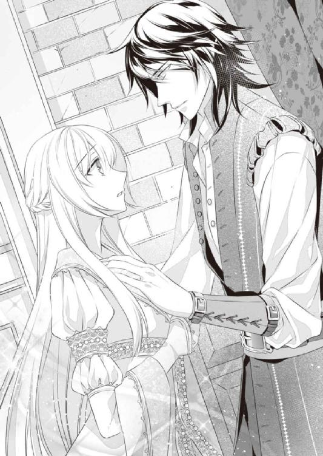
「だから、これから起こるいろんなことをおまえに見せるのが少し怖い。それでも、おまえは一緒にくるのか？」
静かに問いかけるアーヴィンは、きっとこないでほしいと思っているのだろう。
危険だとか足手まといになるというのももちろん大きな理由だろうが、それ以上に、オリヴィアの心に傷がつくことを危惧しているのかもしれない。
オリヴィアは彼にそうして心配されることが嬉しかった。喜んではいけないのかもしれないが、そうやって思ってくれる程度には、自分のことを気にかけてくれているとわかるから。
「──一緒に、行かせてください」
それでも、オリヴィアの答えは変わらない。
アーヴィンは苦笑いになって、オリヴィアの唇に再び口づけた。唇の表面をふれ合わせるだけのものだったが、胸の奥に深く響く口づけだった。
「おれはもう行く。おまえも、出発に備えて待ってろ」
アーヴィンは短く言い残し、オリヴィアを残して足早に出て行った。
＊＊＊
ボスビア、オルタレル両軍がエデルの平原で激突するのは、五日後と定められた。
開戦の日取りを始め、細かい取り決めをするために何度も書状のやりとりがあったようだが、実際に戦う気のないアーヴィンはそういったことはすべて部下にやらせて、自分は早々にボスビア王を追う支度を調えていた。
ロベスを初め、精鋭と位置づけられている選ばれた騎士が二十人ほど随行することになる。オリヴィアはその中に加えてもらう形になった。
そのことを話すと、リリーはひっくり返るほど仰天して「ボスビア王を追いかける!? むさ苦しい騎士たちと一緒に？ それも山のほうへ行くんですかっ？ やめてください、危険すぎます！」と猛反対した。
リアネは意味がわからなかったらしいが、姉が強硬に反対することから、よからぬことが起きると直感したのだろう。オリヴィアの足に抱きついてわんわん泣き出す始末だ。
「大丈夫よ。だってアーヴィン様が一緒なんだもの。心配いらないわ」
「それならせめてあたしも一緒に......っ」
「旅をするのではなくて戦いに行くのだから、一緒には行けないわ。わたしなら大丈夫。これでも腕のいい精霊使いなのよ」
リリーはそれでも心配していたが、なにを言ってもオリヴィアの決意を翻すことはできないと悟ったのだろう。「必ず、必ずご無事で戻ってきてくださいね」と念を押してからは、手早く旅支度を調えてくれた。
そして翌日の夕方。夜陰に乗じて、アーヴィン率いる一行はモーガンの城を出発した。
「斥候の情報では、ボスビア王は王都の北に位置するブリス公爵領に逃げ込んだということだ。王家所有の離宮もあり、おそらくそこを目指すものと思われる。だが途中にはいくつか村があるし、おれたちの目をかいくぐるためにそういったところに潜伏している可能性も高い。道中も決して油断するなよ！」
馬上から集まった騎士たちに大声で呼びかけ、マントをなびかせたアーヴィンは腰の剣を抜き放ち、高々と掲げた。
「ボスビア王を捕らえ、この国にはびこる悪を一掃する！ 全員ついてこいッ!!」
騎士たちがおおおーっと声を上げ、拳を高く突き上げる。気迫に満ちたやりとりに気圧されながら、オリヴィアも手綱を握る手にぎゅっと力を込めた。
こうして一行は矢のような速さで城を離れ、王都を駆け抜け、さらに北へ走った。
王都の向こうは大きな山脈の裾野という土地柄だ。進めば進むほど勾配はきつくなり、武装した騎士を乗せた馬たちも息を切らす。それでも速力が落ちないのは軍用馬として鍛えられているからだろう。
オリヴィアが乗る馬は他の馬に比べればやや細身だが、長く走る体力と度胸があるということで選ばれた。オリヴィア自身が騎士と比べて軽いこともあり、この強行軍にもしっかりついて行っている。月明かりしかない中でも足を踏み外すこともなかった。
「オリヴィア、ついてきているか？」
「はい......」
だがオリヴィアのほうはなかなか馬と同じようにはいかない。
乗馬は貴婦人の嗜みとして習っていたが、ここまで長い距離を駆けさせた経験は皆無だ。
走っているあいだは軽くお尻を浮かしておかなければならないし、手綱を握る手も痺れてきている。風の精霊に身体を支えてもらってなんとか正しい姿勢で跨がっているが、やはり疲れは拭えなかった。
「斥候の話ではボスビア王はこの道を通っていったということだ。これだけの急勾配だ、馬車で行けるのはこの辺が限界のはず。おそらく近くの村に潜んで、追っ手をやり過ごすつもりでいるだろう」
普段から享楽的に暮らしているボスビア王たちだ。例え馬車に乗っていても、道の悪いところを夜通しで走って行くことはできないに違いない。アーヴィンはそう踏んでいた。
そのとき前方から走ってくる馬があった。騎士たちはすぐ腰の剣に手をかけるが、向かってきたのはどうやらアーヴィンが放った斥候らしい。全員がすぐに緊張を解いた。
「ボスビア王は見つかったか？」
「はい。さらに登ったところの砦に潜んでいるのを確認いたしました」
「砦......」
アーヴィンは眉をひそめ、斥候に案内を命じる。
斥候についてさらに坂道を上り、やがて切り立った崖のそばにやってきた。見上げる先には、確かにそこそこの大きさの砦があった。
「ところどころ明かりがついているようだな。よし、いったんそっちの林へ入ろう」
見つからないよう木陰の中に入り、一行はいったん馬を下りる。
風の精霊の力を借りてそろそろと下馬したオリヴィアはほっと息を吐き出す。両足がガクガクして内腿はパンパンに張っていた。倒れた古木に腰を下ろすと、気を利かせたロベスが水を持ってきてくれる。
「すみません、ご迷惑をおかけして......」
「いやいや。女性の身でこの強行軍はつらいですからね。むしろよくついてきていると思いますよ」
近くにいたほかの騎士も「そうそう」「あまりお気になさらずに」と優しく声をかけてくれる。オリヴィアはありがとうと微笑んで、水をごくごく飲み干した。
そのあいだ、アーヴィンと何人かはさっそく今後のことを話し合う。
「なるほど、鉱山夫が逃亡しないよう見張るための砦か。牢を兼ねているならそこそこでかくて生活もできるってわけだな」
「捕らえた鉱山夫を逃がさないようにするため、内部はなかなか複雑な造りになっております。進入路も限られております」
「できれば夜のうちに仕留めたかったが、立地的に難しいか。少人数で奇襲をかける手もあるが......」
あくまでボスビア王を捕らえることが目的なので、多少卑怯な手も辞さないべきかと、アーヴィンたちが考える中。
喉を潤してほっと一息ついたオリヴィアは、ふと不穏な空気を感じ取った。
「精霊たち......？」
近くを飛び回る風の精霊たちが、その場をくるくる回ったりジグザグに飛んだり、妙な動きを見せていた。こちらを見つめる瞳は厳しくなにかを訴えかけている。
彼らがこういう動きを見せるときは、たいてい危険が迫っているときだ。オリヴィアが集中すると、彼らはしきりに空を見上げる。上になにかあるというのだろうか？
「アーヴィン様、精霊たちの様子がおかしいです」
「なんだと？」
「みんな上を気にしていて......なにかあるのかもしれません」
上、と言われ全員が天を仰ぐ。連なった木々の枝とその隙間から夜空がちらちら見えるほかは、傍らにそびえ立つ崖が見える程度だ。
だが異変はすぐに起こった。崖の上からパラパラと小石が落ちてきたかと思ったら、ゴゴゴゴ......と地鳴りのような音が響き渡る。
そして月明かりが照らす岩肌にぬっと影が差し込んだと思ったら、轟音を立てて、崖の上から大きな岩が転がり落ちてきた。
「──よけろ!!」
アーヴィンがすぐさま叫ぶ。全員が反射的に飛び退くが、大岩は続けざまに二つ三つと崖を転がり落ちてきた。
馬たちが大きくいなないて走り出す。突然のことに暴れ出した馬に蹴られ、騎士の何人かがその場を転がった。
「危ない!!」
ロベスに腰を抱かれ安全な場所へ連れ出されたオリヴィアは、騎士たちが岩の下敷きにされそうになっているのを見て、とっさに精霊たちを動かす。
風の精霊たちが疾風となって騎士の身体をすくい上げ、オリヴィアたちのほうに吹き飛ばした。大岩がすぐにその場に落ちてきて、騎士たちは間一髪で難を逃れる。
「崖の上にボスビア王の私兵がいます！ 林の奥へ入りましょう！」
「──いや！ この混乱を利用させてもらう！ 砦に向かうぞ！」
無事だった馬に跨がって、アーヴィンがすぐに命じた。
「動ける者はついてこい！ 突撃だ！」
何人かがすぐに馬に飛び乗りアーヴィンに続く。オリヴィアもロベスに押し上げられ、彼と一緒の馬に跨がった。
「わたしの馬は......っ」
「大丈夫、別の者が乗っています。逃げ出した馬も落ち着けばきちんと戻ってきますよ」
こんな状況だというのにロベスは微笑みながら説明する。その言葉が本当なのかオリヴィアにはわからなかったが、真実であることを願うしかない。
そのあいだも、岩を落とし終えたボスビアの兵たちは、矢をつがえてこちらを狙ってきていた。オリヴィアたちが林を出た途端に一斉に撃ってくる。
「精霊たち！」
オリヴィアが呼びかけると、風の精霊たちは今度は崖の上へ一気に向かった。かまいたちのような鋭い風に足を払われ、ボスビア兵はもんどり打って倒れ込む。
「こっちが奇襲を躊躇う中、先に攻撃を仕掛けてくるとはいい度胸だ！」
先頭を走るアーヴィンが笑いながら叫ぶ。一気に高まった戦の高揚感に身を躍らせつつも、突然の攻撃には相当怒りを燃やしている様子だ。
精霊たちを駆使しつつも、大岩が落ちてきた衝撃が抜けきらないオリヴィアは震えを抑えるので精一杯だというのに。
動揺しているせいか、あるいは処女を失ったせいなのか、いつの間にか背後から追いかけてくるボスビア兵を見つけても、上手く力を振るえずに焦ってしまった。
「落ち着けオリヴィア！ おれたちはこの程度じゃひるまねぇ。無理に攻撃を全部防ごうなんて考えるな」
ロベスが馬に鞭をくれて速く走らせる中、速度を落として並走してきたアーヴィンはオリヴィアと目を合わせて力強く言った。
「だが、おまえの気づきととっさの機転には助かった。下手したら何人かが岩に潰されていたからな。ありがとよ」
男らしい笑みと感謝の言葉をかけられ、オリヴィアはドキッとしてしまう。危うくときめきそうになって、そんな状況ではないだろうと慌てて己を諫めた。
「横からも追っ手がかかっております！ 応戦しますか!?」
「いいや、このまま砦まで突っ走れ！ 戦うのは中に入ってからだ！」
騎士の言葉にアーヴィンは即座に判断を下す。全員が戦うよりも馬を走らせることに集中して、砦へ続く坂道を一気に駆け上がった。
坂は一本道なので、先に登り始めてしまえば追っ手はそのあとに続かざるを得なくなる。
全員が坂を登り切ったところで、アーヴィンが叫んだ。
「扉を閉めろ！ ボスビア兵を締め出してやれ！」
しんがりを務めていた騎士が馬から飛び下り、すぐに鉄製の扉を閉める。太い梁のような閂をかければ、外から扉を破ることはほぼ不可能だ。
扉の外でボスビア兵が悪態をつく声を聞きながら、アーヴィンたちは馬を下り砦の奥へと進む。
たちまち正面からもボスビア兵が出てきた。かなりの数だが、百戦錬磨のオルタレルの騎士にとっては障害でもなんでもない。
「進め！ 狙うはボスビア王の首だけだ!!」
アーヴィンの号令に、オルタレルの騎士たちはまた大声を上げて答える。その気迫だけで、ボスビア兵は及び腰になった。
「ば、蛮族どもが！ これ以上ボスビアを好き勝手にはさせ......ぎゃあああ──ッ!!」
指揮官と思しきボスビア兵が剣を抜き放ち突撃してきたが、アーヴィンは目に見えぬ速さで剣を振るい、相手の脇を切りつける。もんどり打って倒れた指揮官の姿に、ボスビアの歩兵たちは「ひぃっ！」と悲鳴を上げて後ずさった。
「ボスビア王が大事だと言うなら、どんどんかかってこい!! 蹴散らしてやるぞ!!」
それからはあっという間だった。
集められた兵はおそらく戦い慣れていないのだろう。騎士たちの気迫に押され、みるみるうちに倒されていった。
勇気を出して斬りかかったところで即座に反撃を受けるのだ。それも臑や腕を切られて、戦闘不能の状態でその辺に転がされる。
一撃で殺されるならまだしも、痛く苦しい状態で放置されるのだと思えば逃げ出したくなるのも必定と言えた。実際まともに戦ったのは最初だけで、あとの兵は一目散に逃げていったくらいだ。
「王の私兵とは言え、おそらく寄せ集めの集団だ。そんな間に合わせの奴らに、我がオルタレルの精鋭騎士が負けるはずがない」
アーヴィンが当然のごとく言い切る。
自慢とも取れる言葉だが、それを聞いた騎士たちは満足げな面持ちだった。指揮官であるアーヴィンにそう言われることをなによりの誇りにしているのだろう。
だが兵を蹴散らしたというのに、肝心のボスビア王たちが見当たらない。
「確かにこの砦にいたんだろうな？」
騎士の一人が斥候を怪しむが、斥候は「確かに確認しました」と請け負う。アーヴィンも斥候の言葉に頷いた。
「これだけ私兵がいたんだ。短時間でも間違いなくここにいたはず。兵を足止めに残してまた逃亡したってところだろう。すぐに追いかけろ」
「──いました！ あそこに明かりが見えます！」
砦の上の見張り台に登った騎士が大声で叫んだ。
「馬車を使っているか？」
「林の中を進んでいる様子ですが、あの速度からして、馬も使っていないでしょう」
「夜で、上り坂で、おまけに林の中とくりゃ、訓練していない人間が馬に乗るのは無理だしな」
だからこそよけいに往生際が悪い、とアーヴィンは口をへの字にしてため息をついた。
「まぁそれでも、そこそこの数の私兵をここまで連れてこられたんだ。王の体裁を保てたことに相応の敬意は払ってやろう。──おまえたち！ 王を捕らえにいけ」
アーヴィンは何人かの騎士を指名し、さっそくボスビア王一行を追いかけさせる。
別の騎士にはボスビア兵を一カ所にまとめて繋いでおくよう指示し、刃向かう者への対処を告げた。
指示を受けた騎士たちがそれぞれの持ち場に移ると、残されたのはロベスとオリヴィアのみだ。アーヴィンは二人を連れて建物の外へ出る。
そこはちょっとした広場になっていて、磔台や鎖や縄など、物騒なものがあちこちに並んでいた。
「逃亡しようとした鉱山夫を捕らえて、必要とあらば折檻するためのものなんだろう。ボスビア王を引きずり出すにはまあまあ似合いの場所だな」
そこここに置かれた燭台に火を入れ松明を持ち出すと、広場のおどろおどろしさがより浮き彫りになって、オリヴィアは身震いする。
指先を小刻みに震わせるオリヴィアを、アーヴィンは自分の胸に引き寄せた。
「そう怖がるな。おれがいるから大丈夫だ」
オリヴィアが感じているいろいろな不安を、大丈夫の一言でなだめようとするのはいかにもアーヴィンらしい。オリヴィアは小さく微笑み、しばしアーヴィンの胸に顔を埋めた。
「殿下！ ボスビア王一行を捕らえました！」
「早いな。こっちへ連れてこい」
ボスビア王を追っていた騎士たちがすぐに入ってくる。放せ、無礼者、とわめいている先頭の男こそ、オリヴィアの父であるボスビア王だ。そのあとには王妃と子供たちが続いている。
ここまで逃げるのも一苦労だったのだろう。服装こそきらびやかなものだったが、全体的に薄汚れて憔悴しきっている様子だった。
「威厳もなにもあったもんじゃないな」
アーヴィンが言うとおり、騎士に両脇を固められ、ぎゃあぎゃあわめく父王は見苦しいばかりだ。なにが起きるかわからずおびえている王子や王女のほうが儚げに見えるほどである。
ボスビアの私兵に縄を打ってきた騎士たちも合流して、新たに明かりが持ち込まれた広場は、夜なのにかなり明るくなった。
「こ、この、無礼な侵略者め！ わしの国で好き勝手しおって......！」
「民の血税で好き勝手してきた奴がなにをほざいてやがる」
「ぎゃ......っ！」
アーヴィンが腰の剣を引き抜き、勢いをつけて振り下ろす。
銀色に輝く刃が自分の首の前でピタリと止まると、さすがのボスビア王も口をつぐんだ。
「おれを侵略者と言うなら、おまえは無能な殺戮者だ。自分の手は穢さないくせに、どれほどの人間を苦しめ殺めてきたか。ここへきてもまだわからないのか」
「ひぃっ！」
アーヴィンが剣先を首筋にめり込ませてきたため、ボスビア王は喉を絞められた雄鶏じみた声を上げる。それでも往生際悪く視線を周囲に走らせるのは、なんとか逃げ出せないかと考えているからだろうか。
と、その王の目がオリヴィアを捕らえる。こんな場所になぜ若い娘が、というように細められた瞳は、次の瞬間くわっと見開かれた。
「そ、そなたはオリヴィア!? なんということだ、おめおめ捕まっただけでは飽き足らず、よもや敵に寝返ったとは......！ なんという裏切り──ごふっ！」
口角泡を飛ばして身を乗り出したボスビア王を、アーヴィンが容赦なく蹴り上げた。
「黙れ。実の娘でありながら、母親ともども冷遇してきたくせに。その上で戦場に向かわせるとはあまりにも無情な仕打ちだろう。裏切りだなんだと言う資格はおまえには一つもありはしないんだ」
厳しく言い渡すアーヴィンは、剣を握る手にぎゅっと力を込めた。
「おまえの首が未だ繋がっているのは、他でもないオリヴィアがここにいるからだ。そうじゃなきゃこの剣はとっくにおまえの血にまみれている。若い娘にむごい光景を見せないために我慢してやってるんだ。ひれ伏して感謝するがいい」
「うぐぐ......っ」
再び首筋に刃を食い込まされ、ボスビア王はぶるぶる震えながら大量の汗を流す。抵抗しようにも両脇は騎士に抑えられている状態だ。
唸りながらもおとなしくなったボスビア王を見て、アーヴィンは騎士に命じた。
「縄を持ってこい！ こいつを王城へ連行する」
すでに縄を用意していた騎士が、命令を受けすぐに近づいてくる。
いよいよ追い詰められたと思ったのだろう。ボスビア王はあろうことかオリヴィアにすがりついてきた。
「助けてくれぇ、オリヴィア！ わしはそなたの実の父だぞ!? 父がこのまま敵に引き渡されて、そなたの心は痛まぬのか!? 心優しい姫よ、どうか......！」
「黙れ!! この期に及んでなに寝言ほざいてやがる！」
父の叫びを上回る怒声で、アーヴィンが吠えた。
「オリヴィアがどれだけ苦しんできたかも知らずに、よくもそんなことが言えたもんだ。おまえの娘は、今おまえが感じている恐怖なんざ比べものにならないくらいつらい思いをしてきたんだよ。二度と同情を誘おうとするな。反吐が出る！」
「ぐぎゃっ！」
あまりに頭にきたのか、アーヴィンは父の顔を思い切り蹴りつける。頬が真っ赤に腫れ上がり鼻血を流す父は、ひんひん泣きながらもまだ命乞いしていた。
「うぅぅ、オリヴィアぁぁ......っ、助けてくれぇぇ......」
怒りを通り越しあきれ果てた顔のアーヴィンをチラリと見てから、オリヴィアはこくりと唾を飲み込んだ。
そして、毅然とした面持ちで父王を見据える。
「残念ながらお父様は、そうやって命乞いしてくる民を助けようとしませんでした。わたしの母のこともです。......同情の余地はありません。どうか相応の罰を受けてください」
ボスビア王が雷に打たれたような顔で呆然とオリヴィアを見上げてくる。しかしオリヴィアは表情を動かさなかった。
......そもそも、情を持つには父はオリヴィアにとってあまりに遠い存在だった。
出撃を命じられたときは、国王ということもあり、まだ父への情も敬意も多少はあった。
だがリリーやリアネ、その他の大勢の国民を見てきた今となっては、父に敬意を持つことなどとうていできやしない。むしろここへきて娘を頼ろうとする父の矮小さに、嫌悪感と悲しみが募るほどだ。
「わたしはもう、あなたのことを父とは呼びません。だからあなたも、わたしを娘だと思わなくて結構です。どうぞ潔く罪を認めてください」
オリヴィアが告げると、ボスビア王は初めて死刑宣告を受けたような顔になる。
アーヴィンが再度縄を打てと命じると、騎士たちは粛々と動き始めた。
ボスビア王も深くうなだれる。ようやくあきらめたのかと思い、ほっと息を吐いたオリヴィアだが──
「う、......うぉおおおお──ッ!!」
縄を打たれる寸前、ボスビア王が叫び声を上げなら転がり出る。
ハッと振り返ったオリヴィアは、王の手に短剣が握られているのに気づき凍りついた。
ボスビア王はその切っ先を、まっすぐオリヴィアに向けている──
「──ッ！」
「オリヴィア！」
息を呑んで固まるオリヴィアの前に、アーヴィンが躍り出る。目にもとまらぬ早さでボスビア王の手から短剣を叩き落とすと、その腹に思い切り蹴りを入れた。
「うがぁ！」
「きゃあああああっ！」
もんどり打って転がったボスビア王の姿に、王妃や王子たちが悲鳴を上げる。オルタレルの騎士たちは彼らのこともすぐに拘束した。
「オリヴィア、大丈夫か？」
「あ、あっ、アーヴィン様こそ、お怪我を......！」
叩き落とすときに切っ先がかすめたのか、アーヴィンの右の手甲に血が滲んでいた。
「こんなもんはかすり傷だ。舐めてりゃ治る。おい！ すぐにそいつらを連れて行け」
アーヴィンが言うまでもなく、騎士たちは暴れるボスビア王を押さえ縄をきつく巻きつけていく。王妃や子供たちも縄を打たれ、順次広場から連れ出された。王だけでなく王妃まで「無礼者！ わたくしに気安くふれるなんて......！」とわめいていたが、その姿が見えなくなるとたちまち静寂があたりを包んだ。
「おれたちも下に行くぞ。すぐに早馬を飛ばして国王一家を捕まえたことを大々的に知らせろ。開戦には充分間に合うと思うが、少しでも早いほうがいい」
「承知いたしました」
「オリヴィア」
騎士たちにテキパキ指示を出し終えたアーヴィンは、うつむいていたオリヴィアに気づくと、すぐに細い身体を抱き寄せた。
「大丈夫か？」
「はい......」
オリヴィアは頷きながらも、アーヴィンの背に腕を回してひしと抱きつく。
覚悟していたつもりだが、囚われた父の姿を見て決して無心ではいられなかった。裏切り者と罵られたのも、かなりつらかった。
毅然と別離を言い渡せたと思うが、実際には指先は震え、心臓はいやな鼓動をずっと刻んでいたのだ。
なにより、オリヴィアを護るためにアーヴィンが傷を負ったことが、かなり堪えていた。
「もう本当に大丈夫だ。つらいことは二度と......」
不意に、オリヴィアの背を撫でたアーヴィンが言葉を止める。不安に思ってオリヴィアが顔を上げた瞬間、ずしりとした重みが肩にかかった。
「アーヴィ......、──アーヴィン様ッ!!」
重たい身体が倒れ込んでくる。オリヴィアではとても支えきれず、二人は一緒になって堅い石の地面に倒れた。
篝火にアーヴィンの横顔が浮かび上がる。伏せられた睫毛は小刻みに震え、大量の汗を掻いていた。
「だれか......っ！ 誰かきてッ、助けてッ!! アーヴィン様あぁぁ──ッ!!」
オリヴィアの悲鳴を聞きつけ、方々に散っていた騎士たちが血相を変えて駆け寄ってくる。
彼らがなにか言っているのも聞こえないほど取り乱しながら、オリヴィアは必死にアーヴィンの名を呼び続けた。
「──国中に報せをやって、国庫を開いたことを通達いたしました。ボスビア兵の武装解除も完了しております。最終戦争に参加予定だった兵は、もともと王都住まいだった者、独り身の者を残して全員帰郷させました」
「食料などをどんどん運び込むように本国に再通達しております。交路の確保も完了しました。冬に備えて毛布や外套なども手配したほうがよいかと存じます」
「医薬品も足りておりません。医師ごと本国に要請したほうが早いかと思いますが」
「わかった、わかった。欲しいと思ったものは本国にバンバン要請しろ。どうせ渋ってそうそう出さないだろうから、嫌がらせの意味も込めて早馬を毎日走らせてやれ」
「承知いたしました」
ふてぶてしい主人の言葉にロベスが苦笑交じりに頷く。報告にやってきた他の面子とともに部屋を出ようとしたとき、外からバタバタと駆け寄ってくる足音が聞こえた。
「──アーヴィン様ッ!! こちらにいらっしゃいますか!?」
「おう、いるぞ。どうしたオリヴィア、血相を変えて」
右手を挙げて返事をするアーヴィンに対し、夜着にガウンを羽織り、銀の髪も寝起きでくしゃくしゃという状態で飛び込んできたオリヴィアは、その場にへなへなと座り込んだ。
「......もう！ まだ安静にしなければいけないとお医者様もおっしゃっていたのに！ どうして寝ていないのですか！」
「でもほら、安静にしているだろ？ 見ての通り寝っ転がっているんだから」
両手を広げ、アーヴィンは「よく見てみろ」と胸を張る。確かに彼はシャツと緩めの脚衣という軽装で、大きな枕に上半身を預け寝台に腰かけていた。
「でも執務をなさっていたのでしょう？」
オリヴィアはむぅっと唇を尖らせながら反論する。アーヴィンの回りにはたくさんの書類や報告書、手紙などが山積みになっていた。
「まぁな。だが横になっているのは変わりない。それに手足の痺れももうほとんど取れた。ここまでくりゃ、よほど無理して動かなければ大丈夫だよ。経験談だ」
「そんな経験談、聞きたくありませんっ」
へたり込んだままオリヴィアは叫んだ。
──北の領地で、ボスビア王とその家族を追い詰めたあの日。
オリヴィアをかばってボスビア王の刃を受けたアーヴィンは、高熱を発し倒れてしまった。
恐ろしいことに、ボスビア王は隠し持っていた短剣に猛毒を塗っていたのだ。
全身から汗を噴き出し意識を失ったアーヴィンを前に、オリヴィアは取り乱すばかりだったが、随行した騎士たちは落ち着いていた。こういう事態も想定して毒消しを持っていたため、アーヴィンはすぐに手当を受けることができたのだ。
だがかなり強い毒だったらしく、持ち合わせの薬では意識を取り戻すまでには至らなかった。
早馬を飛ばし軍医を砦まで呼びつけ、ようやく峠を越えた頃には、ボスビア王を捕らえてから丸一日が経っていた。
そのあいだも、優秀なオルタレルの騎士たちはきちんと仕事をしていた。アーヴィンの容態が落ち着く頃には、ボスビア王捕縛の報せが敵味方両軍に通達され、大規模な戦いは始まる前に終結した。
そしてオルタレル軍は平原から王城へと移動し、ボスビア側に視覚的に圧力をかけながら無血開城を迫った。ボスビアはモーガン伯爵のほか良識ある貴族たちの働きかけもあり、無事に王城の門を開いたそうだ。
ボスビア王に迎合し甘い汁を啜ってきた者たちは、このときに一斉に捕らえられたらしい。国外に逃亡していた者たちも捕縛したとの報せが続々と届き始めた。
アーヴィンはしばらく砦から動かすことができなかったが、意識が戻り熱が下がってから、ゆっくり移動した。それからはモーガン伯爵の城ではなく、ボスビア王城がすべての拠点となっている。
アーヴィンが意識を失っているあいだも、オルタレルの人々やボスビアの良識的な貴族たちは、やるべきことを素早く実行していた。
だからこそアーヴィンも今まで安静にしていられたわけだが、ある程度動けるようになってきて暇を持て余すようになったのだろう。見たところ顔色もいいし元気そうだが、彼が倒れたときを思い出すと不安でたまらないオリヴィアだ。
（毒の影響で手足は痺れたままなのに......。痺れが完全に取れるまでは安静にって、お医者様も言っていたのに！）
だがアーヴィンからすれば、自身の体調よりオリヴィアのほうが心配らしい。
「そう言うおまえこそ起きていて大丈夫なのか？ ちょっと前まで熱もひどかっただろう？」
オリヴィアは瞬時に耳まで赤くなった。
「だ、大丈夫です。ご心配をおかけいたしました......」
アーヴィンが倒れてからというもの、オリヴィアは彼が倒れた恐怖や自責の念にさいなまれ、必死に彼に付き添った。
朝も夜もつきっきりで看病して、彼が意識を取り戻したあとは、着替えを手伝ったり食事を匙で口元に運んだりと、それはそれは甲斐甲斐しく世話をしたのだ。
実戦の経験もあり、また王族の嗜みとして、幼い頃からある程度の毒に耐性をつけているアーヴィンにとって、こうして倒れるのは初めてのことではない。
周囲はそれをわかっているから、そこまで手取り足取り世話してやる必要はないと、何度となくオリヴィアに言ってきた。
しかし彼女は聞き入れなかった。というより、とにかく必死で、周りの声が聞こえなかったのだ。
アーヴィンが「それでオリヴィアの気が済むなら好きなようにやらせてやれ」と言ったのと、なにより彼自身が世話される状況を楽しんでいたこともあり、オリヴィアはそれこそ、限界を越えて倒れるまで、彼の面倒を見ていたというわけだ。
このことに対しアーヴィンはロベスに蕩々とお説教をされたのだが、熱を出して寝込んでいたオリヴィアには知るよしもない。彼を世話するつもりが、逆に世話をかけてしまったと恐縮するばかりだった。
「まぁ、部屋からここまで走ってこられるくらいには回復したんだろう。おれも手紙の封を切れるくらいには落ち着いてきた。お互いもう病人扱いはやめにするか」
「で、でもアーヴィン様はまだおとなしくしていらっしゃらないと......！」
「この上なくおとなしくしているぞ？ なにせ部屋から出ていないんだからな。いつものおれなら考えられないくらいだ。なぁロベス？」
「おっしゃるとおり。アーヴィン様ときたら、書類が山のように積み上がっていても見えないフリをして、馬を駆りに外へ逃げ出すのが日常ですから」
「そういうことだ」
堂々と胸を張って頷くアーヴィンだが、内容は決して褒められたものではない。
あきれてため息をつくオリヴィアに、アーヴィンは書類を放って陽気に笑った。
「オリヴィアも起きてきたし、ちょっと早いが昼食にするか。ロベス、用意を言いつけてくれ」
「かしこまりました」
「あ、それならわたしも着替えを......」
「そのままでいいさ。気になるようならあとでこっちに届けさせる。こい」
アーヴィンが促すまま、オリヴィアは彼について食事室へ入った。
アーヴィンが居室としているのは、客室が連なる棟の南向きの一室だった。応接間として使われる部屋を改装して執務用の大きな机を持ち込んだほかは、もとからあった家具をそのまま使っている。
当初は国王の部屋を居室にしたほうがいいのではと薦められたが、「あんなゴテゴテした悪趣味な部屋を使えるか」と一蹴したことでこちらになった。
オリヴィアものぞいてみたが、確かに国王と王妃の部屋は悪趣味としか言えなかった。
家具調度はすべて金や宝石で作られたもので、一つ一つの整合性がいっさいなく、高価なものをただ並べただけという感じだったのだ。
さらに王族が暮らしていた棟は役人たちが働いている場所からも遠いということで、実用性と合理性重視で、ひとの出入りが比較的多い場所に居を構えたのである。
それはいいが、なぜかオリヴィアの居室もアーヴィンの隣に用意されていた。看病疲れで倒れるまで、ほとんどアーヴィンの部屋に泊まり込んでいたので使うこともなかったが、熱にうなされていた数日はそちらで休んでいたのだ。
もとが賓客の部屋ということでとても広く使い勝手のいい部屋ではあったが、どうにも落ち着かなかった。
（そもそもわたしは、アーヴィン様と一緒に食事を取っていい立場ではないのでは......？）
運ばれてきた豪華な昼食を前に、オリヴィアはつい考え込む。向かいでパンをちぎっていたアーヴィンが「どうした？」と声をかけてきた。
オリヴィアは少し考えたのち、気になっていたことを尋ねる。
「あ、の、父や弟妹たちが今後どうなるかは、もう決まったのでしょうか......？」
質問を聞いてもアーヴィンの表情は変わらない。いずれ聞かれるとわかっていたのだろう。パンをゆっくり咀嚼してから答えた。
「飯を食ったあとで教えてやる。今は食え。食べるものを食べなきゃ話を聞いたところで、それを理解する頭が働かないからな」
もっともなことを言われ、オリヴィアは殊勝に頷く。
出されたぶんをきっちり食べ終えた頃、リリーとリアネが着替えを持ってやってきて、オリヴィアにドレスを着せかけた。
「ん。そういう色のドレスもよく似合うな、オリヴィア」
季節が秋に移ろってきたので、今日の装いは銀の刺繍が入った白の下衣に、濃いめの紫のローブを合わせていた。
夏場は涼しげな色合いが多かっただけに、新たな装いがアーヴィンはいたく気に入ったらしい。わざわざ歩み寄ってオリヴィアの頬に口づけてきた。
「そ、それで、先ほどの質問の件ですが」
「まぁ座れ」
急かすオリヴィアをなだめるように、アーヴィンは彼女の背をゆったり撫でる。
導かれるまま暖炉の前の長椅子に腰を下ろすと、アーヴィンは一人がけの椅子を彼女の向かいに運んで、自分はそこに腰かけた。
「ボスビア王は斬首に処されることが決定した」
いざ話し始めるときになると、アーヴィンはもったいぶらずにズバリと切り出した。
「護るべき民から搾取し続け、享楽に生きた罪は為政者としてもっとも重い。刑は王城の前の広場で、民の前で行うことになった」
斬首刑は、数ある処刑方法の中でも見世物の意味合いが強いものだ。広場に処刑台を設け、民衆の前で首を切り落とすのがその証拠と言える。刑を受ける人間は民からの罵倒と怨嗟を受けながら、恥辱にまみれ死んでいくことになるのだ。
父のしてきたことを思えば順当な刑だ。一口に死刑と言っても方法は色々とあり、斬首はその中でも一撃で終わって苦しみが少ない。アーヴィンのせめてもの温情なのかもしれなかった。
「二人の王子は我がオルタレルが引き取る予定だ。まだ十歳と八歳だからな。ボスビアはもちろんオルタレルの王都からも遠い辺境に封じて、忠臣のもとで相応の教育を行う。その後のことは成人するとき改めて考える予定だ。教育後もボスビア王のように性根が腐っているなら相応の罰を与えるし、更生しているなら食うに困らない程度の職を与える」
「弟たちは一緒の場所で暮らせるのでしょうか？」
「あいにくとそれは無理だ。物心つく前ならそれも可能だっただろうがな」
確かに......十歳と八歳なら善悪の区別もできるし、価値観も形成されている頃だろう。
「王妃様と、妹は......？」
「王妃は毒を用いての処刑が決定した。国王の処刑が終わったのち、牢に処刑人が出向いて毒を飲むところを見届ける予定になっている。王女はまだ五歳と幼いことから、やはりオルタレルが引き取ることになった。こちらは戒律の厳しい神殿に預ける予定だ。オルタレルの神殿で神官になれるのは精霊使いのみだが、幼い頃から真面目に奉公していれば、神官の側仕えくらいにはなれるから」
オルタレルの神殿は孤児院や病院も兼ねているらしく、真面目に働き勉強すれば、保母や看護人にもなれるそうだ。神殿から出ることはかなわないが、その敷地は広く、中にはちょっとした店や娯楽施設もあり、暮らしに不自由はないという。
五歳で見知らぬ環境に飛び込むのは大変だろうが、神殿に捨てられ奉公人になる子供は多いというから、似た境遇の子供たちと仲良くしてくれればいいと思った。
国王と王妃はともかく、幼い弟妹たちが身元を保証してくれる人々のもとへ預けられるということには心からほっとした。あとは彼らが贅沢三昧だった日々から上手く脱却し、平穏無事な人生を手に入れられることを祈るばかりだ。
胸を撫で下ろしたオリヴィアは、次にする質問に備え一度ゆっくり深呼吸する。
覚悟を決めて、彼女はまっすぐアーヴィンの青い瞳を見つめた。
「それで......わたしの処遇はどうなりますか？」
「おまえの処遇？」
緊張するオリヴィアに対し、アーヴィンはきょとんと問い返した。
「わ、わたしも、ボスビア王家の人間です。民を苦しめた側の人間として、相応の罰を受けるべきだと思います」
戸惑うアーヴィンの表情に驚きながら、オリヴィアは言葉を重ねる。しかしアーヴィンは納得するどころか眉間に深い皺を刻んだ。
「そうは言っても、おまえは王女として扱われていなかっただろう。むしろ外界から遮断された場所で、ほとんど軟禁状態で育ったんだろうが」
「それでも、衣食住に困った経験はありません。大きな病気もしたことはないし、寒い日は暖炉の火で暖まれました。わたしのそんな環境は、民から取り立てた税で成り立っていたものでしょう？ それなら、やっぱりわたしも罰を受けるべきです」
決然と言い切るオリヴィアに対し、アーヴィンは思いきり渋面になった。
「なるほどな。確かに理にかなった言い分ではある」
「それじゃ──」
「が、少なくてもおれたちオルタレルの人間は、おまえを処罰しようとはまったく考えていない」
渋面のまま、アーヴィンはきっぱり言い切った。
「ど、どうして......」
「どうしてもなにも、おまえが冷遇されていたのはおれに近しい人間ならみんな知っている。おまえの身代金を要求したとき、ボスビア王が『戦力にならない者はいらない』とばかりに捨て置いたということもな」
やはり自分は捨て置かれていたのか、と少し傷つきながらも、オリヴィアは話に耳を傾けた。
「おれたちの中でのおまえは『ボスビアの王女』というよりは、『オルタレルの騎士を救った優秀な精霊使い』という感じだ。あの砦でおまえが力を振るったからこそ、こちらの犠牲者はゼロで済んだ。敵の怪我も最小限で済んだしな。あのときの騎士たちにとって、おまえはまさに勝利の女神なんだ」
「そ、それは言い過ぎでは......？」
「とにかく、感謝こそすれ、誰もおまえを恨んだり憎んだりしちゃいない。その証拠に、おまえがおれのそばにずーっとついていても、誰も文句を言わなかっただろう？」
そう言われれば確かに......。むしろオルタレルの騎士たちはオリヴィアがいつ看病疲れで倒れるかと心配して、なにかと世話を焼いてくれた。
「それでなくても、おまえの生い立ちにはみんな同情的だ。オルタレルの者だけでなく、モーガンみたいなボスビアの貴族たちも、おまえには正統な地位を与えるべきだと言っている」
「正統な地位......？」
アーヴィンは一度頭をガシガシと掻いてから、オリヴィアをまっすぐ見つめてきた。
「おまえ、この国の王位を継ぐ気はないか？」
「......え？」
死刑になれと言われるよりよっぽど予想外なことを言われて、オリヴィアは唇を薄く開いたまましばし呆然となった。
「......え、え？ 王位？ わたしが？」
「別に不自然なことじゃないだろ。王子どもはオルタレルに行くし、親戚はそのほとんどが国王におもねって甘い汁を啜っていた奴らだから、処罰は免れない。玉座に座れる人間はおまえしか残っていないのが現状だ」
「で、でも......！」
オリヴィアは激しく狼狽した。
「わたし、だって、為政者になれる教育なんて一つも受けていません！」
「そんなもんはこれから勉強すればいいし、だいたい政治のことなら、早い段階でオルタレルに逃げ込んできた良心的な貴族どもがいるから、そいつらを頼ればいい。議会幹部を務めていたり大臣だった奴もたくさんいるからな。そいつらが色々提案してくれるさ」
「それにしたって......！」
混乱を極めるオリヴィアに対し、アーヴィンも少し困った様子で再び頭を掻いた。
「おれもな、最初はそんなつもりじゃなかったんだ。そばに置いて可愛がろうとは思っていたが、おまえを王位に就けようとは少しも考えていなかった」
「それならどうして......」
アーヴィンは少し考えたあとで、オリヴィアの瞳をじっと見つめてきた。
「モーガン伯爵の城に着く前に泣いていただろう？ 自分は王女なのになにもできないって」
オリヴィアは頷く。痩せ細った街の子供たちを見て、自分の無力さに打ちひしがれたときの悲しみは、今も胸の中にしっかり残っていた。
「そこでただ嘆き悲しむだけで終わるなら、哀れな王女様でおしまいだった。だがおれの助言を聞いておまえは学ぶことを決めた。自分ができることをすると言って」
そしてオリヴィアはアーヴィンが思っていた以上に必死に勉強し、知識を貪欲に仕入れていった。その様子を見て、彼の中でオリヴィアは庇護する対象から支えるべき人間に変わったという。
「おまえは民のために自分ができることを探していた。なら、玉座に着くのが一番手っ取り早い方法じゃないかと思ったんだ」
「手っ取り早いって......」
もっと他に言いようがあるのでは？ とオリヴィアはつい眉を寄せた。
「けれど、わたしが王になることを民は快く思わないのでは？ 貴族たちだって反対すると思うけれど......」
「貴族どもは、おまえが王位を継いでくれたらむしろ助かると言っていたぞ。新しい王を決めるにしても王制を廃止するにしても、大変になることは目に見えている。国の復興に集中するためには、それ以外の面倒ごとはとっとと片付けたいのが本音だ」
国王を誰にするか決めることを『面倒ごと』ときっぱり言ってしまうあたりがアーヴィンらしい。だがそれだけ大変なことであるのは確かなのだろう。
「もちろん実際に引き受けるかどうかはおまえの気持ち次第だ。これまでずっと閉じ込められていたから自由になりたい気持ちもあるだろう。女王になったら今以上に窮屈になるだろうしな」
窮屈とアーヴィンは言うが、軟禁を強いられてきたこれまでと、自分の意思でその場にとどまることはまったく違う。
自分が王になることで国の復興が早まり、貴族たちも安心してその手腕を振るえるとなれば──オリヴィアが出す答えは一つだけだ。
「わたし......女王になります。この国のためにできることをしたいから」
「新王の誕生だな」
オリヴィアの決意に、アーヴィンはやや苦笑する。口で言うのは簡単だが実際には大変な仕事だぞ、大丈夫なのか？ という意味だろうか。
確かに大変な仕事だろうが、心は決まった。凜とした面持ちのオリヴィアを見て、アーヴィンも表情を改める。
そして彼はおもむろにオリヴィアの前に膝をついた。
「アーヴィン様......」
「ボスビアに新たな王が誕生したことに、心から喜びを申し上げる。あなたの治世が華々しいものになるように、我がオルタレルも助力することをここに誓おう」
オリヴィアの手を取り、アーヴィンは恭しく口づけてくる。
突然のことに驚いたオリヴィアは、紫の瞳を大きく見開いてまじまじとアーヴィンを見つめてしまう。
「なんだよ。おれの顔のなにかついてるのか？」
「いいえ、なんだか......アーヴィン様がすごく素敵な王子様に見えて」
「あ？」
目を丸くするアーヴィンに対し、オリヴィアは真顔で答えた。
「会ったときはとても怖かったし、言葉遣いも荒っぽくて、あまり王子様に見えなかったから......こうして挨拶されると、まるで別人みたいに見えるわ」
「言うようになったな、おまえも」
あきれ顔で嘆息するアーヴィンに、オリヴィアはふふっと笑った。
「さて、そうと決まればボスビアの貴族たちを呼び寄せるか。おまえが女王になることを承諾したと知ったら奴らも喜ぶだろう」
「そうだといいのですけど」
「大丈夫だ。おれがついてる」
うつむくオリヴィアの肩をぽんと叩いて、立ち上がったアーヴィンは今度は手を差し出してくる。
その手を取って、オリヴィアもゆっくり立ち上がった。
その後、オリヴィアが女王となることが貴族たちに正式に承認され、ボスビアは復興への道を歩み始める。
玉座を追われた先王とその取り巻きたちが処刑され、王子と王女がオルタレルに渡るのを期に、アーヴィンも兵を率いて自国へ帰って行った。
＊＊＊
「──さぁさぁ、お早く！ お客様が見える時間ですよ！」
「リリーったら、そんなに急かさなくてもいいのに」
「なにをおっしゃるんですか。その目のクマをしっかり隠すためにはお化粧に時間をかけなければなりません。そのためにはもうお支度を始めないと！」
「オリヴィアさまっ、今日のドレス、とってもすてきですよ～！」
リリーとリアネ姉妹が左右から声をかけてくる。入浴を終え、素肌にローブを纏っていたオリヴィアは苦笑した。
衣装室にはすでに女王つきの侍女が集まっていて、オリヴィアが姿を見せるとすぐさまローブを剥ぎ取り、ドレスの着付けに入る。
髪結いの係がオリヴィアの髪を丁寧に梳く中、侍女たちは「楽しみですわ」とはしゃいだ声を上げた。
「オリヴィア様が女王に即位されて今日で三年......。本当に、あっという間の三年間でしたわねぇ」
「最初のうちは国庫を開いても城の美術品をすべて売り払っても、まだまだお金が足りなくて大変でしたけれど」
「オルタレルの援助のおかげでようやく持ち直してきて、こうして式典を開くまでになれたのですから」
「そうね......。本当に、あっという間の三年間だったわ」
鏡台に映る自分の姿を見つめながら、オリヴィアもしみじみ呟いた。
侍女たちの言うとおり、今日はオリヴィアが女王に即位してから三年という節目の日だった。
これまで国の復興と財政難を理由に祝賀的な催しはいっさい行っていなかったが、ようやく民の生活が苦境を抜け食べていくのに困らなくなったということで、式典を催すことになったのだ。
来賓を迎えて晩餐会を行うだけだが、王城に客人を招く余裕ができたということが城の者にとってはとても嬉しいことだったのである。
「さて、御髪はこれで完成です。次はドレスですね」
腰まで伸びた銀の髪を複雑な形に編み込み、高い位置でまとめたあとはドレスの着付けだ。
立ち上がったオリヴィアは侍女たちに言われるまま姿見の前に立つ。
この三年でオリヴィアの体つきもすっかり女性らしくなった。小ぶりだった乳房は膨らみを増し、きゅっと締まった腹部と張りのある臀部が柔らかな曲線を描いている。白い肌は真珠のように輝き、紫の瞳は理知的な光を宿していた。
普段は質素なドレス姿で城を歩いているが、きちんと正装し王冠を被れば、初々しくも美しい女王陛下に様変わりする。新たな時代の到来を象徴するようなオリヴィアの女王姿は、国民からも絶大な支持を得ているのだ。
「オリヴィア様、帯にさすお花はどれがいいでしょう？」
リアネが銀のトレイに乗せた花を差し出しながら尋ねてくる。
あの小さかったリアネも、もう今年で八歳だ。まだまだ小柄だが顔色はすっかりよくなり、侍女見習いとして頼もしく働いている。
「そうねぇ。その白い花にしようかしら。飾り帯が紫だからよく映えるでしょう」
「では、同じ花を髪にも挿しておきますね」
オリヴィアの決定を受け頷いたリリーも、女王の筆頭侍女として毎日キビキビ働いていた。
読み書き計算を習得してからは城の奥向きのことにも興味を持ち、いずれ女官になるのもいいかも、と夢を持ち始めている。
他の侍女たちも若く賢く将来性のある者たちだ。身分の上下に関係なく、学びたい志の高い者には教育を授けるというのも、オリヴィアが進める改革の一つだった。
「さて、これで完成です！ 綺麗にできましたよ」
「ありがとう」
ドレスの着付けが終わり、姿見をのぞいたオリヴィアは静かに頷く。
この日のためにあつらえたドレスは、銀糸で花模様が入れられた白の下衣と、目が覚めるような青色のローブだ。飾り帯と長いマントは紫色で、オリヴィアの瞳の色に合わせてある。
宝石の類いはいっさいないが、結い上げた髪と飾り帯に差した白い生花が、瑞々しくも美しい印象を見る者に与えていた。
ちょうど迎えがやってくる時間になって、オリヴィアは侍女たちを連れて私室を出る。
部屋の前には大臣たちが集まっていて、オリヴィアの姿を見ると歓声を上げた。
「これはお美しい！ 大変お似合いですよ、女王陛下」
「ありがとう、モーガン宰相」
両手を広げて讃えるモーガンに、オリヴィアはにっこり微笑む。
三年前は地方領主で伯爵だったモーガンも、今は宰相を務める侯爵閣下だ。彼の背後に並ぶのはオリヴィアの即位と同時に戻ってきた良心ある貴族たちで、それぞれ大臣などの要職を務めている。彼らも年若い女王の盛装に自然と頬を緩めていた。
「では下へまいりましょうか。いよいよオルタレルの王族を迎える日がきましたなぁ」
「本当に......。お出迎えの準備は大丈夫よね？」
「万事抜かりなく」
「ありがとう。では行きましょうか」
オリヴィアが先頭に立ち、一行は王城の正面門へ移動する。
そこには儀礼服に身を包んだ兵士や楽団がすでにそろっており、賓客の来訪を今か今かと待ちわびていた。
「ああ、お見えになりましたな」
背の高いモーガンが呟くと同時に、こちらへ向けて走ってくる馬車の一団が見えてくる。
すでに城下の民の歓迎を受けたのだろう。うっすらと紙吹雪を被った馬車は、滑るように門をくぐってオリヴィアたちの前へ停車した。
歓迎の音楽が鳴り響き、馬車の扉に向け城から一直線に絨毯が伸ばされる。
絨毯がピタリと馬車の扉につけられると、ようやく御者が降りてきて扉を大きく開いた。
そこから出てきたのは、大柄でいかめしい顔つきをした男性だ。ピカピカに磨かれた革靴から、脚衣、上着、マントに至るまで細かい刺繍や飾りをつけており、たいそうな身分の人間だとはっきりわかる。
なにより、きらびやかな装いに負けぬ威厳が体中から溢れていて、オリヴィアはかすかな緊張を感じこくりと喉を鳴らした。
「オルタレル国王陛下のおなりです！」
代表者と思しき兵が叫ぶのに合わせ、ボスビアの面々が一様に礼を取る。馬車を降りたオルタレル王は、堂々たる足取りで絨毯の上を歩いてきた。
オリヴィアもドレスの裾を持ち上げ、深々と頭を下げる。
「遠路はるばる、ようこそお越しくださいました。オルタレル国王陛下のご来訪を、ボスビア王城の者一同、心より歓迎いたします──」
「堅苦しい挨拶はよい、よい。それより女王よ、顔をよく見せよ」
「はい......」
緊張しつつ顔を上げたオリヴィアは、すぐ目の前に立つオルタレル王に圧倒される。
まるで巨大な山脈がそびえ立っているようだ。立派な口ひげがより厳格そうなイメージを与えるからかもしれない。
だがこちらをまっすぐ見つめる瞳は綺麗な青色だ。色も形も息子のアーヴィンとうり二つで、オリヴィアは少しドキッとしてしまった。
「ふむ、なるほどな......。先に言っておくが、アーヴィンはこないぞ」
「えっ」
「所用でな。一緒にくる予定だったが、思いのほか手こずっているらしい。普段から自国のことを放っておいて、こちらにばかり構っておるツケが回ってきたのだろう」
まるでアーヴィンがこられない理由はボスビアにあるとばかりの言い方だ。
オリヴィアは唖然としたが、背後に並ぶ重鎮たちはむっとする。だがオルタレルに全面的に頼り切っているのは間違いないので、なにも言えず押し黙るしかなかった。
「余は長旅で疲れておる。早く部屋へ案内するがいい」
「あ......失礼いたしました。オルタレル国王陛下をお部屋へ......」
ハッと我に返ったオリヴィアは慌てて侍従を呼びつける。彼についてオルタレル王が王城へ入ると、誰ともなく重苦しいため息をついた。
「最初から、なかなか手痛い挨拶を浴びせられましたな」
「......仕方ないわ。アーヴィン様のお立場で、頻繁に他国にやってくることのほうがおかしいのだもの。オルタレル王のお言葉は間違いではないわ」
肩をすくめるモーガンに苦笑を返し、オリヴィアは気持ちを入れ替える。
「晩餐の席でしっかりおもてなしをして、感謝と誠意をお伝えしましょう。きっと長旅でお疲れだっただけでしょうから」
大臣たちも頷いて、晩餐会に向けておのおの支度に向かった。
せっかくの女王の即位記念日ということで、晩餐会には国内のみならず、復興にもっとも手を貸してくれているオルタレル国王と王太子を招待して華やかなものになる予定だった。
実際に多くの客人が集まり、長テーブルの中央にはオリヴィアと、その向かいにオルタレル国王が座る形で食事が始まったが、友好的で打ち解けた雰囲気に......とは、まったくならなかった。
と言うのも、オルタレル王は食事中ずっと気難しい顔を崩さず、オリヴィアが話を振っても、せいぜい「ああ」とか「うむ」と相槌を打つばかりで、碌な会話が成立しなかったのである。
オリヴィアが見る限り、城の者はよく働いていて失敗らしい失敗はしていない。この日のために一ヶ月も前から仕込みを始めていた晩餐は、見た目も味も素晴らしく、とても豪勢なものだ。
普段から美食に慣れているであろうオルタレル王でも、喜んでくれるだろうと思っていたが......
（わたしがなにか粗相をしてしまったのかしら......？）
あまりに続かない会話に、話を振る気力もなくなってきたオリヴィアは考え込む。
なんとも言えない緊張感が続く中、デザートが出てくる頃になると、オルタレル王が一度咳払いして口を開いた。
「ところで、我が国の王太子である不肖の息子のことなのだが」
いきなりアーヴィンの話題を振られ、オリヴィアはますます緊張した。
「アーヴィン王太子殿下には、わたしの即位以前から大変よくしていただいております」
「そうらしいな。今や一年のうちの三分の一は、このボスビアに関することで飛び回っておるという状態だ。あやつの放蕩癖は今に始まったことではないが、この頃は目にあまるほどになってきておる。世継ぎの君であるというのに実に嘆かわしいことだ」
......どうやらオルタレル王は、アーヴィンが頻繁にボスビアを行ったり来たりすることをよく思っていない様子だ。
無理からぬ話だろう。世継ぎの王子というのはどこの国でも大切に育てられるし、王城から離れるときには大勢の護衛や世話人を従えていくものだ。
だがアーヴィンは馬を駆って単身どこへでも行ってしまう。ロベスなどの腹心は常にそばに控えているが、その人数は十人にも満たない。国王にとっては身軽に見えるはずだ。
「......アーヴィン殿下には大変お世話になっておりますのに、殿下ご自身のお立場に関しては考えが及ばず......ボスビアの女王としてお詫び申し上げます」
オリヴィアが居住まいを正して頭を下げると、隣に並ぶ宰相や大臣たちもそれに倣う。
オルタレル王はフンッと鼻を鳴らした。
「今更謝罪をされてもな。とにかく、この国も他国の王を迎える程度の体裁を保てるようになったのであろう？ それならば、我が国からの援助はもう打ち切って構わぬな？」
「えっ......!?」
予想だにしなかったことを言われ、オリヴィアは大きく目を見開く。大臣たちも一斉にどよめいた。
「オルタレル国王陛下、それは......！」
「それと、いい加減せがれには落ち着いてもらわなければならないからな。アーヴィンには近々妃を取らせるつもりだ」
「きっ......!?」
二重の衝撃に、オリヴィアは喉が絞められたような声を出してしまった。
「それはまことでございますか、オルタレル国王陛下？ アーヴィン殿下にお妃とは......」
「なんだ。援助の打ち切りよりそちらのほうが気になるのか？ ボスビアの宰相閣下は」
ニヤリと笑いながら問いかけるオルタレル王に対し、モーガンは難しい顔で頷いた。
「ええ、気になりますな。なにせアーヴィン殿下は、いずれは我が国の女王陛下と婚姻を結びたいと、我ら重臣には折にふれておっしゃっておりましたので」
「モーガン宰相......！」
オリヴィアは悲鳴じみた声を上げる。そんなことをアーヴィンが言っていたというのも驚きだが、それを今ここで言うのかと仰天してしまった。
「なにを馬鹿なことを。アーヴィンがただの王子であれば婿入りは可能だったであろうが、あやつは我がオルタレルの世継ぎの君──王太子なのだ。それとも女王が王冠を脱いで、我が国に嫁いでくるつもりなのか？」
「わ、わたしは女王の務めを放棄するつもりはありません......！」
オリヴィアが反射的に答えると、オルタレル王は笑みを深める。言質は取ったぞ、と言わんばかりの確信的な笑みだ。
「女王はこう言っておるぞ。それを臣下が否定するのか？」
「ですがアーヴィン殿下は......」
食い下がろうとするモーガンに対し、オルタレル王はうるさいハエを追い払うように手を振った。
「ならばこうしようか、ボスビアの女王よ。臣下たちの様子を見るにつけ、どうやらそなたも、せがれに対しひとかたならぬ思いを抱いておるようだ」
前のめりになるオルタレル王に対し、オリヴィアは身構えてしまう。いったいなにを言われるのかと冷や汗が背中を伝った。
「そなたがおとなしくアーヴィンから身を引くというのであれば、温情としてボスビアへの援助を続けよう。そなたがアーヴィンと結ばれたいというなら、そなたが王冠を脱ぎ、我が国に嫁いでくるという場合のみ婚姻を認めようぞ。その場合、援助と言えるほどではないが、相応の祝い金をこの国に送ってやる。──さぁ、どちらがいいかね？」
面白がった口調で言っているように思えるが、オリヴィアを見据えるオルタレル王の瞳は恐ろしいほど真剣だった。
このような話、冗談であってもするべきではない。真面目に言っているのならなおのこと、親交を深めるための晩餐ではなく、後日改めて会談の席を持って言うべきだ。
事前の通告もない中でこんな選択を突きつけられて、その場で決められるはずがない。
かなり非常識なやり方だけに、ボスビアの面々はいずれも渋い顔を隠さなかった。
「そのようなお話、ここで即答できるはずがございません」
「答えたくないというならそれでもよいぞ。大事な場面において即断即決できない者が王位に就いているということが吹聴されるだけだからな」
「挑発なさるおつもりですか？ だとしたらあまりに稚拙と言えるでしょう。こちらこそ、オルタレル王が晩餐の席で無理難題を強いてきたことをおおっぴらに嘆かざるを得ませんからな」
「ボスビアの宰相はなかなか口が達者だな」
半ば本気で怒っているモーガンに対し、オルタレル王は余裕の構えだ。
実際、ボスビアのような小さくて困窮している国がなにをわめいたところで、周辺諸国は聞かぬフリをするに違いない。大国オルタレルに逆らう利はなにもないのだから。
だがそれにしても、オルタレル王の申し出はあまりに急で一方的なものだ。
どちらを選んでも金は払うのだからいいだろう、という高圧的な言い方も、ボスビア側の怒りを煽るには充分すぎるものである。
しかし......
（......これが、わたしを試すための問いかけだったら？）
最初の衝撃が去ると、オリヴィアは不思議と既視感に囚われ、そんなことを考え始める。
彼女の頭に浮かんできたのは、三年前、アーヴィンに囚われ捕虜となった翌日に、民を助けるために彼の精霊使いになるか、専属娼婦になるかを迫られたときのことだ。
あのときのアーヴィンも、今目の前に座るボスビア王と同じまなざしでオリヴィアを見つめていた。口元には笑みを浮かべていたけれど、まなざしは射貫くほどの強さで、こちらをまっすぐ見つめていて──
オリヴィアは深く息を吸い、意識的にゆっくり吐き出す。
......あのときも、オリヴィアはボスビアの民を助けるために身の振り方を選択した。
思えばあれが、自分が女王となるための最初の選択だったのかもしれない。
「──お恥ずかしいことですが、この国はまだ貧しく、他国からの援助や救いの手がなければ立ち行かないのが現状です」
「女王陛下......っ」
「今オルタレルからの援助がなくなってしまえば、今年の冬にはまた寒さや飢えで命を落とす民が出てくるかもしれません。わたくしは女王として、決してそのような事態を招くわけにはいかないのです」
止めようとするモーガンを振り切り、オリヴィアはオルタレル王だけをまっすぐ見つめた。
「わたくしは確かに、貴国の王太子殿下であるアーヴィン様をお慕いしております。けれどわたしは......、そのアーヴィン様に誓いました。自分ができることをする。そのために女王になる、と」
三年前のあの日のことは、つい昨日のことのように鮮明に思い出せる。
あのアーヴィンが膝を突いてオリヴィアの手の甲に口づけた瞬間は、甘いときめき以上に大切な誓約の証として、今も胸に息づいているのだ。
「わたしの気持ちは今も変わりません。この国のために、どうか引き続き援助をお願いできませんか？ いつか必ず、ご恩に報いることができるようにいたしますので」
「立派な心がけだが、せがれのことはあきらめるのか？ あやつがほかの女を妃に娶っても構わないと？」
意地悪く問いかけてくるオルタレル王に、オリヴィアは小さく唇を噛みしめた。
「......アーヴィン様がほかの女性を娶っても、そのことが原因で、わたしの中から、彼を愛した記憶がなくなるわけではありません」
もちろん自分以外の女性が彼の隣に立ち、人生の苦楽をともに味わい、寝台を一緒にするかと思うと、鋭い刃を突き立てられるような痛みが胸の奥に走る。
きっとしばらくはつらさと苦しさのあまり、涙に暮れる日々になるだろう。
だがそれが自分たちの選択であれば、いつかきっと受け入れられる。彼に恋した日々を、寂しいと思いつつも懐かしく感じられるときがくるだろう。誰かに強要されたわけではなく、ほかでもない自分自身が、彼との別離を選んだのだから。
「わたしが女王であることを放棄しないのと同じように、アーヴィン様も、オルタレルの王太子であることを放棄することは決してないと思います。立派な王太子であるために、妃を娶ることも必要でしょう。お相手が誰であれ、アーヴィン様が選んだ方なら......わたしはボスビアの女王として、それを祝福したいと思います」
「ほう......。ずいぶんと殊勝な答えだ。女王として、国のためになることならなんでも受け入れるという顔をしておる」
感心した様子を示しつつ、オルタレル王の瞳はまだ油断ならない光を宿している。オリヴィアが黙ってその目を見つめていると、オルタレル王は再びニヤリと笑った。
「ならば、この国のために余の妃になるというのはどうだ？」
「はっ......？」
予想だにしない問いかけに、オリヴィアのみならずボスビアの面々は目を剥いた。
「オルタレル国王陛下、なにをおっしゃって......！」
「余は妃を亡くして久しいし、そのあいだこれといった恋人も愛人も持たなかった。だがアーヴィンが妃を娶り公務を引き継ぐようになれば、余も時間が余るからな。若く美しい愛人を持つのも悪くないと思わぬか？」
楽しげに語られるが、オリヴィアにはとうてい理解も共感もできない内容である。
「国王陛下、わたしは......」
「もちろんただで愛人になれとは言わぬよ。余が暇を持て余しこちらにきたあいだだけ、寝台を温めてくれればよい。謝礼も込めてこれまでの援助額を倍に引き上げよう」
「倍......!?」
今でも充分よくしてもらっているのに、さらに倍額を払うとは。大国の国王ゆえの大盤振る舞いだろうが、それにしても破格の申し出である。
「どうだ？ なにも常に余の隣にいろというわけではない。余がこちらに出向いたときにほんの少し相手をしてほしいというだけだ。どうだ？」
「どうだもなにも......国王陛下......!!」
よほど腹に据えかねたのだろう。モーガンが立ち上がって抗議しようとする。
オリヴィアは片手を上げてそれを制した。
「女王陛下......っ」
「申し訳ありませんが、そのお申し出は受けることはできません」
アーヴィンをあきらめると答えたとき以上にはっきりとした強い口調で、オリヴィアは言い切った。
「なぜだ？ 援助額が倍というのは魅力的だと思うが？ そなたはこの国のために女王になったのであろう？」
「その通りです。でも、今のわたしにはそれを受け入れることはできません」
かつて王女とは名ばかりで、なにも持たないオリヴィアが差し出せるものは自分の身体くらいしかなかった。
今にして思えば、自分に価値がないと思っていたから、アーヴィンの専属娼婦となることにさほど抵抗もなかったのだろう。
けれど今は違う。今のオリヴィアは一国の女王で、たくさんのものを背負っている。
女王としての誇りもそうだし、ここに並ぶ臣下も、城で働く人々も、この国に暮らす民も、すべてオリヴィアが背負っているものだ。
ここでオリヴィアが頷くことは、彼女自身だけでなく、彼女が背負うすべての価値を貶める行為に繋がる。
援助を受けているとはいえ、独立した一つの王国同士という立場でやりとりを続けているオルタレルとボスビアも、この提案を呑めばたちまち、その立場を支配する者とされる者へと変えなければならなくなるだろう。
「わたしはボスビアの女王です。自分を安売りすることや、国を危険にさらすことは絶対にできません。どうぞ、先ほどのお申し出は撤回なさってください。冗談だとしても度が過ぎていると思います」
「ふん、生意気なことを言う。余にたてついて、それこそ国が無事でいられると思うか？」
「お怒りになったなら、どうぞわたしだけ罰してください。国は関係ありません。それともオルタレルの国王陛下は、ようやく訪れた平和に安堵しているボスビアの民を、また戦渦に突き落とそうとおっしゃるのですか？」
「言葉が過ぎますぞ、ボスビアの女王よ......！」
オリヴィアが語気を強めて返すと、それまで黙っていたオルタレルの重臣たちがわずかに腰を浮かせる。ボスビア王の両隣に座る彼らは、晩餐のあいだもまるで喋ることがなかったが、自分たちの国王が侮辱されたとなると黙っていることはできないらしい。
モーガンを初めとするボスビアの面々も身体を硬くし、食堂内は一触即発の雰囲気に包まれた。
オルタレル王が視線を逸らしてこないので、オリヴィアも必死ににらみ返す。
たとえオルタレル王の不興を買うことになっても、ボスビア国は護らなければ。彼女が考えていたのはそれだけだった。
......そうしてどれだけの時間が経ったのか。不意に、オルタレル王がゆっくりとうつむいた。
見ればその肩がわずかに震えている。一見泣いているように見えるが、もしかしたら気分でも悪くなったのかもしれない。
オリヴィアが慌てて声をかけようとすると......、オルタレル王の口から、くっくっくっ......と小さな笑い声が聞こえてきた。
その声はほどなく高い天井に響くほど大きくなる。喉を反らして大笑いを響かせたオルタレル王は、よほど面白かったのか、節くれ立った手で椅子の肘掛けをバンバン叩いた。
「人形のように美しくおとなしい娘かと思ったら、案外肝が据わっておる！」
そうしてまた、わっはっはっ、と笑う始末だ。
さっきまでの緊迫した雰囲気が一気に吹き飛んで、状況について行けずボスビアの面々は呆然としてしまう。オルタレルの重臣たちのほうは、やれやれという顔でゆったり座り直していた。
「いや、すまなかったなボスビアの女王よ。先ほどまでの言葉はすべて撤回し、深くお詫びさせていただく。申し訳なかった」
オルタレル王に軽くとはいえ頭を下げられ、オリヴィアは戸惑いのあまりしどろもどろになった。
「い、いえ、そのように謝っていただくことは......」
「いーや、土下座してでも謝らせるところだろう。最後のほうなんて国王としての申し出じゃなくて、完全にエロ親父の無茶ぶりになっていたしな」
「え......、あ、アーヴィンさまっ!?」
突如、袖のほうから聞き慣れた声がして、オリヴィアは驚きのあまり音を立てて椅子から立ち上がってしまう。
いったいいつの間にこちらに到着していたのか。そこにいたのは間違いなくアーヴィンだった。いつもは騎士のような格好でここを訪れるが、晩餐の席ということを考慮してか、めずらしく首にタイを締めた正装をしている。
髪も綺麗に撫でつけている貴公子然とした姿に、オリヴィアはこんなときだというのにドキドキしてしまった。
その彼の口ぶりからして、先ほどまでのやりとりを見ていたようだが......
「いったいどういうことなの......？」
「全部親父が仕組んだことさ。悪かったなオリヴィア、何度も止めたんだが......。親父がどうしても自分の目でおまえの人柄を見極めたいって駄々をこねたんでな」
「駄々とはなんだ、駄々とは。仮にも父親を子供のように扱うでないぞ」
オルタレル王は息子をたしなめるが、その目からは先ほどまでの険は消えている。むしろどこか楽しそうでさえあった。
「まぁ座って話そうぞ。女王へ茶を注いでやれ。余は酒のほうがよいが」
成り行きを見守ってはらはらしていた給仕は、オルタレル王の言葉でハッと動きかける。
が、自分たちの王はオリヴィアだと気づいて中途半端に動きを止めた。
「......全員にお茶を淹れて。国王陛下にはお酒を......アーヴィン様の席は......」
「おれはここでいい」
そう言ってアーヴィンが陣取ったのは、なぜかオリヴィアの背後だった。
うしろから肩をぽんぽん叩かれ、オリヴィアはほっとすると同時にふらついてしまう。自分で思うよりずっと緊張して、体中がガチガチになっていたようだ。
「許せ、ボスビアの女王よ。もとはと言えばそこにいるせがれが悪いのだ。余がボスビア女王に会いたいと訴えるのをのらりくらりと躱し続けていたからな」
「国王陛下が、わたしに会いたいと......？」
「なにせ、馬を駆って国中を走り回るのが好きすぎるあまり、女には目もくれず過ごしてきたあのアーヴィンが、ボスビアの女王にだけは即位前から熱を上げているというではないか。やはり父として息子の恋路は気になるところであろう？」
悪戯っぽく片目を閉じて言われ、オリヴィアは頬を赤らめる。
だがアーヴィンは渋い顔で、
「だから会わせたくなかったんだよ。冷やかし目的に決まってるからな」
と吐き捨てた。どうやら父親にあれこれ言われるのがいやで、オリヴィアとの仲をはぐらかし続けていたらしい。
「ただ女王をいくら目にかけているとは言え、こちらからの援助額がやや多すぎる気がしてな。もしや女王の色香に惑わされて、言われるがまま貢いでいるのではないかと心配になってきたのだ」
......確かに、この三年でボスビアには多額の援助金が入ってきている。オルタレルからのものがほとんどだが、中にはアーヴィンの呼びかけて近隣の国から集めた資金も多くあった。
方々に援助を呼びかけ、金を集め回るアーヴィンの姿勢は、オルタレル王からすれば少し熱心すぎると映ったのであろう。
「こう言ってはなんだが、援助金が正しく使われているかもわからんしな。出す金額を少なめにして、長期的に使わせればと提案しても、ボスビアを一刻も早く復興させたいと言うばかりだ。どういう意味かと突っ込んでみれば、ボスビアが安定しないと女王の手が空かないからだと言うではないか」
「わたしの手が空かない......？」
首を傾げるオリヴィアに対し、答えたのはアーヴィンだった。
「この国が困窮して助けを求めているうちは、おまえは女王の務め第一で、おれに構う余裕なんかないだろう？」
それって......、と息を呑むオリヴィアは、アーヴィンがニヤリと笑ったのを見てドキッとしてしまった。
「おまえをおれの妃にするには、おまえを女王の務めから解放しなきゃならないからな」
「で、でも、わたしは女王の務めを放棄するつもりは......っ」
「そのへんをどうするかも、きちんと話し合おうと思っていたんだよ。モーガンたちにも相談して、それなりの案を出してさ。親父がしゃしゃり出てこなければ」
父親とは言え大国の国王に向かって、アーヴィンは遠慮なくフンッと鼻を鳴らす。どうやらそうとう根に持った様子だ。
「──と、いうことは、アーヴィン殿下はオリヴィア様に求婚するつもりだということで間違いないのですね？」
アーヴィンとオルタレル王、オリヴィアの顔を順に見つめたモーガンが、念を押すように尋ねてきた。
直截な言い方にオリヴィアは悲鳴を上げたくなるが、アーヴィンが「ああ、そうだ」と堂々と頷いたものだから、今度は卒倒しそうになってしまう。
「きゅ、きゅうこ......!?」
「とはいえ、こんな大勢がいる前で、親父に発破をかけられた形でするつもりはまったくなかったが」
父親を恨めしいまなざしで睨みながらも、気を取り直したようにオリヴィアに向き直ったアーヴィンは、いつかのようにその前に跪く。
この三年でオリヴィアが大人びたように、アーヴィンもすっかり大人の男性になっていた。
あの頃よりもっともっと素敵になった彼に膝をつかれて、オリヴィアの心臓はたちまち大きく鼓動を打つ。
「アーヴィン様......」
「オリヴィア、愛している。結婚してほしい」
大勢の前だというのに、口調を改めることも敬称をつけることもなく、アーヴィンは言い切った。
だがいつもと同じ口調だからこそ、オルタレルの王太子ではなく彼個人の素直な言葉であることがはっきりわかって、オリヴィアは息を呑む。力強い言葉とその視線だけで、胸が鷲掴みにされる思いだった。
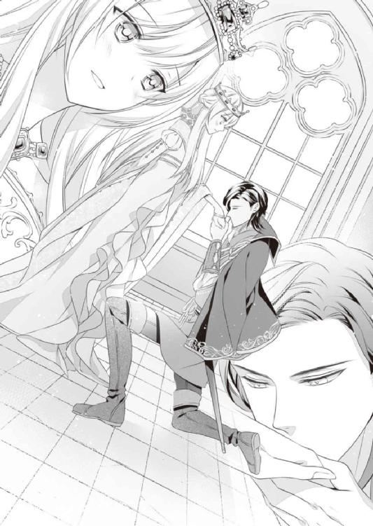
「アーヴィン様......」
「本当はな、三年前、おまえが即位を決めたとき、女王になる道を選ばなければその場で求婚するつもりでいたんだ」
今になって明かされた事実に、オリヴィアは目を丸くするしかない。
予想外という思いをありありと顔に出したオリヴィアに、アーヴィンは小さく噴き出してから続けた。
「いや、女王になっても求婚しようとは考えていたけどな。ただおれが思っていた以上に、おまえが寝る間も惜しんで働き出したから、ああこれは今言ったところで、ふられるか保留にされるかのどっちかだなぁと思ってさ」
求婚の言葉を一度は呑み込み、それからはオリヴィアの負担が少しでも減るように彼も動き出したという。
実際、アーヴィンがオルタレルを初め周辺諸国からの援助を取りつけ、さらには国中を回って視察してくれたおかげで、ボスビアの復興はめざましい勢いで進んでいったのだ。
「この国がある程度安定しないと、おまえはおれのことなんか眼中にも入れないだろうと思ったんでな」
「そ、そんなことありません。わたしだってずっと、アーヴィン様のことを......」
愛していた、と告白するには周囲にひとがいすぎて、オリヴィアは顔を真っ赤にしてもごもごと言いよどむ。
だがオリヴィアの気持ちなど、アーヴィンにはお見通しらしい。
「だからこそ、少しでも早くこの国を復興させたかった。おまえは年々綺麗になっていくし、この頃じゃモーガンどもがそろそろ女王に縁談を......とか言い始めていたからな。おれの気持ちもおまえの気持ちも知っているくせに、だ」
「その割には、お二人ともあまり熱烈な姿を見せてくださらなかったので」
「おまえらが公務の話ばっかりしてくるせいで、二人きりになれる時間がそもそもなかったからだろうが。少しでも二人きりになれればその場で押し倒していたよ」
「ア、アーヴィン様！」
両国の重臣がそろっている場でなんということをとオリヴィアは真っ赤になるが、意外にもオルタレルの人々は嬉しそうな顔をしていた。
「女性に関して淡泊だったあのアーヴィン殿下が、ここまでのことを言うとは」
「本当にボスビアの女王を愛していらっしゃるのでしょうな。これならお子様もすぐにでもできるでしょう」
「お、お子様......!?」
一足飛びと思える言葉まで出てきて、オリヴィアは恥ずかしさのあまり真っ赤になったまま固まってしまう。
「そうそう、さっさと結婚してじゃんじゃん可愛い子を生むがよい。で、ゆくゆくは長男がオルタレルを継ぎ、次男がボスビアを継げば問題はないのではないか？ 両国の絆も深まって大団円であろうて」
「そ、そんな先のお話しまで......！」
オルタレル王がなんとも軽い口調で言ってくるせいで、オリヴィアは慌てる以上になんだか脱力してしまう。
だがニヤニヤ笑っているオルタレル王の言葉を、アーヴィンはもっともな話だとばかりに肯定した。
「実際に悪い話じゃないと思うぞ？ うちの親父は見ての通りピンピンしていて、あと十年や二十年はくたばりそうにない。仮に親父が倒れたとしても、おれには弟が二人いる。どっちも賢いから公務も問題なく引き継げるし、現におれがオルタレルを離れていても、あの二人が政を上手く回しているからまったく問題はない」
「アーヴィンの放蕩癖は今に始まったことではないからな。兄が王位に就いたあともふらふらするであろう可能性を見越して、下の息子らは今やすっかり政を掌握しておる。そのうち王太子位も自分たちにくれと言い出すかもしれないがな」
「おれはそれでも別に構わないけどな。そうすりゃただの王子として、堂々とボスビアの女王に婿入りするのみだ」
「そんな！ アーヴィン様は生まれたときからオルタレルの王太子で、お世継ぎだと決まっていたのでしょう？ それをそんな簡単に......っ」
「それで好きな女と一緒にいられるなら、そっちのほうがいいさ」
実にあっさりと言われ、オリヴィアはあんぐりと口を開けて驚いてしまう。自分が『アーヴィンは王太子の務めを放棄しない』とオルタレル王に訴えたのはなんだったのか。
一方で、立場を捨てても自分と一緒にいたいと告げてくる彼に、不覚にもときめいてしまったのも事実だった。
「まぁ、その辺のことは無事に求婚の返事を得てから考えるのだな」
口ひげを撫でながらオルタレル王がまったり言う。
そういえば、オリヴィアはまだなんの返事もしていない。にわかに焦る彼女に対し、アーヴィンは顔をずいっと寄せて詰め寄ってくる。
「と、いうことだ。どうするオリヴィア。お互いの立場やら務めやら言う前に、おまえがまず求婚を受けるか受けないかをはっきりさせないと話は進まない」
「そ、そんなことを急に言われても......」
「急な話か？ おまえもおれも三年前からお互いを好きだった。おまえだっておれとの結婚を一度も考えなかったわけじゃないだろう？」
「それは......」
図星だけに、オリヴィアはとっさに言い返せなかった。
「結婚しようぜ、オリヴィア。難しいことはいったん脇に置いて、おれと一緒になることを想像してみろよ。間違いなく毎日幸せで楽しいぞ？ どうだ？」
立場や身分、そのほかにもいろいろなことが変わることは必至の結婚なのに、アーヴィンは確信を持って『幸せで楽しくなる』と断言してくる。
彼が言うと不思議とそうなる気がして、オリヴィアも頑なでいられなくなってしまった。
なにより彼との結婚は、それこそ即位する前から心の底で望んできたことで......堂々と求婚された今、躊躇ったところで断るという選択肢は見当たらない。
オリヴィアもまた、彼とともに生きていきたい。
そう思えば、言うべき答えは一つだった。
「......お受けします。わたしもアーヴィン様と結婚したいです」
はっきり口に出した直後、紫の瞳から涙がポロリとこぼれ落ちた。
三年前、彼と結婚するどころか、父と同じくボスビアの王族として処刑されるのだろうと運命を悟ったときの、悲しく痛々しい気持ちが瞬時によみがえってきて──
あのときは、自分が処刑されるのは仕方ないことだと思っていた。
けれど本当は......絶対にあり得ないことと思いながらも、アーヴィンと結ばれて幸せに暮らせればと強く望んでいたのだ。
一度は叶わないとあきらめ、この三年は女王の務めだけに集中して、アーヴィンのことは隣国の王太子としてだけ接してきた。
ずっとずっと封じ込めていた気持ちが一気に溢れてきて、胸がいっぱいになってしまう。
言葉もなく涙を流すオリヴィアを、アーヴィンは強く自分の胸に引き寄せた。
「──そういうことだから、あとはみんな祝い酒で楽しんでくれ。おれたちは下がる」
オリヴィアの泣き顔を隠すために彼女をしっかり抱き込んで、アーヴィンは爽やかに告げる。
誰もそれを引き留めず、むしろ拍手と歓声で送り出した。
「よかった、よかった。ゆっくり語らうがよいぞ」
「語るだけなら構いませんが......。あまり無理をされませんように」
笑顔で送り出すオルタレル王に対し、モーガンはやや厳しい面持ちでアーヴィンに釘を刺す。
無理をするとはどういう意味だろう......？ と思ったオリヴィアだが、アーヴィンとともに晩餐の席をあとにし、女王の私室に入ってすぐに、なんとなく答えを察した。
なにせアーヴィンときたら、出迎えたリリーたちを呼ぶまで近づくなと厳命して追い出した上、寝室に直行するなり、オリヴィアとともに寝台に倒れ込んだのだ。
強く抱き込まれ口づけられて、オリヴィアは慌てて彼の胸をどんどん叩いた。
「あ、アーヴィン様......！」
「まさか拒否しないよな？ こっちは三年もお預け食わされて、いい加減我慢の限界なんだが？」
至近距離でニヤリと微笑まれ、オリヴィアはドキッとしてしまう。
それでなくても髪を撫でつけ正装しているアーヴィンは、いつにも増して素敵なのだ。
彼とふれ合う機会がなくて寂しく思っていたのは確かなだけに、オリヴィアも完全に拒むことはできなかった。
「でも、晩餐会も中途半端なままで......」
「むしろ今戻ったら破談になったのかと疑われるぞ？ ボスビアの重臣たちも、今日くらい羽目を外して朝まで飲んでもいいだろう。ここ三年『金がかかる』を理由に祝い事はいっさいしてこなかったんだ。深酒くらいはそろそろ許してやれ」
臣下に清貧を強いたつもりはなかったが、オリヴィア自身が禁欲的に生活していたので、彼らもそれに倣う形で色々節制していたらしい。今日くらいと言われれば駄目とも言えず、オリヴィアは結局丸め込まれる形になった。
「ん、あ......っ」
合わさった唇の隙間から忍び込んできた舌の熱さに、たちまち意識を持って行かれる。
ぬるつく舌に舌の根をくすぐられ口蓋を舐められ、頬の内側を撫でられると、頭の芯を快感が鋭く突き抜けてたちまち身体が熱くなった。ぴちゃぴちゃと音を立てながら舌を絡めていくと足のあいだが疼き、乳首がツンとドレスの布地を押し上げていく。
この三年、顔を合わせる機会は何度もあったが、事務的なやりとりばかりで恋人のようなふれあいはほとんど持てなかった。お互い忙しく、特にオリヴィアは一分一秒も惜しいとばかりに国の復興に注力してきたから、恋人のような戯れを持つ気持ちにはなかなかなれなかったのだ。
アーヴィンが時折口づけを仕掛けてくることはあったが、人目を盗んだ一瞬のふれあいで終わることがほとんどで、身体を熱くする暇もなかった。
だが彼が自分を隣国の女王というだけでなく、専属娼婦だったときと同じくらいには気にかけてくれているとわかるだけで、オリヴィアはくすぐったくも切ない気持ちに支配された。
そんな夜は、もっと一緒にいたい、またあの頃のように抱いてほしいという気持ちが募って、枕を涙で濡らすこともしょっちゅうだったのだ。
そんな悲しい夜が報われるような口づけに震えるほどの喜びが打ち寄せ、オリヴィアは紫の瞳に涙を溜める。そろそろと彼の首筋に腕を回して抱きつけば、もっと強く抱きつけとばかりに腰をぐっと引き寄せられた。
「脱がせる前に言っておかなきゃな。このドレス、それに髪も、よく似合ってる。いつにも増して美人だ」
マントの留め具を外しながらアーヴィンが耳元で囁いてくる。
オリヴィアは恥じらいに目を泳がせた。
「美人なんて......」
「美人だよ。初めて会ったときはまだまだ幼い感じだったのに、すっかりいい女になった」
思わせぶりに胸元に手を這わされ、オリヴィアはさっと頬を染める。アーヴィンは笑いながら彼女のマントを外し、飾り帯を引っ張った。
帯に挟んでいた白い花がぽとりと落ちる。アーヴィンは帯ごとそれを枕の横に置いて、オリヴィアの髪に飾ってあった花も一つずつ丁寧に抜いていった。
髪を留めていたピンも抜かれて、滑らかな銀髪が滝のように流れ落ちる。一房手に取ったアーヴィンは毛先に恭しく口づけた。
「やっとおまえを抱ける......。今夜は覚悟しろよ。なにしろ三年分の思いが詰まっているからな」
指先で頬を撫でられドキドキが止まらなくなる。
嬉しいけれど、久しぶりだからかひどく恥ずかしい。それに少し怖い気もする。
だがそれを上回る期待感も確かにあって、オリヴィアは胸元できゅっと手を握った。
「アーヴィン様......んっ......」
頬を大きな手で包まれ再び口づけられる。上唇と下唇を柔らかく食んでから深く口づけられて、オリヴィアはたちまち陶然となった。
アーヴィンは手をオリヴィアの首筋から胸元へ這わして、大きく空いたデコルテを撫でる。
浮き出た鎖骨を指先でたどられ、オリヴィアが細い肩を跳ね上げると、なだめるように二の腕を撫でてきた。
ただ撫でられているだけなのに、その先を期待して身体はどんどん昂ぶっていく。オリヴィアがかすかに身体を揺すると、アーヴィンは待っていたとばかりに彼女の身体からローブを脱がせた。
背中に手を入れられ、下衣を留めている紐を引っ張られる。身体の締めつけがなくなりほっと息をついた途端、肌着ごと剥ぎ取られてしまった。
「ここもすっかり育ったな」
形よく盛り上がる乳房に頬を埋めて、アーヴィンが小さく笑う。かつて彼と身体を重ねていたときは小ぶりで恥ずかしいと思っていたが、人並みになっても恥ずかしいものは恥ずかしいらしい。
「あ、あんまり見ないで......」
「無理だ。いじらしく乳首まで勃たせてるんだ。じっくり見て、味わっていかないと」
「あんっ......」
膨らみを優しく包まれ、すでに凝った乳首にちゅっとキスされて、オリヴィアはびくんと肩を震わせる。アーヴィンは楽しげに目を細め、左の乳首を乳輪ごと口に含んだ。
「ひっ、あぁあん......！」
口腔の温かさが伝わるだけで、淫らな衝動が押し寄せ背が反り返ってしまう。
唾液を纏った舌で乳首をぬるりと舐められた瞬間、声が漏れるのを抑えられなくなって、オリヴィアはアーヴィンの上着をぎゅっと握った。
「感度がいいのは変わらないな。......いや、むしろそっちも増したか？」
「そこで、しゃべらな......っ、あンン......っ」
乳輪に軽く歯を立てられ、きつく吸い上げられて、オリヴィアはなにも言えなくなる。
アーヴィンは一度乳首から唇を離し、両手で膨らみをゆっくりこね回す。手の平でその柔らかさを堪能しながら、オリヴィアの耳元や首筋、肩や胸元にキスを落とし、時折強く吸い上げた。
「は、ぁぁ......っ」
ちゅうっと音が鳴るほどきつく肌を吸われて、ツキンとした痛みにオリヴィアは唇を震わせてしまう。痛みが走った場所に彼に愛された証が咲いたのだろうと思うと、恥ずかしさより嬉しさが勝って、紫の瞳にうれし涙が滲んだ。
「アーヴィ、さま......っ、んあっ......」
再び乳首を舐められビクビク震えながら、オリヴィアは彼の上着を引っ張り精一杯思いを伝える。
オリヴィアの言いたいことを正しく受け取ったのだろう。一度身体を起こしたアーヴィンはすぐに上着を脱ぎ捨て、タイも引きちぎるように剥ぎ取り床に落とした。
シャツを脱いでしまえば鍛え上げられた男の肉体が露わになる。筋肉で盛り上がった胸板や広い肩に惚れ惚れしながら、オリヴィアはわずかに身を起こして彼の鎖骨あたりに口づけた。
アーヴィンがオリヴィアの髪を掻き上げながら、もっと強く吸え、と囁いてくる。恥ずかしさにクラクラしながら、オリヴィアは求められるまま彼の肌をきつく吸い上げた。
そっと見てみれば、彼の肌にもうっすらとだが赤い花が咲いている。
恥ずかしさのあまり顔から火が出そうだが、背徳的な喜びも感じて、オリヴィアはぎゅっと彼の胸に抱きついた。
「可愛いことをするな。耳まで真っ赤になってる」
「言わないで......！」
「もっとつけてもいいんだぞ？」
オリヴィアはぷるぷると首を横に振った。
「つけるより......つけてほしい、の......」
「......本当に可愛いな。食べたくなる」
かすれた声で囁かれて、そこに宿る色香にぞくぞくしてしまう。身体を敷布に倒され、再び唇を貪られながら両方に乳首を指先でいじられて、オリヴィアはくぐもった声を漏らした。
「んっ、ぅンン......っ！ いあ、あ......っ」
「声も可愛い」
「ひぅ、んっ......」
くりくりといじられていた乳首を少し強めに引っ張られて、ジンとした疼きが身体の奥へと走り抜ける。足のあいだがじんわり潤う気配があって、オリヴィアはきつく目をつむった。
オリヴィアが下肢をもぞもぞさせているのに気づいているだろうに、アーヴィンはしばらく彼女の胸や二の腕ばかりなぞって、なかなかその下へふれようとしなかった。
首筋に唇を這わされ、耳孔に舌先を挿れられチロチロと音を立てて動かされると、もどかしさが募ってたまらなくなる。
「アーヴィン、さま......っ」
これ以上焦らさないでと訴えるつもりで、下肢をほんの少し浮かせて彼の足にふれようとする。
だが思いがけずアーヴィンの中心にふれてしまって、オリヴィアはびくっと震えた。布越しでもアーヴィンのそこがすっかり勃ち上がって硬くなっているのがわかったのだ。
「なんだ、もう挿れてほしくなったのか？」
「あんっ......！」
腰をぐっと押しつけられ、オリヴィアは伝わってくる熱さに思わず声を上げる。熱さと硬さを感じただけでふれられてもいない蜜口がヒクヒクとうごめき、内壁がきゅっと締まるのがはっきりわかった。
積もりに積もった飢餓感も一気に膨れ上がって、オリヴィアは思わず彼の屹立に秘所を押しつけてしまう。恥じらいを捨てて足を開き、もっと強くふれようとすると、アーヴィンはすぐさま脚衣に手をかけた。
下履きごと衣服を脱ぎ捨てすっかり全裸になった彼は、オリヴィアの腰元にわだかまっていたドレスも荒々しく剥ぎ取る。オリヴィアもまた一糸纏わぬ姿になって、アーヴィンの汗ばんだ肌に抱きついた。
どちらともなく唇を重ね、すきまなく肌を沿わせる。熱く滾った肉棒が秘所に押しつけられて、オリヴィアは夢中で腰を揺すった。
肌着をぐっしょり濡らすほどだった秘所は、肉棒が擦れるだけでぬちゅぬちゅと卑猥な水音を立てる。肉棒の根元が感じやすい花芯を擦るのがたまらなく気持ちよくて、オリヴィアは夢中になって腰を振り立てた。
「ふあっ、あぁ、あむ......っ、ん、ンン、ンぅ......！」
「......っ、はぁ、オリヴィア......っ」
淫らな欲求をぶつけてくるオリヴィアにアーヴィンも煽られた様子で、彼女の唇を貪りながら腰を動かしてくる。太い腕できつく抱き寄せられ、背中から臀部へ降りた手が尻肉を掴むのを感じると、オリヴィアの中で官能がどんどん高まった。
「はっ、あぁ、だめ......っ、あっ、あぁっ、いあぁあああ......ッ!!」
ふれられたところから快感が膨らんで、あっという間に限界を超える。下腹の奥でくすぶった愉悦が体中を駆け抜けて、襲ってきた絶頂にオリヴィアはガクガクと身体を震わせた。
「あ、はあ、はあっ......」
「素股だけでイくとは......。おまえもそうとう飢えていたみたいだな」
笑い混じりに言われるが、アーヴィンの眉間には皺が寄っている。彼のほうは欲望をこらえているから少しつらいのかもしれない。
「アー、ヴィンさま......、もう、きて......？」
「魅力的なお誘いだがな。久しぶりだ、きちんとほぐさないと」
「あぁああん......！」
蜜まみれでヒクつく蜜口にするりと指を差し入れられ、オリヴィアはびくびくっと腰を跳ね上げる。久しぶりと言いながら、アーヴィンは最初から指を二本も差し入れていた。
「ひ、あぁあっ、そこ......だめ、撫でちゃ......あぁああん！」
「相変わらずここが弱いな。ん？」
「ひうぅぅ......っ」
花芯の裏のざらついたところを指の腹で擦られて、湧き上がる愉悦に背が弓なりにしなる。
ぐちゅぐちゅと音を立てて指を動かされるだけでもつらいのに、すっかり充血した花芯に吸いつかれてはひとたまりもなかった。
「っう、ぁあああ──......ッ！ い、あ、やぁああ、っ、あぁあっ！」
ちゅうっと音を立てて花芯を吸われ、感じやすいところを指で擦られ、オリヴィアはあえなく二度目の絶頂に突き落とされる。きゅうっと丸まった足先が敷布を滑り、オリヴィアの震えに合わせて銀の髪が緩やかに波打った。
短いあいだに二度も絶頂して息も絶え絶えなのに、アーヴィンは動きを止めない。
蜜口から指を抜いたと思ったら今度はそこに舌を差し入れ、溢れ出す蜜を音を立てて舐め取っていく。花芯に歯を立てられ、膝頭を思わせぶりに手の平で撫でられ、オリヴィアは為す術もなく小さな絶頂を繰り返した。
全身が性感帯と成り果てて、脇腹やふくらはぎを撫でられただけで、面白いほど身体が跳ねてしまう。ようやくアーヴィンが身体を起こしたときには、オリヴィアは感じすぎてしまうあまりすすり泣いていた。
「も......、もぅ、いやぁ......っ」
「ああ、泣くなって。悪い、やりすぎた」
さすがのアーヴィンも慌てた様子で、オリヴィアの頬や額に口づけ、その背を優しく撫でた。
「おまえがあんまり可愛く喘ぐもんだから夢中になって。悪かったよ」
「もう......アーヴィンさまの、ばかぁ......っ」
「......怒られているのに不謹慎だと思うが、鼻声でそう言うのも可愛いな」
「ばかぁっ！」
オリヴィアは思わずアーヴィンの胸板を拳で叩いた。とはいえ立て続けに絶頂を味わったあとだ。力はほとんど入っていない。
涙で赤くなった目元をぐしぐしと拭って、オリヴィアはそっとアーヴィンを見上げる。
「アーヴィン様、もう、挿れて......？ 早く繋がりたいの。気持ちいいばかりじゃおかしくなりそう......」
「おれもだ。挿れただけでイきそうになってる」
「きて......」
震える足を開いて、オリヴィアは必死にお願いする。指では届かない奥のほうがひどく疼いて、満たされたくて仕方なかった。
びっしりと汗を掻いたアーヴィンももう堪えられない様子で、自身の肉棒に手を添え、オリヴィアの蜜口に亀頭を合わせる。
「オリヴィア......、愛してる」
恭しく囁いて、アーヴィンはオリヴィアの唇を奪う。それと同時に腰をぐっと進めてきた。
「んぅっ、ンン──ッ......!!」
待ち望んでいた質量が最奥まで一気に挿入り込んで、快感がぶわっと膨れ上がる。膣壁が激しくうねり雄芯に吸いついた途端、アーヴィンも低くうめいて欲望を解放した。
熱い飛沫がドッと奥に注ぎ込まれる。下腹の奥にじんわり広がる白濁にも、ビクビクと震える肉棒にも興奮して、オリヴィアもまた絶頂へ飛んだ。頭の中が真っ白になって、体中がガクガクと激しく震えてしまう。
あまりに深い絶頂にふっと意識が飛びそうになるが、アーヴィンが激しく腰を前後させてきて、無理やり現実に引き戻された。
「......あっ、うあぁ、あっ、ひっ......あぁあああぁ──ッ......!!」
「っ、駄目だ、止まらねぇ......、よすぎる......！」
がつがつと腰を打ちつけながら、アーヴィンがかすれた声で呟く。
まだ絶頂から抜けきらないオリヴィアは、腰を打ちつけられるたびに、目の前がチカチカするほどの快感に呑まれた。開きっぱなしの唇からは艶やかな嬌声が絶え間なく漏れ、下肢から響く水音と相まって官能的な雰囲気をいっそう高めていく。
アーヴィンはたまらない様子でオリヴィアに口づけながら、彼女の細い身体をぐっと抱き起こし、あぐらを掻いた自分の上に座らせた。
彼の肉棒が真下からずんずん突き上げてきて、オリヴィアはあまりの気持ちよさに喉を反らしてすすり泣く。
「ひ、あぁ、アーヴィン......っ、あ、あぁあ、いい......、いいのぉ、気持ちいい......！」
「おれもだ、オリヴィア。最高に気持ちいい。何度でもイけそうだ......っ」
「あンンッ！ ひあ、あぁあ、あんっ！ ......あぁ、また、イ......──あぁあああッ!!」
「っ......」
再びアーヴィンが吐精し、オリヴィアは彼の肩にしがみついて言葉もなくガクガクと震える。
快感に支配された蜜壺は貪欲に彼の精を絞り取り、もっと寄越せとばかりに激しくうねった。
「アー、ヴィ......、あぁあん......っ」
再び仰向けに寝かされたと思ったら、繋がったまま身体をくるりと返され、オリヴィアは敷布にぺたりとうつ伏せになる。その状態で腰だけ高く上げられ、今度は後背位から激しく攻められた。
艶やかな唇の端から唾液がこぼれ落ちるのを止めることもできず、大きな手で乳房を揉まれ、悪戯な指先で花芯をいじられ、オリヴィアはたまらず艶声を上げる。
三年分の空白を埋めるように、濃密なふれあいは空が白み始めるまで続けられた。
様々な体位で交わり息も絶え絶えになったオリヴィアだが、愛するひとのぬくもりを抱いて眠る幸せは、これまでの寂しさをすべて埋めてくれた。
窓の向こうの空が黎明に染まるのを夢うつつに見ながら、ようやく自分の心にも夜明けがきたのだと実感したのだった。

その後、改めてオリヴィアとアーヴィンの結婚後の生活について、両国の重臣も交えて話し合いがもたれた。
ボスビアはまだまだ復興途上で、貧しい民も多い中だ。オリヴィア以外の王族がいないことを考えても、彼女がボスビアを長く離れることは難しい。
ということで、しばらくはアーヴィンがボスビアに腰を落ち着ける形になった。
だが王太子としての務めや、国家的な行事があるときにはオリヴィアを妃として伴い、オルタレルへ戻ること。もしオルタレル王が急逝することがあれば、速やかに祖国に戻り王位に就くことが取り決められた。
アーヴィン自身は王太子位を弟に譲っても構わないと言ったが、当の弟王子たちがそれを固辞した。
自分たちはあくまで裏方として働くのが好きで、派手な国家行事などはアーヴィンのほうが適している。それにアーヴィンは軍人から多大な支持を集めているので、有事の際は引き続き彼に総指揮官として出兵してもらう予定だ。そのためには王太子の位に就いていたほうがなにかとやりやすいだろう、ということだった。
オリヴィアたちのあいだに子供が生まれた場合、第一王子はある程度の年頃になったらオルタレルへ居を移し、そこで世継ぎとしての教育を受けることも決定された。
子供と早いうちに離れることになるのかと思うと寂しいが、なにかしらの行事のときはオリヴィアもオルタレルに向かうのだ。案外顔を合わせる機会は多いかもしれない。
他の王子や王女に関してはボスビアで育てるのもよし、オルタレルへこさせるのもよし、またその時々で考えていけばいいとオルタレル王に言われ、オリヴィアたちはありがたくその提案を受け入れることにした。
そして肝心の結婚式は、晩餐会から約半年後になる翌年の春に決定した。
本当はもう少し時間をおいて、一年後か、さらに先のオリヴィアの即位五年目の節目などに行うべきではないかと議論されていたが──
「お子様のほうが待ちきれずにやってきてしまったのだから、早まるのは仕方ないことですよねぇ。なんともおめでたいことです」
オリヴィアのドレスを整えながら、リリーがしみじみ囁く。回りの侍女たちもしたり顔で頷くので、オリヴィアは恥ずかしさとちょっとの気まずさで小さくなるばかりだった。
アーヴィンと結婚することになり、喜んだのも束の間、オリヴィアはひどい体調不良に陥り、公務をこなすのも難しくなった。
話を聞いたアーヴィンは一度帰国したもののすぐに舞い戻ってきて、オルタレルから医者を呼ぼうとしたりして一時騒然となったのだ。
結局は病気ではなく、妊娠の初期症状であるつわりであったことがわかったわけだが、そうなると今度は結婚式をどうするかで揉めに揉めた。
出産後落ち着いてからという意見もあったが、やはりお腹が大きくなる前がいいだろうということで、急遽雪が溶けた頃に決定したのだ。
それから今日までの時間は、まるで矢のように過ぎていった。
女王の結婚式は、オリヴィアが即位してから初めての大規模な国家行事になる。国内外の賓客も集まる晴れの日だけに、城中が......いや、国中が準備に奔走した。
国賓のために街道の整備が大急ぎで進められ、建設中の橋や壊れた神殿の修理なども方々で進められた。この国が復興していることを国外に印象づけるためにあちこちが整備され、町並みはたちまち美しく整えられた。
城内に至ってはアーヴィンの部屋のほかに子供部屋も作られることになり、改装に大忙しだった。日常の公務はつわりに苦しむオリヴィアに変わりアーヴィンが代行し、結婚式の式次第や招待客の厳選なども並行して進められた。
目の回るような忙しさがずっと続いたが、誰もがそんな日々を歓迎した。
即位してからのオリヴィアが、ボスビアのために一心不乱に務めていたことはこの国の誰もが知っている。その彼女が幸せを掴むのだ。誰が文句を言えるだろう。
ましてそのお腹にはすでに子供まで宿っているのだ！ めでたいこと続きで、その冬は雪をも溶かす熱気がボスビア中を包んでいた。
「ご結婚が決まったその日に励んだ結果でしょうねぇ。ほんとうにおめでとうございます、オリヴィア様！」
「リリーったら、もう......。冷やかすのはもうよしてちょうだい」
ぷっと頬を膨らませるオリヴィアに、リリーは笑いながら「はいはい」と頷く。
小さな身体でよいしょよいしょと姿見を押してきたリアネは、オリヴィアの花嫁姿を見て歓声を上げた。
「とってもきれいだわ、オリヴィア様！ 花嫁さんのドレス、すごくすてき......！」
「ありがとう、リアネ。お腹もあまり目立たないようにしてもらえてよかったわ」
この頃膨らみが目立つようになった腹部を撫でて、オリヴィアはほっと息をついた。
寒い冬が過ぎ、春の花々が庭を埋め尽くすようになった今日、オリヴィアは晴れてアーヴィンとの結婚式を迎える。
久々の慶事に国民たちもすっかりお祝いムードで、三日も前からあちこちで祝杯が上がっているようだ。
かつては飢えに苦しんだ民が、今は祝酒を手にあちこちで乾杯していると思うと、オリヴィアは喜び以上に胸がジーンとしてしまう。復興に当たっての政策はほとんどが臣下たちの手によるものだが、自分もその一助となれたのならこれほど嬉しいことはない。
感慨に浸っているとノックの音が響き、侍女たちが答えるより先に扉がぱっと開く。
女王の部屋に断りなく入れるのは一人だけだ。それでもリリーはきつく眉根を寄せて、入ってきたアーヴィンを睨みつけた。
「女王陛下はお召し替え中です。せめてわたしどもがいいと言ってからお入りください！」
「悪かったな。愛しの女王陛下の晴れ姿をすぐにでも見たかっ、た......」
いつも通りの軽口を叩いていたアーヴィンは、いざオリヴィアを目にした途端、青い瞳を大きく見開いたまま固まってしまった。
「......やっぱり、おかしいですか？ お腹が出ても目立たないように、胸の下に切り替えのあるドレスにしたのですが」
「......いや、おかしくはない。むしろ逆だ。あんまり綺麗なんで驚いたんだ」
心配そうに顔を曇らせたオリヴィアを見て、アーヴィンがひどく慌てた様子で弁明してくる。
今一度オリヴィアを頭からつま先まで見やった彼は、ため息交じりに「綺麗だ」と呟いた。
装いを褒められるのは初めてのことではないが、これほどまじまじと見つめられるのは初めてで、オリヴィアもなんだか照れくさくなった。
贅をこらした花嫁衣装は流行のスカートを膨らませたものではなく、胸のすぐ下に切り替えがあり、うしろ裾を長く引くデザインだった。高価な絹で作られたドレスは、少し動くだけで肌の上をさらさら滑り美しい光沢を放っている。
ドレスの切り替え部分には大粒の真珠が連なり、長いスカートにも小粒真珠がいくつも縫いつけられていた。露わになったデコルテを飾る首飾りも真珠だ。山に近い内陸のこの国では、海で採れる真珠は最上の宝石と位置づけられている。
こういった式典のときはきつく結い上げる髪は、花嫁が妊娠中であることを考慮して、緩やかな三つ編みに仕上げられていた。その髪にも真珠を連ねた絹糸を編み込んである。
雪のように軽やかなヴェールを被れば、ふんわり膨らんだ腹部と相まって、慈愛を司る女神もかくやという美しさだった。
「ありがとうございます......。その、アーヴィン様もとても素敵です。藍色の衣装がとても似合うわ」
アーヴィンの瞳の色より少し濃い藍色地の衣装は、金の飾緒や勲章を引き立たせて、とても高貴な印象を与える。緋色のマントと黒の靴もよく似合っていて、美しく整えられた黒髪も素敵なだけにぽうっと見惚れてしまった。
「まだ少しお時間がありますから、お二人ともお茶などいかがですか？」
気を利かせたリリーがそう薦めてくる。
その声にハッと我に返ったアーヴィンは、なにかを思い出した様子で「ああ、そうだった」と口を開いた。
「神殿に行く前にちょっと寄りたいところができたんでな。準備ができているなら一緒に行きたいんだが、いいか？」
「わたしは構いませんけれど......」
リリーに目配せすると、侍女たちは心得た様子で頭を下げた。
「ではわたしどもは先に神殿へ向かっておりますので」
「悪いな。用事はすぐ済むから」
そしてアーヴィンはオリヴィアの手を引いて廊下に出る。どこへ連れて行かれるのだろうと思いながらも、彼について階段を降り、庭へ続く道へ出た。
「庭に出るのですか？」
「ああ。こっちだ」
アーヴィンが歩いて行くほうには、オリヴィアがかつて暮らした離れに続く道がある。
細い道である上、木々が巧みに配置されているので、あらかじめそこに道があると知らなければ見過ごされてしまうような場所だ。
離れには女王になってから一度か二度しか立ち入っていない。母の墓には毎日花を供えるように言ってあるが、即位してから忙しすぎて、自分ではなかなか墓参りもできずにいたのだ。
と、離れへの道に入る前で、アーヴィンはオリヴィアの手を引いて脇に逸れる。
なにがあるのだろうと思って見てみれば、そこにはいつの間にか小さな石碑が建てられていた。
「これは......」
木陰にひっそりとたたずむ石碑には女神の像が彫られている。その下にはオリヴィアの母である前王妃の名が刻まれていた。
「アーヴィン様、これ......！」
「おれから花嫁への贈り物だ。おまえの母親の墓、予算がないからって言って、結局建て直してこなかっただろう？」
オリヴィアは驚きに目を瞠ったままこくこくと頷く。
いずれは母の墓を新しくしてきちんと弔いをしたいと考えていたが、他国からの援助金はすべて国の復興へ回していたため、こちらに予算を割けなかったのだ。
母も民の生活を犠牲にしてまで墓の建て直しを望んではいないだろうと思って、今日までそのままにしていたけれど......まさかアーヴィンがこんな立派な墓を建てていてくれたなんて！
「一応王家の墓所にも新しく墓を建てさせたが、王妃として遇された期間が短いし、故人本人もそっちには入りたくないだろうなと思ってな。こっちにも墓を作ったんだ。ここなら女王の部屋からも近いし、庭に息抜きに出たときに花を供えるくらいできるだろう？」
オリヴィアは何度も何度も頷く。胸がいっぱいで言葉が出なかったのだ。喜びが次から次へと湧き上がり、涙となって溢れそうになる。
何度も瞬きして必死に涙を抑えながら、オリヴィアはアーヴィンの胴に腕を回しぎゅっと抱きついた。
「ありがとう、アーヴィン様。本当にありがとう......！」
「三年越し......いや、もう四年越しになるか。ようやくおまえの望みが叶ったな」
その言葉に、オリヴィアはとうとう涙を溢れさせてしまう。
すべては、父に母の墓を建て直してやると言われ、戦場に送られたことが始まりだった。
あれからもうすぐ四年。あのときはなにも為さないまま、離れで一人朽ち果てて死ぬばかりだと思っていたのに......
今は自分のことを愛し支えてくれる夫がいて、お腹にはそのひととの愛の結晶である子供が宿っている。モーガンを初め多くの臣下に支えられ、リリーやリアネを初めとする侍女たちに恵まれ、本当に充実した毎日を送っていた。
あの頃の自分には思い描くことすらできなかった幸せが、確かにこの手の中にある。
そのすべてが奇跡のように素晴らしいことに思えて、オリヴィアは嬉し泣きが止められなくなってしまった。
「あーあ、これじゃ化粧のやり直しだな。おれがリリーに怒られる」
「だって......こんな素敵な贈り物をいただいたら、泣いてしまうに決まっているわ」
「そうだな。だが、やっぱり、式の前に知らせたかったんだ。おれもおまえの夫として、おまえの母上に挨拶したかったからさ」
その言葉にまた泣きそうになりながらも、オリヴィアは必死に涙を拭った。
「そうですね......。──お母様、ご紹介します。わたしの旦那様になる、オルタレル王太子のアーヴィン殿下です」
母の名が刻まれた墓石に向かい、オリヴィアはそう紹介した。
「お腹には彼との子供もいます。お母様にとっては孫ですね。今からわたし、アーヴィン様と結婚式を挙げるんです。新しい家族になるんです──」
最期までオリヴィアのことを気にかけてくれた母の顔がよみがえる。あのときはただ心配しないでと答えることしかできなかったけれど......
「お母様と暮らしているときもとても幸せだったけれど、今も新しい家族に囲まれて、たくさんの友人や助けてくれるひとに恵まれて......、わたし、本当に本当に幸せなんです。だから、どうか安心して眠ってくださいね。わたしのことはもう心配いりませんから」
母を求める気持ちは変わらずあるけれど、当時抱いた虚無感はもうどこにもない。
母が亡くなってからの二年間は、心の中にぽっかりと穴が空いたまま、ただ時間が流れていくことだけを感じていた。
心が麻痺して、自分が孤独であることも意識できないほどになっていたが、もうあの頃のうしろ向きな気持ちは胸の中のどこにもない。
今はただただ、夫となるアーヴィンと生まれてくる子供との未来が楽しみで嬉しくて仕方ないのだ。
今の自分を見れば、きっと母も安心して眠りにつくことができるだろう。
「オリヴィアにはおれがついています。立場上、いろんなことがあると思いますが、彼女を悲しませることは決してしません。安心して、これからも見守ってくださるとありがたいです。母上」
オリヴィアの肩を抱いて、アーヴィンも笑顔で母に語りかける。オリヴィアは感謝の気持ちを込めて、もう一度アーヴィンに抱きついた。
「......さて、そろそろ神殿に行かないとな。化粧を直す時間も必要だ」
しばらく抱き合ってから、アーヴィンが促してくる。オリヴィアも頷き、母の墓に「またきます」と挨拶して歩き始めた。
「疲れていないか？ 神殿まで抱いていってもいいんだぞ？」
「大丈夫です。病気ではないし、そんなに過保護にならなくても平気です」
「過保護にもなるさ。こんな美人を嫁にするんだから......。常に抱きしめておかないと、羽が生えて空へ飛んでいっちまいそうだし」
「アーヴィン様ったら」
「本当だぞ。本当に、天使か女神みたいに綺麗なんだから」
オリヴィアの腰をそっと抱き寄せ、額に口づけながら、アーヴィンはオリヴィアにだけ聞こえる声で囁いた。
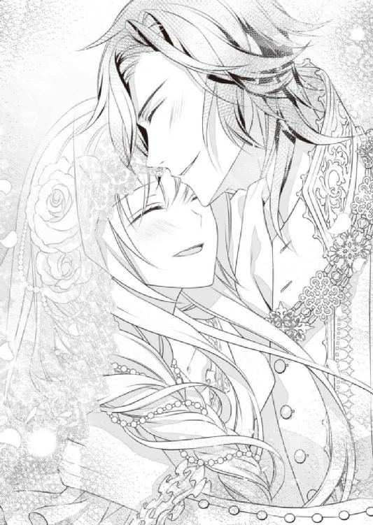
「おまえのその花嫁姿にも誓うよ。おれは絶対、おまえを幸せにする。......どちらかと言えば、おまえはこれまで苦労ばっかりの人生だっただろ？」
「そんなことはないです。少なくとも、あなたに出会ってからはずっと幸せ」
「なら、今日からはそれ以上に幸せにしてやる」
そう言ってくれる伴侶を得たことが、すでに身に余る幸せなのだと思いながら、オリヴィアは頬を染めて頷く。
そして彼女もまた、夫にだけ聞こえる声で囁いた。
「わたしも、あなたを幸せにしたいです。この国の民のことも、今まで以上に幸せに。だって、わたしが愛する人たちが幸せでいてくれることが、わたしの幸せだから」
オリヴィアらしいな、とアーヴィンは愛しげに微笑む。
神殿の控え室にはすでに侍女たちが待っていた。泣き腫らしたオリヴィアの顔を見るなり、いったいなにを言ったのだとリリーがアーヴィンを叱り始める。
それにふふっと笑いながら、化粧を直してもらったオリヴィアはヴェールを被った。真っ白な薔薇を集められたブーケを手に、神殿の扉の前に立つ。
やがて荘厳な音楽とともに、神殿の扉が左右にゆっくり開かれていった。
先に待っているアーヴィンが、祭壇の前でオリヴィアを振り返り晴れやかに笑う。
オリヴィアも幸せに満ちた笑みを浮かべて、愛しい夫のもとへゆっくり一歩を踏み出した。
結婚の誓いが立てられ、幸せが末永く続くようにという祈りの言葉とともに祝福の鐘が鳴らされる。
鐘の音は高らかに響き渡り、王都に集う民にも成婚の報せが届けられた。
愛する女王の結婚に国中が歓喜の声を上げ、誰も彼もが我がことのように喜び、乾杯し、踊り始める。
雪が溶け、色とりどりの美しい花が咲き始めるこの季節──
王国は最も美しく、輝かしい日々を迎えようとしていた。
あとがき
こんにちは。もしくは、はじめまして。佐倉紫と申します。
このたびは本作をお手にとっていただきありがとうございます。
大変ありがたいことに、ロイヤルキス文庫様から二作目を出させていただく運びとなりました。再びお声をかけていただき本当に嬉しく思っております。ありがとうございました。
今回のお話はちょっとだけ魔法要素が入ったファンタジー・ラブロマンスです。
ヒロインのオリヴィアは十五歳。このジャンルでは少し幼い年齢ですね。
ですが現実の世界においても『十五歳』って、受験があったり社会に出たり、人生における一つの分岐点を迎える年齢です。今回のヒロインも作中で何度か、今後自分が歩いて行く道を選択していくことになるので、あえてこの年齢に設定しました。
そんなヒロインの選択を助けていくのが、ヒーローのアーヴィンになります。俺様口調でとても偉そうなのですが、その実とてもおおらかで寛大なヒーローとなっております。
当初は敵同士として出会う二人ですが、途中からは同志のような関係にもなり、愛を深めつつ共闘したりもするという......こう書き出してみると割と忙しいカップルですね。
中盤でヒロインが自分の暗い運命を覚悟するところがあるのですが、ヒーローはヒロインを大切にすることしか考えていないので、彼女の苦悩など露知らず。後日ヒロインから今後のことについて相談されたときには、本当にびっくりしたと思います（笑）
最後はもちろんハッピーエンド。ヒロインが成長する物語が大好きな作者なので、書き上げた瞬間はとても充足感がありました。
お読みいただいた方々も、少しでも幸せな気持ちになっていただけたらと願うばかりです。
またイラストは今回も蘭蒼史先生に担当していただきました。
前回もとても繊細で美しいイラストを描いていただき感動しきりでしたが、また一緒にお仕事できて大変嬉しく思っております。お忙しい中、本当にありがとうございました！
担当様を初めとする編集、出版関係の皆様にも大変お世話になりました。
一番の感謝は本作をお手にとってくださった読者の皆様に。初めての方もそうでない方も本当にありがとうございます。少しでも楽しんでいただけますように。
またいつかお目にかかる日を願いつつ、今後も精進していきます。
「求婚の朝」
重たいカーテンの隙間から朝日が差し込んでくる。まぶしい光に誘われて、深く眠っていたオリヴィアはゆっくりまぶたを押し上げた。
「あ......もう朝......」
呟いた声は少しかすれていて、身体も重たい。
というより、なんだか少し身じろぐのも大変なのだが......まるでうしろから拘束されているような。
そう考えたとき、耳元でくすくすと笑う声が聞こえてきた。
「おはよう。おれの女王陛下」
艶を帯びた声で挨拶されて、オリヴィアは驚きのあまり「きゃっ！」と悲鳴を上げた。
「あ、アーヴィンさま......!?」
驚いたことに、オリヴィアはアーヴィンにうしろから抱えられる体勢で横になっていた。
おまけに二人とも裸である。素肌が密着していることに気づいたオリヴィアは再び悲鳴を上げた。
「よく寝ていたな。どうせ晩餐会の準備のために連日寝不足でいたんだろう？ うちの親父ごとき、そこまで歓待してやる必要ないのに」
「えっ、あ、晩餐会......？」
驚きのあまり混乱をきたしていたオリヴィアは、その言葉でハッと状況を思い出した。
そうだ、昨日はオルタレルの国王陛下を初めて迎える晩餐会があったのだ。
オルタレル王は終始不機嫌で、おまけに無理難題をふっかけてくるから、あわや一触即発の状態になったが、そこにアーヴィンがやってきて......
「思い出したか？」
頬を赤らめ黙り込んだオリヴィアに、アーヴィンがニヤニヤ問いかけてくる。
オリヴィアはゆっくり頷いた。
そう、遅れてやってきたアーヴィンは父王の非礼を説明したあと、オリヴィアの前に膝をついて求婚してきたのだ。オリヴィアはうれし涙を流しながら頷いた。
そしてその後、すぐに寝室に連れて行かれて──
「三年ぶりの熱い夜だったな、オリヴィア？」
「は、恥ずかしい言い方をしないで......っ」
事実とは言え、はっきり言われると恥ずかしくて、身をよじったオリヴィアはアーヴィンの胸を拳でぽかぽか叩いた。
アーヴィンは楽しげに笑い、オリヴィアを優しく組み伏せる。うつ伏せになったオリヴィアは大きな手で乳房をすくわれ、ぎょっと目を見開いた。
「ま、まさか、またするの......？」
「当たり前だ。なにせ三年も我慢してたんだからな。一夜だけじゃとても足りない」
「そんな......あぁん、待って......っ」
もうすぐリリーたち侍女が起こしにくる時間だ。
なのにアーヴィンは愛撫にいっそう熱を込める。
「侍女たちも求婚について聞かされているはずだ。起こしにくるなんて野暮な真似しないだろう」
「あ、だめ、挟んじゃ......ンン......っ」
閉じさせられた太腿のあいだに、アーヴィンの肉棒が入り込んでくる。夕べも散々吐精したはずの男根は熱く怒張し、準備万端の様子だった。
反り返った竿部で秘所を擦られると、オリヴィアもたちまち反応してしまう。散々喘がされた身体は快楽の余韻に満ちていて、刺激を与えられればあっという間に濡れてしまうのだ。
「は、あぁん......、だめ......」
「『いい』の間違いだろ？ ちょっと擦っただけで、ほら、もう蜜が溢れてきた」
「言わな、で......。ンン、ふぁ......はぁあん......っ」
ぬちゅぬちゅという水音が耳について、オリヴィアは恥ずかしくてたまらなくなる。
だが羞恥が高まるほど興奮も増して、いつの間にか彼女の細腰も揺れ始めていた。
「あん、もう......ひあぁあう......ッ！」
達してしまいそう、と思った直後、丸い亀頭が蜜壺にずぶりと挿ってきた。
オリヴィアは背筋を突っ張らせて嬌声を上げる。膣壁がきゅうっと収縮して、男根を締めつけた。
「挿れただけでイったのか？ 可愛いな」
「ん......っ、もぅ、意地悪なこと言わないで......」
「事実だから仕方がない」
アーヴィンはオリヴィアの腰を抱え直すと、剛直を緩やかに抜き差ししてくる。濡れ襞をゆっくり擦り上げられると、気持ちよさともどかしさが一緒になってせり上がって、オリヴィアは為す術もなくゾクゾクと背筋を震わせた。
「いあ、あぁ......ふぁ、あんっ......」
うしろから乳房をすくい上げられ、すっかり凝った乳首を手の平で転がされる。耳のうしろを舐め上げられ、うなじに軽く歯を立てられると、男根を咥える膣壁がきゅんきゅん締まるのがはっきりわかった。──恥ずかしすぎる。
「ア、アーヴィ......、もう......焦らさないで......っ」
「焦らしているつもりはないが？ 気持ちいいだろう？」
確かに気持ちいい。けれど......
「もっと、激しいの......欲しいの......っ」
夕べ貪るように愛された名残もあって、もっと強い刺激が欲しくてたまらない。はしたないことだとわかっていても、ねだらずにはいられなかった。
「愛しの女王陛下の命令なら、聞かないわけにはいかないな」
「あんっ！」
繋がったまま身体をくるりと返され、オリヴィアは甘い悲鳴を上げてしまう。
両足を大きく開かされたと思ったら、最奥まで一気に男根を挿入された。
「あぁあああ......！」
次の瞬間、アーヴィンはギリギリまで男根を引き抜き、またずぶりと挿入してくる。
それまでと違いじゅぷじゅぷと音がするほど激しく抽送されて、オリヴィアは頭まで突き抜ける悦楽にたちまち支配されてしまう。
「んあっ、あぁあ──ッ!! ......だめ、アあぁ!!」
「おまえが望んだ刺激だろう？ まだまだ付き合ってもらうぜ、オリヴィア」
「ひあぁああ──......ッ!!」
激しく責め立てられて、オリヴィアは息も絶え絶えになってしまう。
結局、昼近くになり、そろそろ大丈夫だろうかと侍女が様子をうかがいにくるまで、オリヴィアは愛しいアーヴィンから、三年分の思いを一心不乱に注ぎ込まれたのだった。
黎明の王女は愛に目覚める ～精霊使いへの誓いのキス～
電子第１版発行 ２０１８年３月31日
著 者 佐倉 紫
発行所 株式会社ジュリアンパブリッシング
東京都千代田区九段北１‐５‐９‐３Ｆ
０３‐３２６１‐２７３５
(c)Yukari Sakura 2018
※本書の一部、あるいは全部を無断で複製転写（コピー）、転載、上演、放送することは法律で認められた場合を除き、著作権の侵害となるため、禁止します。